| Écarts avec la source nommés | Cinq écarts avec Shogun Showdown, et le silence sur eux était le vrai défaut.La file de 5 au lieu de 3 — décision de jeu, tranchée et documentée plus bas. « Rapide » veut dire chez eux « peut attaquer dès qu’une tuile entre dans sa file » : ce sens suppose que les ennemis ont une file, ce que notre modèle n’a pas. Écart forcé, le nom réemployé pour l’idée voisine. « Agressif » veut dire chez eux « se rapproche après avoir attaqué », par opposition à un défaut où les ennemis reculent — défaut qui n’existe pas ici, où seul l’archer recule et par archétype. Le trait d’origine n’aurait rien distingué ; il désigne donc l’allonge. Les deux autres traits, explosif et fonceur, sont conformes au chiffre près. La salve qui s’interrompt : chez eux l’exécution est « tout-ou-rien » et « s’enchaîne sans interruption », et le gaspillage fait partie de la punition — vider le plateau appelle aussitôt la vague suivante. Ici la salve s’arrête et les tuiles restent. La raison : la ligne d’annonce ne décrit que la première tuile, donc le gaspillage serait invisible au moment de décider. Le télégraphe l’emporte sur la fidélité au détail, et c’est un choix, pas un oubli. Enfin les statuts — poison, gel, malédiction, bouclier — et les enchantements n’existent pas : ils appartiennent à la couche de méta-progression qu’une tranche verticale ne porte pas. — Le sixième écart a été fermé : les dégâts sont désormais variables, et le nombre s’affiche. Ce qui suit décrit l’état d’avant. Chez eux, le nombre porté par une tuile est ses dégâts, et c’est l’information la plus visible de l’écran ; ici toutes les tuiles infligent un point. Tout un axe disparaît avec — seuils de dégâts, opposition entre « 0 recharge » et « gros coup ». Ce qui le remplace est la forme, payée en recharge. C’est cohérent, mais c’est une amputation et non une transposition : voir la question posée plus bas. Tout cela est désormais écrit dans le code, là où un lecteur du document d’inspiration le cherchera. |
| Animation des actions faite | Une salve doit se voir se dérouler, pas apparaître résolue.Le manque. Cinq tuiles peuvent partir dans un seul tour. Aujourd’hui l’écran passe de l’avant à l’après d’un coup : le joueur voit un résultat, pas un enchaînement. C’est le geste central du jeu, celui pour lequel toute la file existe, et c’est le seul qu’on ne peut pas lire. Ce qu’il faut. Chaque tuile de la salve doit s’exécuter l’une après l’autre, assez lentement pour qu’on suive qui est frappé, qui recule, qui tombe. Les déplacements du héros et des ennemis, les coups, les morts et les explosions en chaîne demandent le même traitement. Deux morceaux posés. Le modèle consigne les temps, et la scène les déroule : chaque temps reste à l’écran une fraction de seconde, un cadre marquant la case qu’il concerne, et les entrées sont bloquées pendant — ce que le joueur voit doit correspondre à ce sur quoi il agit. Le déroulé ne connaît aucune horloge : il n’avance que par le temps qu’on lui donne, ce qui le rend éprouvable dans gradlew test et garantit qu’il finit. Troisième morceau : les figures reculent désormais dans le temps. Chaque temps porte le plateau tel qu’il était à cet instant — positions, santés, orientations — et la scène dessine celui-là plutôt que l’état final. Une seule voie de dessin pour l’animé et le repos, l’état vivant n’étant qu’un instantané de plus : deux voies auraient fini par diverger, et le plateau animé aurait montré autre chose que le plateau au repos. Preuve que le refactor n’a rien changé au repos : les 84 planches sont restées identiques octet pour octet.Et les calques du repos se taisent pendant le déroulé. Menaces, intentions, repère du héros, portée survolée : tous lisent l’arène vivante, alors que les figures viennent d’un instant passé. Le repère du héros se posait sur sa case finale pendant que sa figure occupait la précédente, et un glyphe d’intention flottait au-dessus d’une case vide — deux sources de vérité sur le même écran. Une annonce peinte sur un plateau d’hier ne décrit rien : se taire est la seule réponse honnête tant que l’action se résout. La file, elle, se vide désormais tuile par tuile au lieu de disparaître d’un bloc. — Et ce garde-fou a désormais son témoin. Il n’en avait aucun, faute d’un mode capture capable de dérouler ; un treizième écran le fait, une image par temps. Les trois règles de l’animation y sont éprouvées par mutation : figures qui reculent dans le temps, file qui se draine, calques du repos qui se taisent — chacune change des pixels quand on la casse. 95 planches sur 14 écrans. Détail du premier morceau : le modèle consigne désormais les temps de chaque action — quelle tuile a joué, ce qu’elle a produit, sur quelle case — dans l’ordre d’exécution. Sans ce journal la scène n’a rien à dérouler : elle ne voit que l’avant et l’après. La résolution reste instantanée dans le modèle, délibérément : c’est la vue qui prendra du retard sur l’état, jamais l’inverse. La contrainte, et elle est sérieuse. Le garde-fou d’images compare 84 planches octet pour octet : il capture des états, pas des instants d’animation. Une animation qui rendrait les captures non reproductibles détruirait le seul témoin du rendu. La règle sera donc que la capture prend l’état au repos, animation terminée — ce qui veut dire que l’animation doit avoir une fin nette et déterministe, jamais dépendante du temps réel écoulé. |
| Identité | Hommage assumé à Shogun Showdown. Pas de réinterprétation onirique. |
| Le plafond de la file tranché | La file de 5 est un plafond théorique, pas un objectif de jeu.Elle est atteignable dans les quarante-quatre configurations mesurées, et rarement rentable à remplir sur les lignes optimales. On l'assume : un joueur humain n'est pas une recherche en faisceau, et un plafond rarement atteint n'est pas un défaut dans un jeu de planification. Ce qui aurait permis de trancher autrement — savoir si quelqu'un remplit la file par goût du geste — ne se mesure pas sans joueurs. Deux réponses restent disponibles si l'usage contredit ce choix : récompenser la taille de la salve, ou raccourcir la file à 3. |
| Périmètre livré | Tranche verticale finie : 1 héros, 1 biome, 3–5 vagues puis 1 boss, ~10–12 tuiles, ~4 types d'ennemis. Livré : 4 vagues dont le boss, 6 tuiles, 5 archétypes.L'écart sur les tuiles est assumé et documenté en M5 : il en faut plus que d'emplacements de file, et six suffisent à ce qu'elle puisse être pleine. Une dizaine aurait dilué le râtelier sans ajouter de décision. Tout ce qui est dedans est terminé au niveau de la barre de review — plutôt que beaucoup de contenu brouillon. |
| Moteur | libGDX, Java 25 (Temurin détecté), LWJGL3 desktop, wrapper Gradle embarqué. |
| Art | Pixel art authorié comme source texte : grilles de caractères indexées sur une palette, converties en atlas PNG par une étape de build.Versionnable, relisable, et modifiable entre deux passes de review — contrairement à des PNG opaques. |
| Résolution | Taille de pixel fixe (personnages 32 px), viewport qui s'adapte. Pixels carrés et nets à toute taille de fenêtre ; fenêtre redimensionnable et plein écran. |
| Entrées | Clavier et souris, les deux de plein droit. |
| Grille | Largeur configurable de 5 à 15 cases. |
| File d'actions | 5 tuiles (au lieu de 3 dans la référence). Exécution dernier-entré → premier-sorti.Seul écart mécanique délibéré vis-à-vis de la référence. Voir « Points d'attention » plus bas. |
| Orientation | Se retourner coûte une action : appuyer vers une direction que l'on ne regarde pas fait pivoter sans avancer.Tranché le 4 août 2026. Deuxième écart mécanique délibéré vis-à-vis de la référence, où l'on se retourne et avance d'un même geste. L'orientation devient une décision tactique à part entière, ce qui va de pair avec une file d'actions où chaque tour compte. |
| Fidélité | Boucle centrale exacte : file LIFO, recharges en points, tuiles Free-Play, intentions ennemies télégraphiées, traits (Agressif / Rapide / Explosif / Fonceur), combo kills. Contenu original, mais archétypes calqués sur la référence : héros de type Vagabonde (échange de place), ennemis mêlée / chargeur / distance / agressif, boss qui invoque et charge. |
| Audio | Aucun. |
| Langue | Textes et interface en français, commentaires et docs en français, identifiants de code en anglais (convention Java).Tranché le 4 août 2026 : le code appelle en permanence une API anglaise, et mélanger grille.tuileEn(x) avec batch.draw(...) se lit mal. Ce n'est plus une hypothèse. |
| Boucle de review | Agent de review indépendant, contexte neuf, aucun lien avec l'agent qui a produit le code. Maximum 3 passes par item, puis l'objection non résolue est consignée dans « Besoin de ton avis » et on avance. |
| Versionnement | Branche asblack sur github.com/geleouet/starfall, commit à chaque jalon revu.main était vide (« Start over: main reset to an empty state ») — la branche part donc d'une base propre. |
| État | Jalon |
|---|---|
| revu | M1 — Squelette et amorçagelibGDX 1.14.2, Gradle 9.6.1, toolchain Java 25, viewport à échelle entière, scène de test, capture PNG automatisée. Review indépendante passée : elle a conclu « M1 ne tient pas ». Défaut central corrigé, 85 tests verts sur 12 suites (contre 26 sur 5). Voir le journal de review. |
| revu | M2 — Harnais de captureAvancé et replié dans M1 : --screenshot <dir> --size WxH --frames N rend puis quitte proprement, sans intervention humaine. Durci après review : refuse désormais de faire croire au succès quand la fenêtre obtenue n'est pas celle demandée, quand une option est mal orthographiée, ou quand les images seraient toutes identiques. |
| revu | M3 — Pipeline pixel artPalette maître en texte, format .sprite (grilles de caractères indexées), générateur d'atlas déterministe branché sur le build, chargement et rendu à l'écran. 5 sprites de démonstration. Review indépendante passée : « tient avec réserves ». 8 défauts relevés, tous corrigés ; 147 tests verts sur 17 suites. |
| revu | M4 — Grille et hérosGrille linéaire de 5 à 15 cases, déplacement, orientation, capacité d'échange de place, cadrage caméra. Clavier et souris. Review indépendante passée : « tient avec réserves ». 8 défauts relevés, tous corrigés ; 271 tests verts sur 25 suites. |
| revu | M5 — Système de tuilesFile de 5, exécution dernier-entré premier-sorti, recharges en points, tuiles Free-Play, ajout et retrait sans coût de tour. Six tuiles, jouables au clavier et à la souris. Review indépendante passée : « tient avec réserves ». 5 défauts relevés, tous corrigés ; 318 tests verts. |
| revu | M6 — Ennemis et intentionsQuatre archétypes aux silhouettes distinctes, quatre traits, et surtout le télégraphe : ce qui est annoncé est ce qui est joué. Review indépendante passée : refusée en l’état, puis corrigée. 8 défauts relevés, tous traités ; 346 tests verts. |
| revu | M7 — Résolution du combatPoints de vie, dégâts, collisions qui blessent et étourdissent, combo kills, les trois premières vagues enchaînées, victoire et défaite. Review indépendante passée : refusée en l’état, puis corrigée. 8 défauts relevés, tous traités ; 366 tests verts. |
| revu | M8 — InterfaceL'interface quitte le bandeau de diagnostic et passe en pixels-monde : bandeau d'état, panneau d'information, portées d'attaque, infobulles, aide en français. Au cœur, le préavis : il n'accompagne pas le code d'exécution, il est le code d'exécution, si bien que ce que l'interface annonce d'une tuile ne peut pas s'écarter de ce que la tuile fait. Review indépendante passée : « tient avec réserves ». 11 défauts relevés, tous traités ; 388 tests verts. |
| revu | M9 — BossLe souverain, cinquième archétype et quatrième vague. Deux verbes nouveaux : la ruée — charge, frappe et repousse — et l'invocation, annoncée case par case et refusable. Il renverse la question de toutes les vagues précédentes : contre lui, s'éloigner n'est pas se mettre à l'abri. Review indépendante passée : refusée en l'état, puis corrigée. 8 défauts relevés, tous traités ; 408 tests verts. |
| revu | M10 — Équilibrage file de 5Un instrument de mesure d'abord — trois politiques qui jouent, --simulate N — puis la découverte qu'il a permise : la file n'avait aucune économie. Poser était gratuit, chaque exécution coûtait un tour, donc cinq tuiles coûtaient cinq tours exactement comme cinq actions séparées. Désormais charger coûte un tour par tuile et la salve entière n'en coûte qu'un : le décalage que le tableau de bord promettait depuis M5 existe enfin. Review indépendante passée : refusée en l'état, puis corrigée. 8 défauts relevés, tous traités. Le travail qui a suivi a lui-même été relu et refusé : voir le journal. 518 tests verts. |
| Charger coûte, lâcher coûte une fois | Poser une tuile consomme un tour ; la salve vide toute la file pour un seul.C'est la décision qui a débloqué le jalon, et elle est de toi. Jusque-là poser était gratuit et chaque exécution coûtait un tour : cinq tuiles coûtaient cinq tours, exactement comme cinq actions jouées une à une. La file n'était qu'une contrainte d'ordre sans contrepartie — et aucun enchaînement ne pouvait en sortir, puisque chaque exécution était une action à elle seule. Maintenant, charger est le risque et lâcher est la récompense. |
| Les combos existent enfin | Toute la salve est une seule action, donc plusieurs morts y comptent comme un enchaînement.Le tableau de bord appelait le combo « la récompense du placement » depuis M7. En réalité il ne pouvait venir que d'une explosion ou d'une collision : la file, elle, en était structurellement incapable. |
| Rien n'oblige à agir | Constaté, pas corrigé : les ennemis n'avancent que sur un tour consommé, donc ne rien faire reste sûr indéfiniment.La politique réfléchie l'a trouvé seule et a passé 400 gestes à remuer sa file dans 100 parties sur 100. Puis, une fois cela interdit, elle a trouvé le pas bloqué — ni une pose, ni une exécution gratuite, mais aucun tour consommé non plus. Deux fois de suite elle a exploité une faille du filtre plutôt que de jouer. C'est une propriété du jeu, pas un défaut : un humain ne s'enlise pas parce qu'il veut gagner. |
| Les nombres qui ont bougé | Vie du héros 5 → 8 · distance d'arrivée d'une vague 2 → 3 · répit de vague 1 → 2.Aucun n'est un ajustement d'humeur : l'économie de tours a changé, donc leur signification aussi. Arriver à deux cases ne laissait plus aucun tour pour armer quoi que ce soit avant le contact, et une barre de vie calibrée sur « une action, un tour » ne tient pas quand charger une salve de trois en coûte quatre. |
| On ne règle pas le jeu sur un instrument faible | La politique réfléchie ne regarde qu'un coup à l'avance.Elle mesure la pression — tours survécus, vagues atteintes, écart entre les trois politiques — et ne prouve rien sur la jouabilité. J'ai refusé de régler les nombres jusqu'à ce qu'elle gagne, et la review a montré que j'avais raison de refuser : la tranche est très largement gagnable, et mon zéro décrivait bien ma politique. Elle a même trouvé pourquoi — voir le journal. |
| La salve s'arrête sur un terrain vide | Les tuiles restantes ne partent pas dans le vide : elles restent en file pour la vague suivante.Sans cette borne, une salve de trois dont la première vidait le plateau dépensait les deux autres pour rien — et rien ne prévenait, puisque la ligne d'annonce ne décrit que la première tuile. Le joueur payait un gaspillage qu'il ne pouvait pas voir venir. |
| Le survol du râtelier ne promet plus de résultat | Une tuile survolée ne montre que sa portée, jamais ce qu'elle trouvera.Tant que poser était gratuit, montrer le préavis résolu d'une tuile du râtelier était exact : rien ne bougeait entre le survol et son action. Depuis que poser consomme un tour, les ennemis jouent entre les deux — la review a mesuré que l'annonce se trompait alors dans un quart des cas. C'est l'invariant de M8, et il continue de valoir : seul le sommet de la file s'exécute contre le plateau affiché, donc seul lui a le droit d'annoncer un résultat. |
| Poser puis reprendre est un tour de passe | Un tour dépensé, aucune tuile consommée, position et orientation intactes, toutes les recharges d'un cran.Le javadoc affirmait « il n'y a rien à y gagner ». C'est faux : c'est le seul moyen d'attendre sans bouger, strictement meilleur que le demi-tour qui retourne le héros. La review l'a trouvé. Il est laissé en place et nommé : sur un plateau où l'on gagne en plaçant, savoir laisser passer un tour est une décision, pas une faille. |
| Le jeu doit rester gagnable | Un test cherche une victoire par faisceau, et échoue s'il n'en trouve plus. La tranche entière, quatre vagues, en moins d'une seconde.C'était le trou le plus dangereux de la review : toute la suite vérifiait que les règles font ce qu'elles disent, aucune ne vérifiait qu'un chemin vers la victoire existe encore. Un point de vie retiré, un ennemi de plus, un coût de recharge relevé — et la tranche devenait impossible sans qu'une assertion ne bronche. Le bilan d'équilibrage ne l'aurait pas vu non plus : ses politiques rendent zéro victoire, donc zéro reste zéro. Une recherche et non une partie enregistrée : une ligne écrite à la main crierait au loup à chaque retouche du comportement d'un ennemi, pour une raison qui n'est pas « le jeu est devenu impossible ». Un faisceau prouve qu'une victoire existe, jamais qu'elle n'existe pas — le message d'échec le dit, et demande d'élargir avant d'accuser l'équilibrage. |
| Le souverain | Cinq points de vie, portée 1, et il agit à chaque phase. Au contact il frappe pour un point — c'est sa forme la moins dangereuse.Un boss qui frappe plus fort ne pose pas de question nouvelle, il rallonge la même. Celui-ci coûte cher en placement, pas en dégâts : la seule chose qu'il fait mieux que les autres, c'est décider où vous êtes. |
| La ruée | Il fonce jusqu'au contact, frappe, et repousse d'une case — la poussée étant résolue à la fin de la phase.C'est la combinaison « charge + frappe » que le cadrage réclamait, faite de verbes que le jeu possédait déjà. La poussée ne blesse pas, même contre un mur : un dégât conditionnel à la géométrie ne peut pas être annoncé un tour à l'avance sans risquer de sur-promettre. Et elle est différée, parce qu'appliquée sur-le-champ elle sortait le héros d'une case que d'autres avaient annoncé vouloir frapper : le bandeau disait deux coups, un seul tombait, et la différence tenait à l'ordre d'exécution. |
| L'invocation | Une case adjacente au héros est annoncée — de préférence derrière lui ; un sabreur s'y lève au tour suivant. Une invocation, pas deux.L'adjacence est l'invariant, pas une préférence : la case est montrée un tour à l'avance pour qu'on puisse la refuser en l'occupant, et si elle n'est pas à un geste, l'annonce n'est plus une décision mais un compte à rebours. Refuser consomme l'invocation — sans quoi refuser ne ferait que retarder, et retarder n'est pas décider. |
| Une phase sur deux | Dès qu'on s'écarte, il alterne : une phase il invoque, la suivante il fonce.Le rythme n'est pas un ornement, c'est ce qui rend la rencontre jouable — et il a fallu jouer pour le voir. La première version laissait la seule distance décider ; comme la ruée repousse le héros à deux cases, elle recréait exactement les conditions d'une nouvelle ruée. Le souverain fonçait à chaque tour, n'invoquait jamais, et sa mécanique vedette était injouable. C'est le défaut que M7 avait payé sur la table des vagues, sous une autre forme. |
| Une invocation ne menace pas | Elle se marque au sol d'un losange, et ne compte pas dans le nombre de coups annoncés.Rien ne tombe sur cette case : l'ajouter au compteur ferait mentir le nombre que le bandeau affiche et que le joueur lit pour décider s'il reste. Deux dangers différents, deux comptes différents, deux formes différentes — comme le chevron creux qui distingue un ennemi qui avance d'un ennemi qui frappe. |
| Il n'est pas rouge | Pourpre et magenta, avec une couronne d'or qui dépasse la ligne des têtes.La palette réserve ces teintes aux « accents : effets, boss », et c'est exactement l'usage. Quatre archétypes rouges qu'on apprend à distinguer par la silhouette, et une cinquième figure qu'on reconnaît avant même d'avoir regardé sa forme. La couronne est le seul élément du jeu qui monte au-dessus des têtes : on le repère dans une mêlée sans compter les cases. |
--wave N | La ligne de commande permet de démarrer à une vague donnée.La rencontre est la quatrième : l'atteindre demandait d'en gagner trois. Ni une capture reproductible ni un relecteur ne peuvent se le permettre — et une mécanique qu'on ne peut pas montrer est une mécanique qu'on ne relit pas. |
| Le préavis est l'exécution | Chaque tuile est écrite en deux temps : preview décide, execute fait. L'affichage lit le même objet que l'exécution consomme.La tentation était de dessiner la portée dans la scène, à côté du code qui l'applique. C'est le piège qui a coûté deux jalons : une règle écrite à deux endroits finit par diverger. Ici il n'y a pas deux versions à tenir d'accord — et un test de propriété rejoue des milliers d'actions pour confronter l'annonce au résultat, exactement comme le télégraphe le fait pour les ennemis. |
| Résolu contre statique | La tuile du sommet de la file annonce un résultat : repères pleins. Une tuile survolée ne montre que sa portée depuis la position actuelle : repères creux.Une tuile du râtelier ne s'exécute pas tout de suite : elle passe d'abord par la file, derrière celles déjà posées, et le plateau aura changé d'ici là. Lui prêter un résultat serait recommencer le mensonge que le télégraphe a coûté deux jalons à éteindre. Plein contre creux : la forme dit « ceci arrivera » ou « ceci pourrait atteindre », sans qu'il faille lire un libellé. |
| Une tuile qui rate le dit avant | Un coup annoncé dans le vide porte une croix sur la case visée, et la ligne d'annonce écrit TUILE PERDUE.Une tuile dépensée sans effet est punie par les règles depuis M5 ; jusqu'ici rien ne prévenait. L'estoc porte à deux cases, la frappe à une, et le seul moyen de l'apprendre était de gâcher des tuiles. Le repère a d'abord été peint « éteint » : la review l'a mesuré à 1,7 de contraste sur le fond de la fosse — la promesse-titre du jalon portée par un rectangle invisible. Une forme vaut mieux qu'une nuance, comme pour le chevron creux des intentions. |
| Le compte des coups ne sature jamais | Autant de barres de menace que de coups annoncés, et le bandeau écrit le nombre.Le rendu s'arrêtait à trois barres : quatre coups s'affichaient « trois », et la vague 3 peut en produire cinq alors que le héros n'a que cinq points de vie. Le télégraphe sous-promettait, dans l'exact miroir du défaut que M7 avait fait corriger côté modèle. Les barres se resserrent, et un texte ne peut pas saturer. |
| Violet contre rouge | Le rouge dit ce qui va m'arriver ; le violet dit ce que je vais provoquer.Les deux repères tombent souvent sur la même case — une poussée qui répond à une charge — et chacun a désormais sa propre bande de hauteur. Un test vérifie que les bandes ne se recouvrent pas ; un autre qu'aucune couleur de signal ne se confond avec une couleur de la palette d'art, ni avec le fond des panneaux. |
| L'aide s'ouvre, puis s'efface | Les commandes sont affichées tant que le joueur n'a rien fait, et se referment au premier geste. F1 les rappelle.Un jeu au tour par tour dont les commandes ne sont écrites nulle part n'est pas jouable ; un jeu qui les affiche en permanence gaspille la moitié de son écran. |
| Le pointeur ne promet que ce qu'il tient | Une case ne s'allume au survol que si un clic y ferait quelque chose. Une infobulle se tait quand la partie est finie.Le surlignage s'allumait partout, y compris derrière un occupant et après la défaite : le pointeur promettait une action qui ne venait pas. C'est la faute du télégraphe, du côté du joueur. L'objection datait de M4 et traînait depuis quatre jalons, faute d'un endroit où poser la réponse — Arena.clickable interroge maintenant le même plan que clickOn, sans l'exécuter. |
| Les cases n'ont pas de numéro | L'interface parle en relatif : « la case devant », « la 2e case devant », « rien à 2 cases ».Elle a d'abord dit « FRAPPE CASE 12 ». Aucune dalle n'étant numérotée à l'écran, lire cette phrase sur une grille de quinze demandait de compter douze dalles depuis le bord — l'interface parlait une langue que le plateau ne parlait pas. Et le repère violet sous la dalle dit déjà où avec une précision qu'aucun numéro n'ajoute. |
| Le bandeau de diagnostic disparaît | L'arène ne rend plus aucune ligne d'interface en pixels-écran. La mire de calibration garde la sienne.Garder les deux aurait donné deux affichages du même état à tenir d'accord. La mire, elle, est un instrument et non un jeu : son bandeau a un sens. |
| Points de vie révisé M10 | Héros 8, sabreur et archer 1, lancier 2, colosse 3, souverain 5.Ils suivent la lenteur : le colosse en a trois et n'agit qu'une phase sur deux. Ce qui est difficile à tuer doit être facile à éviter, sans quoi il n'y a pas de décision à prendre. Le héros est passé de 5 à 8 au jalon d'équilibrage, et pas par indulgence : l'économie de tours a changé de place. Charger une salve de trois coûte quatre tours pendant lesquels on encaisse tout ce qui est annoncé — une barre de vie calibrée sur « une action, un tour » ne veut plus rien dire. La review a d'ailleurs nuancé : sur la meilleure ligne mesurée, le héros n'encaisse que trois coups sur toute la tranche, donc les huit points sont un budget d'erreurs plutôt qu'un budget de survie. |
| Le mur est une arme | Une poussée qui aboutit déplace. Une poussée qui butte — sur un bord ou sur quelqu'un — blesse le poussé, blesse ce qu'il a percuté, et l'étourdit.C'est ce qui fait d'une tuile de placement une tuile de dégâts quand on l'utilise bien. La Vagabonde ne frappe qu'un point : elle ne gagne pas en frappant fort, elle gagne en plaçant. |
| Étourdissement | L'ennemi passe sa prochaine activation, et son intention devient immédiatement « attend ».Indispensable : l'étourdissement est provoqué par le joueur pendant son propre tour, donc l'affichage doit cesser sur-le-champ de promettre un coup qui ne partira plus. Le télégraphe reste vrai à chaque instant, et pas seulement au début du tour. |
| Combos | Plusieurs morts d'un même geste comptent comme un enchaînement, et le record est retenu.Une explosion en chaîne, une poussée qui tue les deux : c'est la récompense du placement, et rien d'autre à l'écran ne la nomme. |
| Vagues révisé M9 | Quatre, et chacune pose une question que la précédente ne posait pas.Un sabreur et un archer d'abord — l'un veut qu'on s'éloigne, l'autre qu'on s'approche. Puis le lancier, dont la menace est décalée d'un tour. Puis le colosse explosif, qui vaut autant comme arme que comme obstacle. Puis le souverain, qui renverse la question de toutes les précédentes — contre lui, s'éloigner n'est pas se mettre à l'abri. Personne n'apparaît jamais au contact quand la grille le permet : les vagues visent trois cases de distance depuis le jalon d'équilibrage, contre deux auparavant. Arriver à deux ne laissait plus aucun tour pour armer quoi que ce soit, depuis que charger en coûte un. |
| Le télégraphe | L'intention est calculée à la fin d'une phase, montrée pendant toute la réflexion du joueur, puis exécutée sans être recalculée.Si l'ennemi recalculait sa cible au moment de frapper, le télégraphe serait un mensonge et il n'y aurait plus rien à lire. C'est l'invariant que les tests protègent le plus. |
| Cinq archétypes révisé M9 | Sabreur portée 1 · archer portée 3, et il recule si on le colle · lancier qui prend son élan puis charge · colosse qui n'agit qu'une phase sur deux · souverain, arrivé en M9, qui invoque et repousse.Ils se distinguent par la distance à laquelle ils deviennent dangereux — la seule information qui compte sur une ligne. L'archer inverse la question posée par le sabreur : contre lui, s'approcher est la bonne réponse. |
| Quatre traits | Rapide deux cases ou deux coups · agressif une case de portée en plus · fonceur comble toute la distance d'un coup · explosif emporte ses voisins, en chaîne.Aucun trait ne double une activation : la seconde action ne pourrait pas être annoncée sans être recalculée, et le joueur lirait une promesse ne couvrant que la moitié de ce qui va se passer. Les traits amplifient donc l'intention annoncée. |
| Ordre | Les ennemis agissent de gauche à droite, toujours.Deux ennemis qui visent la même case doivent produire le même résultat à chaque partie. Un test rejoue six fois la même séquence et compare le plateau. |
| Dégâts révisé M10 | Un simple compteur de coups reçus à ce jalon ; les points de vie sont arrivés au suivant.Ce qui devait être juste dès M6, c'est quand une frappe porte — donc le télégraphe et l'esquive. Le compteur n'a pas disparu pour autant : il sert toujours de mesure indépendante de la santé, et c'est lui que les tests du télégraphe confrontent aux coups annoncés. Deux façons de compter la même chose, dont l'une ne sert qu'à vérifier l'autre. |
| La file | 5 emplacements, exécution dernier entré premier sorti.Poser cinq tuiles coûte cinq tours de vulnérabilité, mais la salve enchaîne cinq effets pendant que les ennemis n'avancent que d'un cran. Toute la tension du jeu est dans ce décalage. Corrigé en M10 : cette phrase décrivait le jeu depuis M5 sans que le code l'implémente. |
| Poser, reprendre révisé M10 | Poser coûte un tour (sauf Free-Play). Reprendre est gratuit et ne met pas la tuile en recharge : elle n'a pas servi — mais ne rend pas le tour dépensé.La règle d'origine disait « gratuits » pour les deux, et se contredisait avec la ligne au-dessus dans la même table. Le code implémentait la version gratuite, ce qui privait la file de toute contrepartie. Ce qui reste de la promesse « se préparer ne doit jamais punir » : on ne paie pas deux fois pour une main qui a glissé. |
| Recharges | Une tuile exécutée réclame de 2 à 3 points. Chaque tour consommé donne un point à toutes les tuiles en recharge.C'est ce qui donne son prix au temps : la seule façon de récupérer ses tuiles est d'en dépenser. |
| Free-Play révisé M10 | Deux tuiles se posent sans consommer de tour : pas de côté et volte-face. Une salve qui ne contient qu'elles ne coûte rien non plus.La soupape a suivi le coût. Free-Play voulait dire « s'exécute sans consommer de tour » quand l'exécution était le moment payant ; maintenant que c'est le chargement, elles se chargent gratuitement. Se repositionner sans offrir un tour reste possible, ce qui était toute leur raison d'être. |
| Six tuiles | Frappe et estoc (portée 1 et 2), poussée et élan, pas de côté et volte-face.Il en faut plus que d'emplacements de file : une tuile est soit au râtelier, soit sur la file, jamais les deux. Avec cinq tuiles ou moins, la file ne pourrait jamais être pleine. |
| Échec | Une tuile dont l'effet échoue est consommée et rechargée, mais ne coûte pas de tour.C'est le prix de l'avoir jouée — sans faire payer deux fois une décision déjà punie. |
| Grille | Une ligne de 5 à 15 cases, une case = un occupant au plus.La grille est la seule détentrice des positions : un occupant ne connaît pas la sienne. Deux sources de vérité, c'est une désynchronisation qui attend son heure. |
| Orientation | Appuyer vers là où l'on ne regarde pas fait se retourner, sans avancer. Appuyer vers là où l'on regarde fait avancer.Écart assumé vis-à-vis de la référence, et validé : c'est désormais une décision verrouillée. |
| Capacité | La Vagabonde échange sa place avec le premier occupant devant elle, aussi loin soit-il.Elle traverse une ligne au lieu de la subir, et laisse une cible là où elle était. |
| Souris | Un clic ne déclenche jamais plus d'une action : le seul pas qui rapproche de la case visée.Sinon un clic à l'autre bout enchaînerait plusieurs tours d'un coup, ce qui n'a aucun sens au tour par tour et rendrait la souris moins précise que le clavier. |
| Cadrage | Caméra calée sur le centre de la grille. Une case fait 20 px-monde, donc 15 cases font 300 px : toute grille tient dans la zone garantie de 320, quelle que soit la fenêtre.Une case de 24 px aurait débordé et forcé la caméra à couper une case selon la partie. |
| Sources | art/palette.txt — une ligne par couleur, <code> <nom> <RRGGBB>art/sprites/*.sprite — grilles de caractères, un caractère par pixelC'est la vérité du projet : versionnable, relisable dans un diff, modifiable entre deux passes de review. |
| Étape de build | gradlew :core:generateAtlas, déclenchée automatiquement par build et runSortie déterministe : mêmes sources, même PNG octet pour octet — sans quoi chaque build ferait bouger les captures de review. |
| Sortie | assets/generated/starfall-atlas.png + .txtProduit dérivé, ignoré par git, jamais édité à la main. |
| Erreurs | Signalées fichier:ligne: et fatalesLigne trop courte, code couleur inexistant, nom en double, directive inconnue. Jamais un sprite tordu qui s'affiche quand même. |
| Le pont entre l'art et le jeu | Un test relie les noms de sprites que le jeu réclame à ceux que l'atlas contient, et vérifie que toutes les figures ont la taille que la mise en page suppose.C'était le seul endroit où deux mondes se rencontraient sans se parler : les noms vivent en dur dans des chaînes, l'atlas est produit à part depuis des fichiers texte. Ça a déjà coûté une figure — la mire référençait enemy/melee après un renommage et le sprite disparaissait. Ce n'avait été attrapé que parce que la recherche d'une région manquante avait été durcie pour lever une erreur : c'est-à-dire par chance, et à l'exécution. Le test le dit maintenant au build, sans contexte graphique. |
| Image et index ne peuvent pas diverger | Le contrôle de désynchronisation existait depuis ce jalon et n'avait jamais été vérifié. Il l'est, et le couple réellement livré aussi — sans ouvrir d'écran.Il vivait au milieu du chargement, entre une texture GL et un fichier : hors de portée sans écran, donc cru sur parole pendant dix jalons. Il tient en réalité sur quatre entiers, et il y est maintenant. Mieux : un test lit l'en-tête PNG de l'atlas livré — les huit octets de signature vérifiés en entier, le type du bloc IHDR contrôlé, puis la largeur et la hauteur — et le confronte à l'index livré, région par région. Ce qu'on attrape ainsi : une image régénérée qui change de taille pendant que l'index reste celui d'avant. Toutes les régions seraient décalées et le jeu afficherait des morceaux de sprites voisins — un défaut qui se lit comme un bug de rendu et qu'on cherche du mauvais côté. |
| Jouer | run.bat (double-clic) ou gradlew.bat :lwjgl3:run |
| Autre grille | run.bat --grid 15 — de 5 à 15 cases |
| Aller voir le boss | run.bat --wave 4 — démarrer à une vague donnéeLa rencontre du souverain est la quatrième : l'atteindre demandait d'en gagner trois. Une mécanique qu'on ne peut ni capturer ni faire relire sans jouer une partie complète est une mécanique qu'on ne relit pas. |
| Vitrine capture | run.bat --screenshot captures\vitrine --scene showcase --frames 13 --from 1Une partie perdue, jouée pour exhiber cinq états que la ligne gagnante ne traverse pas : la bannière de défaite, une poussée qui bute contre un mur, une case survolée qu'un clic ne peut pas atteindre, la reprise d'une tuile, et une partie finie dont la file est encore garnie. Chacun a été prouvé absent par mutation avant qu'elle existe.C'est une scène de capture, pas un mode de jeu, et la nuance a d'abord été écrite à l'envers ici : le scénario n'est rejoué qu'en mode capture. Une review l'a relevé, et la ligne qui l'annonçait comme jouable était fausse. La demander sans --screenshot est désormais refusé — code 2, avec un message qui dit pourquoi. Une option qui ment vaut mieux refusée qu'expliquée : le piège ne peut plus être retendu par une phrase de documentation. |
| Mire de contrôle | run.bat --scene calibrationLes motifs de non-régression des jalons M1 et M3. Ils ne servent pas au joueur, mais les perdre reviendrait à perdre la preuve que la grille de pixels et le pipeline d'art sont intacts. |
| Capturer | run.bat --screenshot captures\m1 --size 1280x720 --frames 2 [--from N]Image 0 au repos, images suivantes caméra en mouvement. Reproductible d'une exécution à l'autre. |
| Aide | run.bat --help |
| Vérifier le rendu | gradlew.bat :lwjgl3:verifyRenderConfronte douze écrans à captures/reference, octet à octet. Les voici, et l'énumération est faite pour être recomptée : la suite profonde du scénario (qui couvre aussi la vague 1), les vagues 2 et 3, la rencontre du souverain, la fin de partie, la vitrine, la mire — sept — puis l'arène et le souverain rendus chacun aux largeurs 5 et 15, plus une largeur paire, 8 — cinq de plus. La précédente version de cette phrase en décrivait onze en annonçant douze : elle comptait un écran de la vague 1 qui n'existe plus, et oubliait la vitrine. Ni la largeur ni la vague ne sont décoratives, et c'est vérifié par mutation : un décalage qui épargne la grille 9 ne touche que les cinq écrans d'autres largeurs ; un souverain doté d'un point de vie de plus ne touche que les quatre écrans de la vague 4 ; un colosse dessiné avec le sprite de l'archer n'est vu que par les écrans qui traversent la vague 3 — et, si l'on prend un sprite qui existe déjà, par aucun test ; un décalage propre aux largeurs paires n'est vu que par l'écran en grille 8 ; et la charge rendue indiscernable d'une frappe, comme la bande de menace replafonnée à trois coups, ne sont vues que par la suite profonde ; la bannière de victoire effacée, ou décalée de trois pixels, n'est vue que par la dernière image de la fin de partie ; et l'emplacement survolé dans la file : qu'il cesse d'être mis en avant ne se voit qu'à l'image 19 de la suite profonde, qu'il cesse d'être traité comme disponible se voit aux images 16 et 19 — la première version disait « les deux » pour la seule 19. Plusieurs autres ne sont vus que par la vitrine, une partie perdue jouée pour montrer ce qu'une partie gagnée ne rencontre jamais : la bannière de défaite, le mur d'une poussée qui bute, le filtre des cases cliquables, le compte rendu d'une reprise, et la fin de partie avec une file encore garnie — celle-ci sous ses trois formes de survol — un emplacement de file qui n'est pas le sommet, le sommet, le râtelier — parce que ce sont trois règles distinctes et qu'une seule image ne peut pas les montrer ensemble. Une référence orpheline — le dossier d'un écran renommé, qui aurait l'air d'une garantie sans plus être comparé à rien — est signalée, et acceptRender sait la retirer. C'est le seul garde-fou qui traverse la chaîne graphique : il attrape des défauts de câblage qu'aucun test JUnit ne peut voir, faute de contexte OpenGL. Il est hors de test parce qu'il demande un écran, donc il faut le lancer à la main — une review l'a relevé : il ne servait à rien tant qu'il n'était écrit nulle part. Si le changement est voulu : gradlew.bat :lwjgl3:acceptRender, après avoir regardé les images. |
| Vérifier le lanceur | verify-launcher.batLes sept chemins de run.bat et les codes qu'ils doivent rendre. Il a mis quatre reprises à devenir juste, et chacune cassait ce que la précédente avait établi ; à chaque fois, seule une vérification à la main l'a vu. |
| Contrôles | Flèches ou A/D : se tourner puis avancer · 1-6 : charger une tuile (un tour chacune, sauf les deux Free-Play qui se posent gratuitement) · Espace : lancer la salve (toute la file, un tour) · Retour arrière : reprendre · E : échanger · Clic : tout, à la souris · F1 : aide · Échap : quitter · F11 : plein écran |
| Mesurer l'équilibre | run.bat --simulate 200Trois politiques jouent 200 parties chacune sur trois largeurs, plus la rencontre finale seule. Aucune fenêtre ne s'ouvre. Reproductible : mêmes graines, mêmes chiffres — un relecteur refait la mesure au lieu de me croire. |
| Codes de sortie | 0 succès · 1 plantage · 2 ligne de commande invalide · 3 capture non conforme à la taille demandéeTout ce qui n'est pas 0 doit faire échouer la boucle de review, jamais passer inaperçu. |
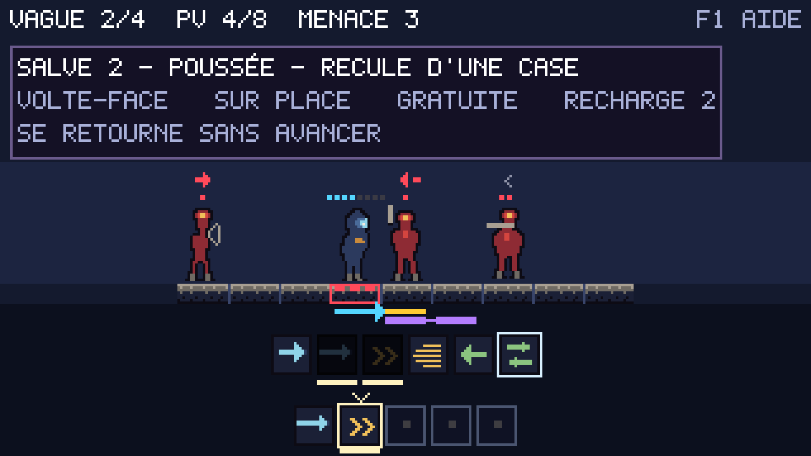
VAGUE 2/4 : la première est tombée. PV 4/8 : la moitié de la barre y est passée, pendant le chargement. MENACE 3 : trois coups tomberont sur la case du héros au prochain tour. Et dans la file, une SALVE 2 prête à partir pour un seul tour.
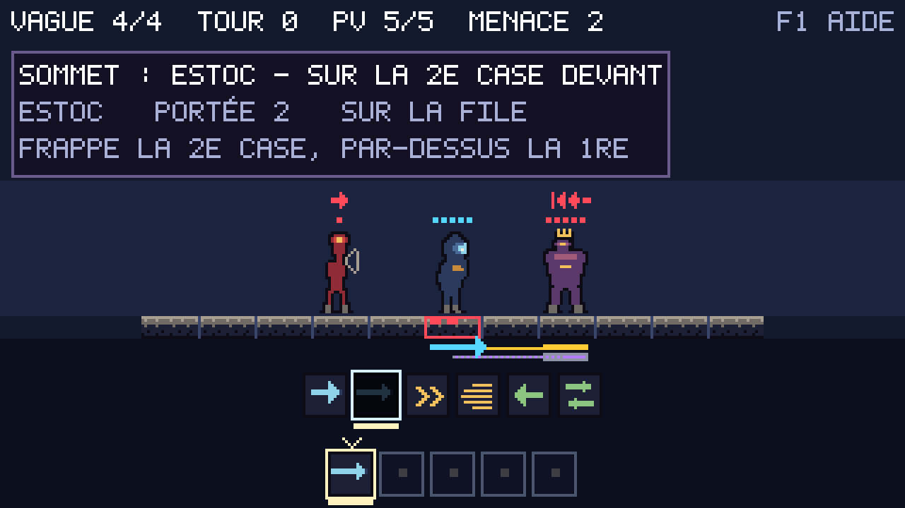
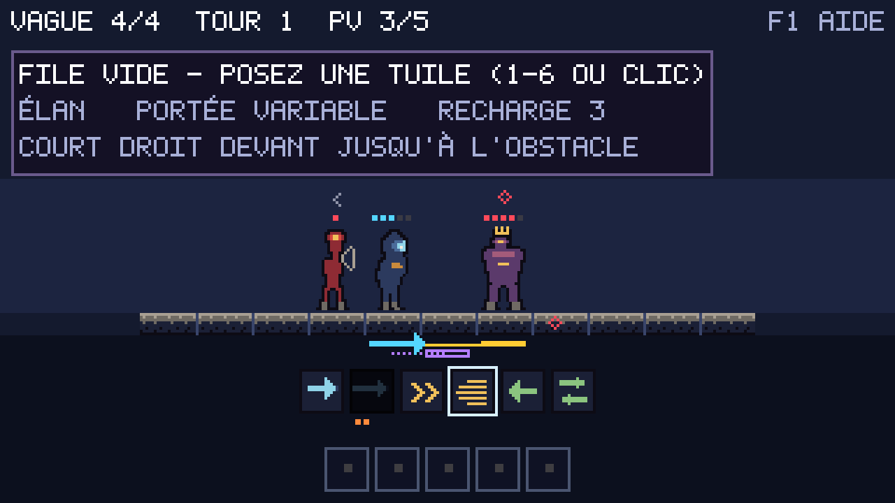
MENACE : rien ne tombera là, quelqu’un s’y lèvera, et mêler les deux ferait mentir le nombre. C’est pourquoi le bandeau écrit le mot : c’est le seul danger que le compteur de coups ne peut pas dire.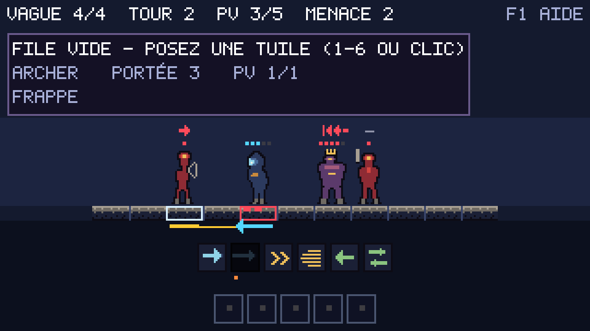
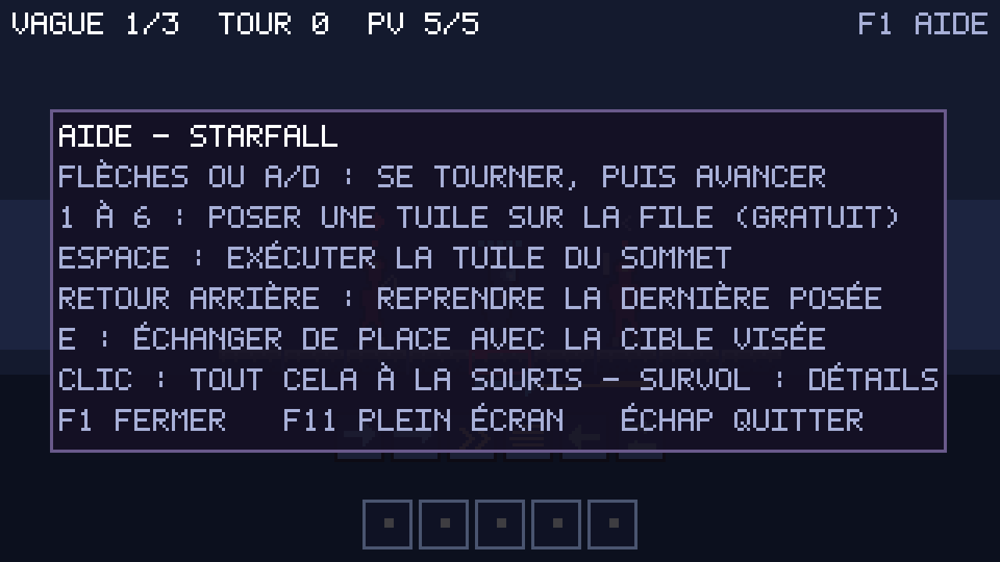
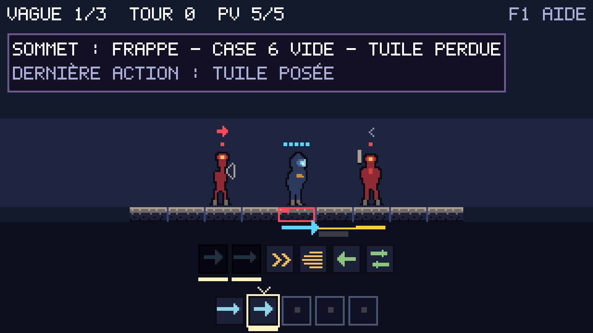
SOMMET : FRAPPE — RIEN DEVANT — TUILE PERDUE. La frappe porte à une case, l’ennemi est à deux, et le repère sous la case visée porte une croix. Il était d’abord peint « éteint », c’est-à-dire à un écart de contraste de 1,7 sur le fond de la fosse : la promesse-titre du jalon était portée par un rectangle de trois pixels quasi invisible. Un test mesure désormais chaque signal contre le décor sur lequel il tombe.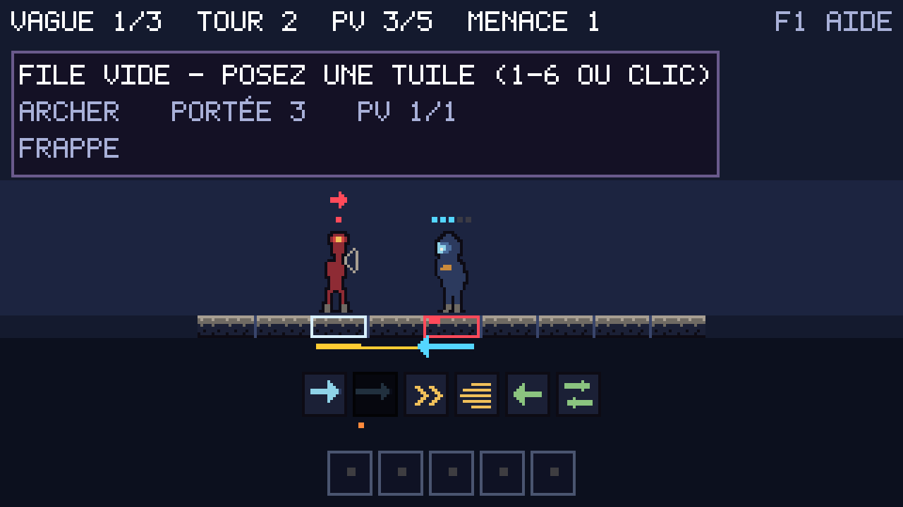
ARCHER — PORTÉE 3 — PV 1/1, et son intention en clair. Le jalon donnait une infobulle aux tuiles au motif que « l’estoc porte à deux cases et rien ne le disait ». C’était mot pour mot vrai de l’archer, du lancier et du trait agressif — sauf qu’on l’apprenait en prenant des coups plutôt qu’en gâchant des tuiles. Noter aussi le surlignage de survol : il ne s’allume que sur une case qu’un clic peut atteindre.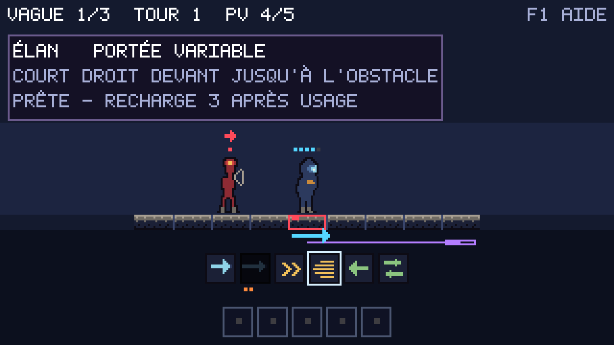
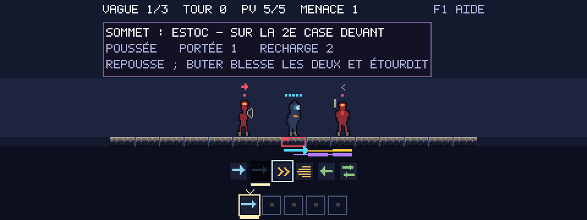
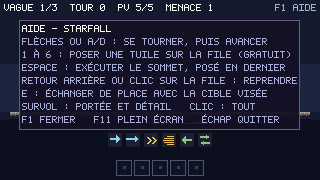
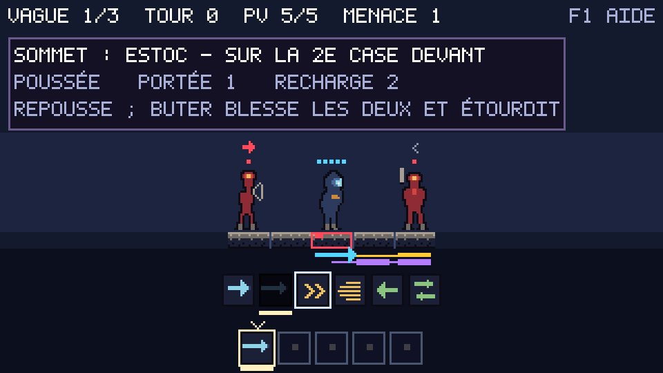
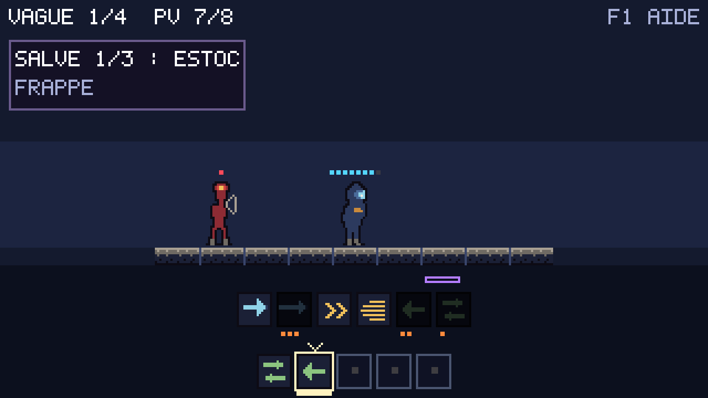
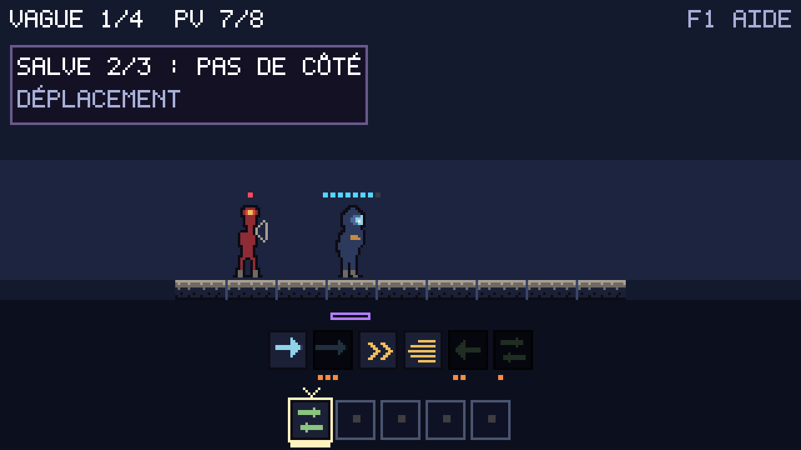
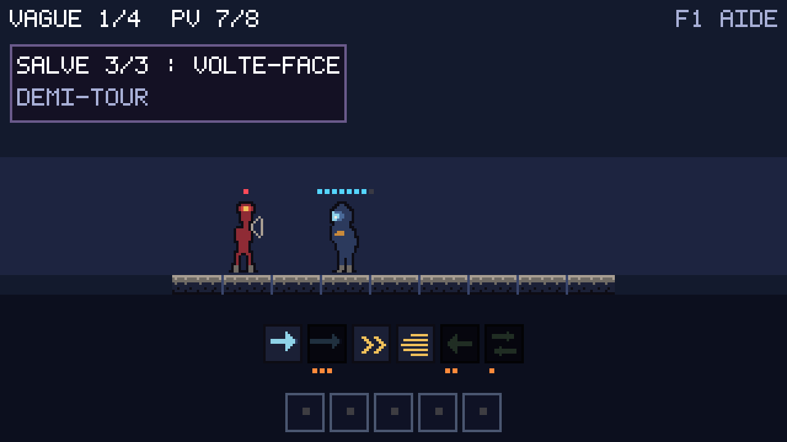
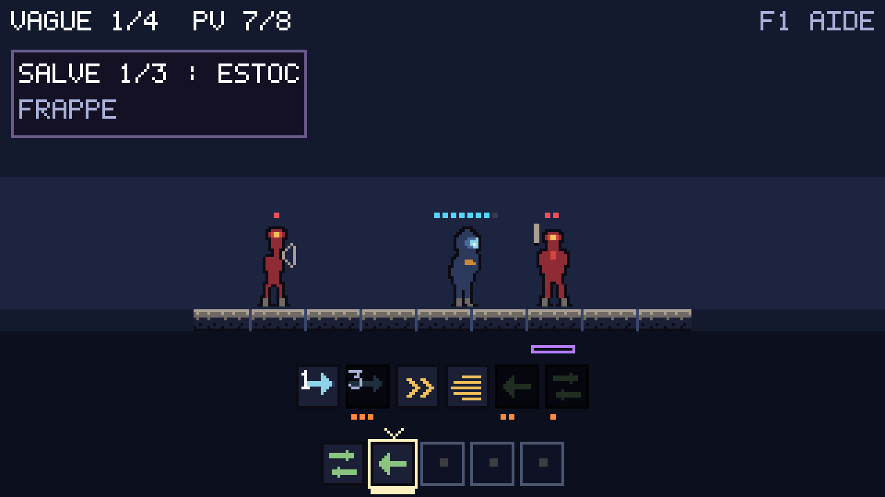
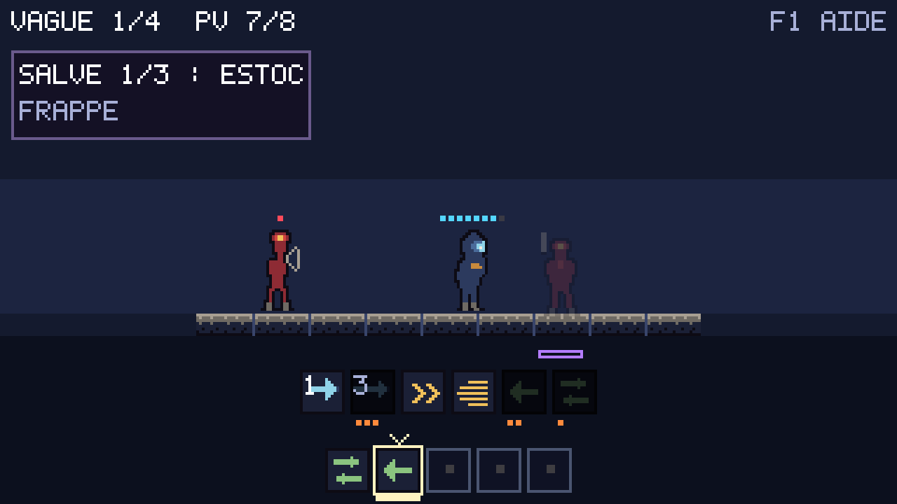
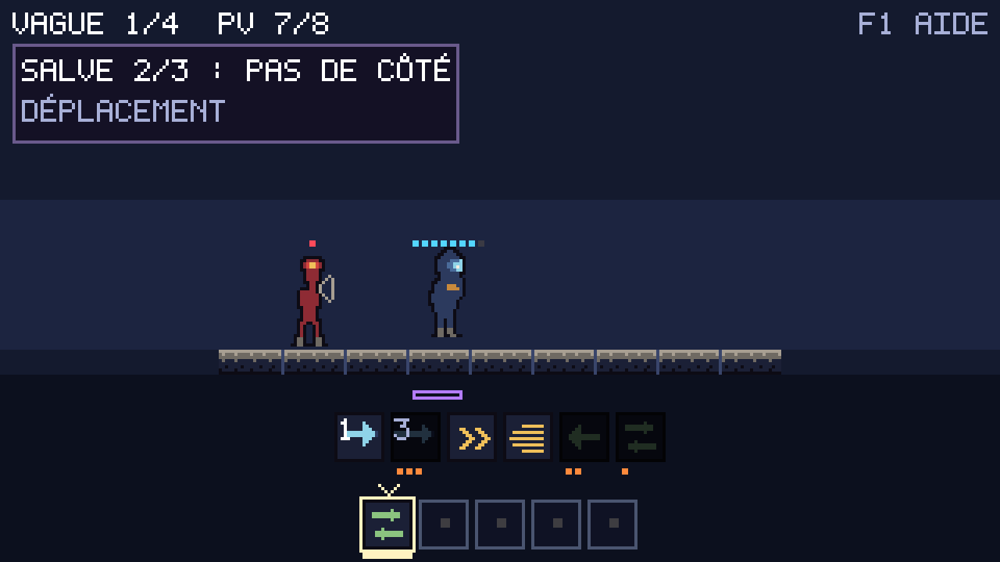
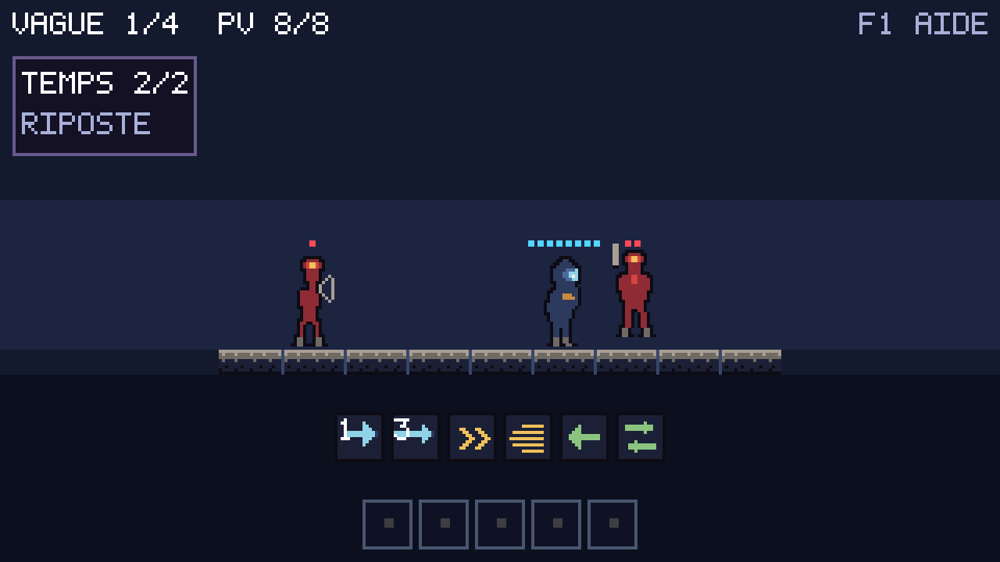
TEMPS 2/2 · RIPOSTE, et non le nom d’une tuile, puisque ce temps-là n’est pas du joueur. Remarquer ce qui manque : ni bande de menace, ni glyphe d’intention, ni repère de héros — les calques du repos se taisent pendant un déroulé, et cette planche le vérifie sur un écran de plus.Dépôt propre, 532 tests verts, 98 planches conformes. Je cherchais un trou connu — le pas, seul geste du jeu à ne pas bouger — et j’en ai trouvé un plus grave en chemin.
La phase ennemie s’exécute APRÈS que le modèle a consigné ses temps. Le déroulé s’achevait donc sur le plateau d’avant la riposte, et la scène, en se reposant, basculait d’un coup sur l’état vrai : ennemis déplacés, points de vie du héros en moins, vague neuve. L’illisibilité que ce déroulé devait supprimer avait simplement été repoussée à la fin de chaque salve — et le héros pouvait y perdre des points de vie sans qu’aucune image n’en montre la cause. Le plateau établi forme désormais un dernier temps : tout ce qu’aucune tuile n’explique s’y montre comme le reste.
Et la vieille règle est tombée avec. « Une action d’un seul temps ne se déroule pas » avait été écrite quand un déroulé n’était qu’une suite d’images figées : avec un seul temps, il n’y avait rien à égrener. Depuis que le mouvement est continu, un temps unique a un trajet. La règle devient : un temps sans tuile où rien ne bouge ne prend pas de place. Un demi-tour ne coûte donc aucune latence, et un pas gagne le mouvement qu’il n’avait pas — ainsi que la séparation d’avec la riposte, qui est toute la lecture : voir qui bouge d’abord, et qui répond ensuite.
Trois natures de temps, qu’il a fallu distinguer. Une tuile qui joue, le geste du joueur, la réponse des ennemis. Les deux dernières ne portent aucune tuile et le panneau les aurait nommées pareil, alors qu’elles disent le contraire l’une de l’autre : « voilà ce que tu viens de faire » et « voilà ce qu’on te fait ». Le tressaillement suit la même logique : reculer demande de savoir de quoi, une tuile le dit par sa case visée, une riposte à plusieurs ennemis ne le dit pas — il devient alors vertical, ce qui ne ment sur aucune direction.
Une planche a corrigé la règle que je venais d’écrire. La première version écartait tout temps immobile, tuile comprise ; la volte-face ne déplace personne, donc elle partait sans jamais être nommée, et le compteur affichait SALVE 1/2 après trois tuiles lâchées. Vu sur l’image, pas dans le code. Une tuile garde son temps même immobile : le panneau qui nomme un coup est l’information, autant que le mouvement quand il y en a un.
Un quinzième écran, parce que l’écran de salve ne pouvait pas servir de témoin : mesuré, sa dernière tuile est une volte-face qui ne déplace personne, et l’ennemi qui lui survit exécute une intention qui ne le déplace pas non plus. arenaRiposte joue un pas, et rien d’autre. Deux temps, deux mouvements, quatre planches. Trois gardes du projet ont attrapé mes oublis au passage — le recensement des scènes, la table des noms acceptés, et le corpus des phrases d’interface qui exigeait de voir les deux lignes neuves.
Dépôt propre, rien en attente, 531 tests verts, 98 planches conformes. Le contrôle demande aussi que rien ici n’affirme ce que le code ne fait plus — et une phrase de ce tableau le faisait, pour la deuxième fois de suite.
Les planches-contact sont datées : chacune documente son jalon tel qu’il a été livré, et les rafraîchir reviendrait à réécrire l’histoire. La règle est bonne, mais elle laisse un lecteur sans repère : aucune de ces images ne montre le jeu d’aujourd’hui, et rien ne dit de combien chacune a vieilli. Le bandeau répondait donc en désignant une planche — « la seule qui montre le jeu tel qu’il est aujourd’hui ». Elle désignait celle de M10, dont les tuiles ne portent pas le chiffre des dégâts, ajouté depuis. La même phrase annonçait « trois planches sans numéro de jalon » quand il y en avait six.
Une désignation qui n’est reliée à rien ne survit pas au travail qu’elle est censée suivre. C’est le même motif que la ligne d’aide corrigée ce matin, et le correctif est le même : captures/actuel cesse d’être une convention de rangement pour devenir une promesse vérifiable. Ses images doivent être identiques, octet pour octet, à des planches de référence — c’est-à-dire à ce que le jeu dessine maintenant. Le jour où les visuels changeront, elles cesseront de correspondre et le test rougira : il faudra les reprendre, ou renoncer à la promesse.
La mutation a refusé de mordre, et c’était la meilleure nouvelle du contrôle. J’ai glissé la planche de M10 dans captures/actuel ; le test aurait dû rougir ; il est resté vert en sept cent vingt millisecondes. Gradle avait servi un résultat en cache, parce que rien ne lui disait que ce dossier comptait parmi les entrées de la tâche de test. Une garde qui ne tourne pas quand change ce qu’elle garde n’est pas une garde — c’est une ligne verte de plus. L’entrée déclarée, la mutation mord et nomme le fichier fautif. Le défaut valait mieux que le test : c’est le troisième garde-fou de ce projet qui dormait au lieu de veiller, et le premier que sa propre mutation a réveillé.
Deux demandes en une : rendre les actions fluides, et préparer le code à un changement complet de visuels. La seconde commande la première. Écrire l’interpolation dans le code de dessin aurait donné le même résultat à l’écran et rien du tout à garder : elle serait partie avec les sprites qu’elle accompagne.
La scène cesse de déduire ; elle ne fait plus qu’exprimer. Une classe nouvelle, sans pixel ni sprite ni libGDX ni horloge, diffe deux instantanés du plateau et dit qui bouge, d’où, vers où, et où il en est. Elle rend des fractions — « à 60 % du chemin de la case 3 vers la case 4 », « soulevé de 0,8 », « opaque à 30 % » — et la scène, seule, décide ce qu’elles valent en pixels. Le jour où les visuels changeront, ce qui sera réécrit tient en une trentaine de lignes ; la dérivation ne bougera pas, et elle emporte avec elle tous ses tests, qui n’ont jamais eu besoin d’un écran pour tourner.
La fluidité ne vient pas du sous-pixel. Ce jeu dessine à l’échelle entière et n’a aucune intention d’arrêter. Une case fait vingt pixels-monde : un glissement d’une case, c’est vingt positions entières successives, et à quatre-vingts pixels écran, l’œil lit un mouvement continu sans que la grille soit trahie une seule fois. L’arrondi tombe une fois, au dernier moment, à un seul endroit du programme.
Il a fallu donner un numéro aux figures, et c’est la seule concession du modèle à la vue. Animer le passage d’un temps au suivant demande de savoir que le sabreur de la case 4 est le même que celui de la case 3 juste avant. Les rapprocher par leur sprite suffirait tant qu’aucun plateau ne porte deux ennemis identiques ; le nôtre en porte, et une poussée qui décale l’un dans la case que l’autre vient de quitter transforme le rapprochement en tirage au sort. Le numéro n’est ni ordonné, ni affiché, ni reproductible d’une exécution à l’autre — affirmation fragile, qui serait fausse au premier tri ou au premier parcours de table, donc gardée par un test : deux arènes bâties séparément, aux numéros donc différents, jouent la même ligne et doivent donner la même chorégraphie. La mutation qui remplace le parcours du plateau par celui d’une table de hachage le fait rougir.
La meilleure preuve que rien n’a été cassé est un non-événement : après la refonte, les 95 planches sont restées conformes octet pour octet. Le défaut d’un scénario de capture est de saisir la fin d’un temps, et à la fin d’un temps la chorégraphie rend exactement le plateau d’après. Ce choix de défaut n’est pas neutre : à zéro, chaque planche aurait montré l’état d’avant le temps qu’elle annonce, soit un décalage d’un temps sur quatre-vingt-quinze images qu’il aurait fallu accepter sans le comprendre. Les trois temps posés de l’écran de salve sont d’ailleurs restés identiques à l’octet après l’ajout des mi-courses : ils ont seulement changé d’indice.
Une planche est un point ; un mouvement est continu. Les trois mi-courses ajoutées prouvent qu’à 35 % du premier temps l’écran ressemble à ceci, et rien de plus. Que le mouvement parte de la bonne case, arrive à l’autre, ne dépasse jamais, ne recule pas, et que la fente revienne à son point de départ : cela se parcourt, et douze tests le parcourent. Trois mutations posées, trois morsures, chacune sur le test prévu.
Un instrument s’est fait prendre au passage. Un test comparait deux numéros de figure par assertSame — sur des long emballés, cela ne compare que des boîtes. Il était vert lancé seul, où les petits numéros partagent leurs boîtes, et rouge dans la suite complète, où le compteur est haut. Un instrument qui ne dit vrai que sur les petits nombres ne démontre rien ; c’est la quatrième fois que ce projet le relève, et la première où c’est la suite complète qui le relève toute seule.
Le contrôle périodique demande que le tableau de bord n’affirme rien que le code ne fasse plus. Cette fois j’ai appliqué la même question à la seule page que le joueur lit : le panneau F1. Une ligne sur huit était fausse. « 1 À 6 : CHARGER UNE TUILE - UN TOUR CHACUNE » — or le pas de côté et la volte-face sont Free-Play et se glissent dans la file sans consommer de tour. Deux tuiles sur six.
Elle n’a pas vieilli : elle était fausse le jour de son écriture. C’est ce qui la rend intéressante. La règle Free-Play existait avant l’économie de salve ; la phrase a été écrite par-dessus, et personne ne l’a relevée — ni moi, ni dix-huit reviews indépendantes. On relit une aide pour savoir si elle est claire, pas si elle est vraie. Elle est courte, elle est correcte en français, elle passe.
La phrase dit désormais « UN TOUR, SAUF GRATUITE ». Le mot est celui que l’infobulle porte déjà sur ces deux tuiles : l’aide envoie vers un mot que le joueur retrouvera, au lieu d’en inventer un second pour la même chose. Elle devient la ligne la plus large du panneau — la garde de débordement, qui mesure chaque phrase d’interface à la police réelle, l’a laissée passer, et la planche le confirme à l’œil.
Le correctif utile n’est pas la phrase, c’est le lien. Rien ne reliait l’aide au modèle, donc rien ne pouvait la contredire. Un test le tient maintenant : il ne cherche pas à comprendre le texte, il constate que le râtelier mélange deux coûts de pose et exige alors que l’aide nomme l’exception. La prémisse est assertée, pas supposée : un assumeTrue ferait un garde-fou qui se tait le jour où il cesse de s’appliquer, et sa disparition passerait pour un succès. S’il rougit un jour parce que toutes les tuiles coûtent pareil, ce sera la bonne nouvelle : la phrase peut redevenir simple.
Éprouvé par mutation, et la mutation a mordu son auteur. J’ai remis l’ancienne phrase : un seul test rougit, le bon. Puis le retour en arrière a échoué — le javadoc que je venais d’écrire cite la phrase fautive, donc l’ancre du remplacement inverse en trouvait deux. Le fichier est resté muté une minute de plus. C’est la troisième fois de ce projet qu’expliquer une erreur dans un commentaire rend l’erreur plus difficile à retirer du code : une ancre de mutation doit porter sur la ligne de code, guillemets compris, jamais sur la prose qui la raconte.
L’axe des dégâts était dans le modèle et dans l’infobulle. Il manquait là où la question se pose : sur la tuile elle-même. Savoir si un coup tue demandait de survoler, alors que « celui-ci suffit-il ? » se pose sur toute la main à la fois, au moment de choisir. Chez la source, ce nombre est l’information la plus grosse de l’écran — et c’est en regardant les captures que je l’avais noté.
Un chiffre dans le coin de chaque tuile, au râtelier et sur la file. Sur la file parce que c’est là qu’on relit sa salve avant de la lâcher, et que « combien » y compte autant qu’au moment de poser. Les tuiles qui ne frappent pas ne portent rien plutôt qu’un zéro : un zéro se lirait comme une faiblesse au lieu d’une autre nature, et c’est le même choix que dans l’infobulle. La teinte suit la disponibilité — un nombre vif sur une tuile en recharge promettrait un coup qu’on ne peut pas jouer.
Les quatre-vingt-quinze planches ont changé, et c’était attendu : le râtelier est sur tous les écrans. Regardées avant d’être adoptées, comme l’exige la règle — on y lit désormais 1 sur la frappe et 3 sur l’estoc, ce dernier atténué quand il recharge. L’axe se lit d’un coup d’œil. Le garde-fou du lanceur a tourné dans ce contrôle : sept chemins conformes. 518 tests, 95 planches sur 14 écrans.
Le journal des temps photographie le plateau à chaque tuile d’une salve. Or la recherche par faisceau et les fuzz rejouent des dizaines de milliers de salves sans que personne n’anime jamais rien : ils paient pour une donnée qu’eux seuls ne liront pas. La question méritait une mesure plutôt qu’une intuition.
Mesuré, suite complète relancée en force : 19,57 s avec les instantanés, 17,01 s sans. Environ quinze pour cent. Et la neutralisation a fait rougir exactement une garde — celle des instantanés, vérifiée nommément plutôt que supposée : rien d’autre ne dépend d’eux.
Et la conclusion est de ne rien changer, ce qui n’est une conclusion que parce que le chiffre existe. Un drapeau « enregistre ou non » créerait deux chemins : celui que les cinq cent dix-huit tests éprouvent, et celui que le joueur voit. Ce projet vient de payer cette leçon deux fois de suite — une déduplication qui vide un contrat, une règle recopiée qui diverge — et quinze pour cent d’une suite de vingt secondes achètent moins qu’un chemin unique. L’économie voisine, ne rien enregistrer pour une salve d’une seule tuile, est écartée pour la même raison : cette règle vit dans le déroulé, et la recopier ici la ferait diverger. L’arbitrage est écrit dans le code, avec son chiffre. 518 tests, 95 planches sur 14 écrans.
Deux fois de suite j’ai affirmé sans vérifier : une mutation qui ne mutait rien, puis un message de commit annonçant une phrase que le fichier ne contenait pas. Et cette page a déjà dérivé sur ses chiffres — un compte de planches resté en arrière, un ratio faux d’un facteur douze. Chaque fois, c’est une review qui l’a vu. Une mémoire qu’on ne peut vérifier qu’en la relisant n’est pas gardée.
Le nombre de planches est le seul de ces chiffres qui soit exactement vérifiable : il est sur le disque. Il figure désormais en tête de page, et un test le confronte au contenu de captures/reference. Annoncer une planche de moins fait rougir ; ajouter un écran sans toucher à l’en-tête fait rougir aussi — et c’est le cas qui compte, celui où le chiffre vieillissait en silence.
Ce qu’il ne vérifie pas est écrit dans son javadoc, parce que la distinction est le fond de l’affaire : les entrées du journal portent les comptes de leur époque — 71 planches sur 11, 84 sur 12 — et ce sont des relevés datés, comme les planches-contact. Les rafraîchir reviendrait à réécrire l’histoire. Seule la ligne d’en-tête parle du présent ; c’est donc la seule que ce test lit. Deux entrées ont été déclarées à Gradle au passage — la page et le dossier des planches — sans quoi il aurait servi un résultat en cache après l’ajout d’un écran, et la garde aurait dormi exactement quand elle devait parler. 518 tests, 95 planches sur 14 écrans.
Trois relectures, trois défauts, une seule famille — l’état au repos qui fuit dans la vue animée. Le projet a déjà appris ce que valent les trouvailles une par une : j’ai donc arrêté de chercher et j’ai énuméré. Toutes les méthodes appelées au dessin, toutes leurs lectures de l’arène, classées une bonne fois.
Deux fuites restaient, et ce sont des halos de survol — sur le râtelier, sur la file. Elles ne mentent pas sur le plateau : elles promettent une prise. Or les entrées sont bloquées pendant le déroulé, donc le halo désignait une tuile que le joueur ne pouvait pas saisir. C’est la même faute que le surlignage d’une case qu’un clic ne peut pas atteindre, corrigé à M4 et retrouvé depuis sous trois déguisements.
Et le relévé est écrit dans le code, pas dans ma mémoire. Trois colonnes : ce qui est rejoué depuis le temps — figures et file, les choses que l’action consomme sous les yeux ; ce qui se tait — tout ce qui annonce ce qui vient ou ce qu’un geste ferait ; et ce qui reste vivant — la vague et les points de vie, qui situent sans annoncer, et les points de recharge du râtelier, qui disent ce qui sera disponible au tour suivant. Les faire reculer suggérerait qu’on peut encore agir, ce que le blocage des entrées dément. La liste vaut mieux que la vigilance.
Le témoin manquait aussi, et c’est ce qui m’a coûté le plus : aucun écran ne survolait quoi que ce soit sur ses images de déroulé, donc éteindre les halos ne changeait aucune planche — et les rallumer non plus. Une souris posée sur la première tuile a été ajoutée au scénario de salve pour cela seul. Désormais, rendre le halo au déroulé fait rougir ses trois planches. 517 tests, 95 planches sur 14 écrans.
Troisième tour de relecture de mon propre code d’animation, troisième défaut de la même famille — et celui-ci tombe sur le moment le plus important du jeu. J’avais fait taire les calques du monde, puis le panneau ; la bannière de fin, elle, était restée hors de la garde. Une salve qui gagne peignait donc « VICTOIRE » dès la première image du déroulé : le résultat était annoncé avant d’être montré.
Et la menace du bandeau disait la même chose au même moment. Elle décrit la phase ennemie à venir, peinte par-dessus un plateau d’hier. La vague et les points de vie restent — ils situent la partie, ils n’annoncent rien ; menace et invocation se taisent. Ces phrases nouvelles ont rejoint le corpus qui éprouve toutes celles de l’interface, sans quoi ni leur dessinabilité ni leur largeur n’auraient été gardées.
Un quatorzième écran pour le prouver. La règle n’avait aucun témoin possible : l’écran de salve ordinaire ne gagne rien. La ligne gagnante, elle, se termine par une salve de deux tuiles — ce sont ses deux temps qui sont désormais capturés, après son image au repos. On y lit « SALVE 1/2 : POUSSÉE » avec le souverain encore debout et aucune bannière, là où l’image précédente affiche « VICTOIRE ». Sortir la bannière de sa garde change ces deux planches. Un garde-fou a travaillé en chemin : le test qui refuse une image au-delà du scénario tenait le nombre de gestes pour la dernière image — il avait raison de refuser le changement, et tort de calculer la borne lui-même ; elle vient maintenant du scénario. 517 tests, 95 planches sur 14 écrans.
Une salve de cinq tuiles se résout dans un seul tour, et l’écran passait de l’avant à l’après d’un coup. Le geste central du jeu était le seul qu’on ne pouvait pas lire. La résolution reste instantanée dans le modèle — les 517 tests, la recherche de jouabilité et les mesures continuent de voir une résolution atomique : c’est la vue qui prend du retard sur l’état, jamais l’inverse.
Les cinq morceaux. Le modèle consigne les temps de chaque action. La scène les déroule, entrées bloquées, sans horloge — il n’avance que par le temps qu’on lui donne, ce qui le rend éprouvable dans gradlew test et garantit qu’il finit. Chaque temps porte son plateau, si bien que les figures reculent dans le temps. La file se draine tuile par tuile. Et le panneau raconte : « SALVE 1/3 : ESTOC ».
Le défaut, trouvé en me relisant. Menaces, intentions, repère du héros, portée survolée, panneau d’information : tous lisaient l’arène vivante pendant que les figures venaient d’un instant passé. Le repère du héros se posait sur sa case finale tandis que sa figure occupait la précédente. Deux sources de vérité sur le même écran — et pas une question d’esthétique : une annonce peinte sur un plateau d’hier ne décrit rien, ce qui contredit l’invariant du projet.
Et j’ai annoncé ce correctif comme non témoigné avant de lui donner un témoin. Le mode capture ne déroulait jamais : les planches ne pouvaient pas l’attraper, et sa seule défense était d’être écrit à un endroit. Un treizième écran le corrige, une image par temps, déterministe parce qu’il avance d’un nombre entier de temps. Les trois règles y rougissent sous mutation. Deux garde-fous existants ont travaillé en chemin : le test des noms de scène a refusé la nouvelle tant qu’elle manquait à son inventaire, et le lanceur a refusé les images au-delà du dernier geste — borne juste jusque-là, fausse pour un scénario qui déroule après. La première fenêtre, posée à sept images, omettait le dernier temps : vu en regardant les planches, comme l’exige la règle de ce projet. 517 tests, 92 planches sur 13 écrans.
Décision prise : rétablir. La frappe retire un point et revient en deux tours ; l’estoc en retire trois et met quatre tours à revenir. Les points de vie sont posés pour que le seuil morde — archer 1, sabreur 2, lancier 3 — si bien que le lancier tombe d’un seul estoc et demande trois frappes. C’est le « ce coup tue-t-il ? » que la source met au centre, et qui n’existait pas ici.
Le premier réglage était mauvais, et la mesure l’a dit. J’avais donné à la frappe une recharge de un tour, pour incarner l’archétype « 0 recharge » de la source. Elle ne rechargeait alors plus jamais : le tour consommé par la salve lui rendait son point dans le geste même. Un test d’arithmétique de recharge l’a attrapé en une ligne. Et une première inflation des points de vie — colosse 4, souverain 6 — a rendu la tranche ingagnable : c’est le garde-fou de jouabilité qui a refusé, pas moi.
Ce que le changement a coûté. Huit montages de test calibrés sur « une frappe tue un sabreur » ; la ligne de capture entière, qui mourait désormais en vague 2 ; la fenêtre de victoire ; la coupe de vague 4 ; le calibrage d’enlisement ; les 84 planches. La nouvelle ligne a été retrouvée par la recherche, comme la précédente l’avait été : 33 gestes au lieu de 87, victoire à deux points de vie. Elle est plus courte de moitié parce qu’un estoc abat d’un coup ce qui demandait trois frappes — l’axe se lit dans la longueur de la ligne.
Et le nombre se voit, ce qui était la moitié de la demande : l’infobulle affiche les dégâts juste après le nom, avant la portée, parce qu’un joueur compte « ce coup tue-t-il » avant de compter les cases. Les tuiles qui ne frappent pas se taisent là-dessus plutôt que d’afficher un zéro, qui se lirait comme une faiblesse au lieu d’une autre nature. Un garde-fou épingle l’axe lui-même, avec ses deux moitiés : l’estoc doit abattre, et la frappe doit échouer à abattre la même cible. Toutes les planches ont été regardées avant d’être adoptées. 510 tests, 91 planches sur 13 écrans.
Les deux passes précédentes ont exploité les documents de mécanique. Restaient les images, et elles disent quelque chose que le texte ne dit pas aussi fort : sur chaque tuile de Shogun Showdown, le nombre à gauche est énorme, et c’est le dégât. Sur les nôtres, il n’y a pas de nombre. Pour une bonne raison : toutes nos tuiles infligent un point.
Ce n’est pas un oubli, c’est une amputation cohérente — et la nuance mérite d’être tenue. La constante porte déjà sa raison : « la Vagabonde ne frappe pas fort, elle se replace ». Ce que nos tuiles font varier, c’est la forme, et le prix se paie en recharge. C’est la doctrine du projet appliquée à la lettre : « une forme vaut mieux qu’une nuance ».
Mais la conséquence n’était écrite nulle part, et c’est elle qui compte : tout l’axe des seuils de dégâts disparaît avec le nombre. Chez eux, « atteindre 5 est le seuil critique absolu », les constructions s’opposent entre « 0 recharge » et « gros coup », et une cible à 7 PV face à une tuile à 2 « brise l’économie de tours ». Ici, aucune de ces phrases n’a de sens. Un lecteur du document d’inspiration cherche ce nombre sur nos tuiles, ne le trouve pas, et n’avait rien pour comprendre pourquoi.
Et je ne tranche pas celui-là. Les cinq écarts précédents étaient soit corrigeables à coût nul, soit forcés par le modèle. Celui-ci ne l’est ni l’un ni l’autre : rétablir des dégâts variables rouvrirait les points de vie des cinq archétypes, les six coûts de recharge, la ligne de 87 gestes, les mesures sur quarante-quatre configurations et les 84 planches. C’est un changement de périmètre — la seule catégorie que ce projet me demande de ne pas décider seul. La question est posée plus bas, avec les deux réponses et ce qui manque pour choisir ; le travail continue sur ce qui n’en dépend pas. 509 tests, 84 planches sur 12 écrans.
La passe précédente s’était arrêtée sur sa plus belle prise. Je l’ai terminée : chaque règle nette des deux documents confrontée au code, comme on confronte un titre de test à son corps.
Ce qui est conforme, et qu’il faut dire aussi : la file s’exécute bien de la dernière posée à la première ; la recharge avance d’un cran par tour et retombe à zéro dès l’usage, « qu’elle touche ou non » ; l’explosif inflige bien deux dégâts aux adjacents ; le fonceur se déplace « le plus loin possible » ; vider le plateau appelle immédiatement la vague suivante. Un balayage qui ne rend que des vrais négatifs reste un balayage.
La salve qui s’interrompt était un écart non nommé. Son javadoc la défendait longuement sur ses propres mérites — et l’argument tient — sans jamais dire qu’elle diverge. Or la source en fait l’inverse d’un confort : l’exécution est « tout-ou-rien », vider le plateau appelle la vague suivante, et se retrouver démuni est la punition prévue. Nous nous arrêtons parce que la ligne d’annonce ne décrit que la première tuile : punir un gaspillage invisible au moment de décider contredirait le télégraphe, qui est l’invariant central. Le choix reste ; ce qui change, c’est qu’il est désormais présenté comme un arbitrage et non comme une évidence.
Et l’absence des statuts est désormais écrite. Poison, gel, malédiction, bouclier, et les sept enchantements de tuile : rien de tout cela n’existe ici, et rien ne le disait. Ce n’est pas un manque — ils appartiennent à la couche de méta-progression qu’une tranche verticale ne porte pas — mais un lecteur du document d’inspiration les cherchait sans trouver ni le code ni la raison. Aucune ligne de jeu ne change dans ce lot : il ne produit que des phrases, et c’est ce qu’il fallait produire. 509 tests, 84 planches sur 12 écrans.
Relecture des vingt-six captures de la source et des deux documents de mécanique, en cherchant les écarts que personne n’avait décidés. Le résultat le plus net n’est pas un détail d’interface : c’est une règle de jeu entière qui n’avait jamais été portée.
« Les invocations disparaissent instantanément à la mort du leader ». C’est écrit noir sur blanc dans le document d’inspiration, avec sa raison d’être : « économisant ainsi des dizaines de tours d’action potentiellement mortels ». Chez nous, un sbire invoqué n’avait aucun lien avec son invocateur : tuer le souverain laissait ses sbires debout. Conséquence, la rencontre finale n’avait qu’une seule ligne jouable — tout nettoyer — là où la source en offre deux, la seconde étant d’ignorer les sbires pour saturer le chef.
Elles disparaissent, elles ne meurent pas, et la distinction est une décision. Ni explosion, ni enchainement : créditer ces retraits inverserait l’incitation que la règle installe — on gagnerait à laisser vivre les sbires pour les encaisser tous d’un coup. Le garde-fou épingle les deux moitiés, et la seconde compte autant : un ennemi arrivé avec sa vague ne doit pas disparaître. Une implémentation qui viderait le plateau satisferait la première et détruirait le jeu ; les deux mutations rougissent.
Et une planche a changé, ce qui est la meilleure preuve que la règle porte. L’image finale de la ligne gagnante affichait « VICTOIRE — ENCHAÎNEMENT 2 » ; elle affiche maintenant « VICTOIRE ». Le coup fatal ne compte plus le sbire comme une mort. Planche regardée avant d’être adoptée, comme l’exige la règle de ce projet. Les deux autres écarts — le sens de « rapide » et celui d’« agressif » — ne sont pas corrigeables : ils supposent des mécaniques que notre modèle n’a pas. Ils sont désormais nommés dans le code et au tableau de bord, ce qui était le vrai manque : un écart tu ressemble à un oubli. 509 tests, 84 planches sur 12 écrans.
La review avait relevé un champ static mutable dans une classe de test sans le compter comme défaut : « piège pour qui activera la parallélisation, pas un défaut aujourd’hui ». Elle avait raison sur les deux moitiés — et c’est la première qui compte. Un compteur d’état partagé entre méthodes de test est une course qui attend son déclencheur, et ce projet a déjà assez payé les garde-fous qui dépendent d’une condition non écrite. Il est devenu local, la profondeur étant relevée par l’appelant qui tient déjà l’arène. Capacité ramenée à une tuile, la garde rougit toujours.
Et le chiffre faux vivait à deux endroits. Je l’avais corrigé dans le tableau de bord au cycle précédent, en laissant intact le commentaire du code qui le portait aussi. Une mesure fausse dans un commentaire est aussi durable qu’ailleurs, et plus difficile à retrouver. Les deux disent maintenant la même chose : 80 400 observations, plus d’un quart à deux tuiles ou plus, profondeur maximale cinq.
Le troisième contrat a été éprouvé comme les deux autres. La review avait montré que celui de canUnqueue était vide et que celui de canStep avait des dents ; elle n’avait pas fait le troisième. Ne pas le faire aurait été laisser un symétrique ouvert — le motif que ce projet a déjà payé neuf fois. Mesuré : canQueue muté seul fait rougir son contrat en premier, « une tuile prête sur une file vide doit se poser ». Les trois prédicats ont désormais chacun un contrat, et les trois mordent. 508 tests, 84 planches sur 12 écrans.
Cinq défauts. Les deux majeurs sont dans du code que je venais d’écrire, et le premier est une leçon que ce projet n’avait pas encore apprise : rendre un geste entièrement dépendant de son prédicat vide le test qui garde leur accord.
Un contrat entre une expression et elle-même. J’avais fait passer unqueueAt par canUnqueue — la déduplication paraissait évidente. Conséquence : « le prédicat dit oui » et « le geste ne rend pas BLOCKED » sont devenus la même expression évaluée deux fois, et le sens trop restrictif est devenu invisible. Mesuré : un canUnqueue qui interdit de reprendre la dernière tuile d’une file pleine laisse les 508 tests verts, y compris celui écrit pour l’épingler. La review a mis le doigt sur le contraste exact : canStep, lui, a des dents, parce que step passe par un refus partagé et non par le prédicat public.
Et une exclusion justifiée par un critère mesuré sur le seul élément exclu. J’avais retiré EXPLOSIF de la couverture des traits en montrant que le neutraliser laissait ce fichier vert. Critère juste ; je ne l’avais appliqué qu’à lui. La review l’a appliqué aux trois restants : neutraliser AGRESSIF, puis FONCEUR, laisse les dix tests verts eux aussi. La raison est structurelle — ce test compare l’annonce à la résolution, deux sorties du même cerveau, et changer ce qu’un trait fait déplace les deux ensemble.
Les trois autres. Le javadoc de canUnqueue affirmait une divergence latente entre deux sites qui, mesure faite, ne pouvaient pas diverger — chacun enfermé dans un contexte qui garantit déjà la borne. La famille « reprendre », que le commit précédent déclarait réparée, restait infalsifiable : classement corrigé, mais unqueueAt ne connaît que deux sorties et l’énumération ne propose ce geste que lorsque l’autre est certaine. Et un chiffre de cette page était faux d’un facteur douze : il décrivait un montage jetable, pas le fuzz auquel il était attaché.
La déduplication a été défaite, et c’est le contraire de l’instinct. unqueueAt refait son propre contrôle au lieu de demander au prédicat. Deux implémentations indépendantes qui doivent s’accorder valent mieux qu’une seule consultée deux fois — et le code le dit maintenant, avec la mesure. La mutation de la review fait désormais rougir le contrat en nommant l’emplacement litigieux. Au passage, le risque de plantage disparaît : la version dédupliquée transformait une divergence en NullPointerException.
La couverture des traits dit désormais ce qu’elle est : un contrôle de composition, pas une épreuve. Les quatre traits y reviennent — EXPLOSIF compris — et le message ne promet plus une épreuve : il dit que l’échantillon les contient, ce qui reste utile puisqu’un échantillon qui les perdrait n’éprouverait plus rien. Les effets, eux, sont gardés là où ils agissent, et chacun des quatre y rougit sous mutation. Le compteur de morts qui justifiait l’exclusion a été retiré : une assertion sans objet est un garde-fou d’apparence.
Et « reprendre » a enfin une assertion qui peut échouer : son résultat positif. Un geste qui rend MOVED au lieu de reprendre la tuile fait maintenant rougir ; l’ancienne formulation, qui n’interdisait qu’un refus, ne le voyait pas. Le javadoc trop large est corrigé, le filtre qui ne filtre rien le dit lui-même, et le chiffre faux est remplacé par la population réelle du fuzz : 80 400 observations, plus d’un quart à deux tuiles ou plus, profondeur maximale cinq. 508 tests, 84 planches sur 12 écrans.
Quatre défauts de cette famille ont déjà été trouvés ici — « et la partie se termine » sans assertion de terminaison, « tout geste énuméré est accepté » sans regarder la réponse du jeu, « chaque configuration » pour douze sur quarante-quatre, « aucune autre intention » rétrécie aux avances. Tous les quatre par hasard. Je les ai cherchés pour de bon : inventaire de tous les titres portant plusieurs clauses, avec le compte de leurs assertions. Cent-dix titres, deux prises.
Un Math.min décoratif. « Passer une vague rend un point de vie, sans dépasser le maximum » attendait Math.min(MAX_HEALTH, sante + soin) — c’est-à-dire la formule de heal() recopiée mot pour mot. L’assertion avait donc l’air d’éprouver le plafond. Elle ne le pouvait pas : la mise en scène descend le héros à deux points quand le maximum en vaut huit, si bien que le min ne serrait jamais.
Et ma première conclusion était fausse, ce qui vaut d’être écrit. J’en avais déduit que le plafond n’était gardé nulle part. Mutation faite — soin sans plafond — un autre test rougit : « le répit ne dépasse jamais le maximum », qui existe à dix lignes de là et travaille sur un état où la borne mord. Le défaut n’était donc pas un trou de couverture mais une malhonnêteté de titre, et la distinction compte : la règle du jeu était tenue, la promesse du test ne l’était pas. Le titre ne promet plus que ce qu’il éprouve, et l’attendu ne recopie plus la formule.
La seconde prise était la mienne, et récente. « Le bandeau n’annonce plus de menace ni d’invocation » : son propre commentaire disait depuis trois cycles que la seconde moitié n’était pas assertée, faute d’état pour le faire. Ce témoin existe depuis, dans un test dédié ; le titre, lui, continuait de promettre les deux. Il dit maintenant ce qu’il fait. Un garde-fou qui promet plus qu’il ne tient est un garde-fou qu’on croit sur parole, même quand la règle est gardée ailleurs. Le garde-fou du lanceur a tourné dans ce contrôle : sept chemins dynamiques conformes. 508 tests, 84 planches.
Angle mort dans ma propre boucle : à chaque tour je vérifie test et verifyRender, jamais le garde-fou du lanceur. Il vit hors de gradlew test — il demande un écran et lance le vrai jeu sept fois — exactement la condition dans laquelle ce projet a déjà vu des règles pourrir sans témoin. Je l’ai donc lancé, et il rend 9 contrôles conformes sur 9 en une minute et demie.
Mais sa première exécution en a rendu 7 sur 9, sur exactement le même code : les deux seuls chemins qui doivent réussir en rendant zéro échouaient. Rejoués isolément, ils rendent zéro. Le lanceur est correct ; ce qui a fléchi est une contention de démon Gradle — ce contrôle lance gradlew sept fois de suite, et il démarrait juste après le verifyRender de la boucle. Un garde-fou qui rend deux verdicts sur le même code est un garde-fou qu’on apprend à ignorer, et c’est noté comme tel.
Et j’ai failli consigner une seconde trouvaille qui n’existait pas. Relancé, il a paru suspendre — plus de dix minutes sans une ligne. Le préambule de ce fichier dit qu’un garde-fou qui suspend est pire qu’un garde-fou absent : j’avais donc de quoi écrire un beau paragraphe. Il aurait été faux. Ce qui suspendait, c’était mon capteur, qui mettait tout le flux en tampon jusqu’à la fin. Écrit directement dans un fichier, le même contrôle se déroule sous les yeux et finit en 90 secondes.
Troisième fois en trois cycles qu’un instrument à moi est le coupable, après la case d’arrivée du télégraphe et le compteur de morts sorti à −300. Le motif mérite d’être écrit une bonne fois : quand la mesure accuse, il faut d’abord soupçonner l’appareil. La seule modification retenue va dans ce sens — le harnais annonce chaque chemin avant de le lancer, au lieu de rester muet pendant les minutes qu’il prend. Sans cette ligne je n’aurais pas su distinguer un blocage du jeu d’un blocage de ma lecture. Et il rejoint le contrôle périodique. 508 tests, 84 planches, 9 contrôles de lanceur.
Plus rien à trancher, la dix-septième review entièrement traitée. J’ai donc ouvert un angle neuf, le seul de la liste des motifs que je n’avais jamais cherché systématiquement : les assertions dont la valeur attendue est produite par le code qu’elles testent. Balayage mécanique de toute la suite, cinq candidates.
Trois sont légitimes, et il faut le dire aussi. Un compte d’ennemis comparé à son compte distinct — mais précédé d’un size() ≥ 2 qui garantit qu’il y a quelque chose à comparer. Un alignement d’emplacements comparé à un pas constant, indépendant de la fonction éprouvée. Et le contrat entre l’énumération et le prédicat, qui confronte deux implémentations et non une à elle-même. Un balayage qui ne rend que des vrais négatifs reste un balayage utile.
La quatrième portait la même forme que le défaut de la seizième review : « autant d’éléments que d’éléments distincts » sur la file, trivialement vrai en dessous de deux tuiles. Mesuré : sur les 80 400 observations du fuzz (400 graines × 201 états) elle atteint deux tuiles ou plus dans plus d’un quart des cas, et sa profondeur maximale est cinq — l’assertion porte donc réellement, mais rien ne le garantissait, et c’est exactement ainsi que sa jumelle avait vécu vide pendant des mois. La profondeur atteinte est désormais assertée : capacité ramenée à une tuile, le test rougit en le nommant.
Et la cinquième m’a fait recommencer une erreur que la review venait de me reprocher. J’avais posé la même garde sur la table des scènes — après une comparaison de comptes qui tombe la première. Elle n’était donc jamais atteinte : un garde-fou d’apparence, le défaut numéro cinq du rapport précédent, reproduit dans le commit qui le corrigeait. Elle est maintenant en tête, et sur la liste que l’on déduplique plutôt que sur la table parallèle : réduire les scènes construites à une seule la fait parler la première, avec son propre diagnostic. 508 tests, 84 planches sur 12 écrans.
Cinq défauts, et le plus instructif est celui-ci : le correctif qui fermait un motif l’a réintroduit deux lignes plus loin.
Mon assertion sur les traits certifiait un drapeau, pas une épreuve. J’avais écrit « le télégraphe n’est pas éprouvé contre ce trait » pour les quatre. C’est faux pour EXPLOSIF : son unique effet est dans Arena.kill, et cet échantillon ne tue jamais d’ennemi — il ne joue que des demi-tours, et la phase ennemie ne frappe que le héros. Le rendre totalement inerte laissait le fichier entièrement vert. Compter 1 417 présences ne dit rien de ce que le trait fait : c’est le motif « l’échantillon exclut ce qu’il prétend couvrir », que la même assertion venait de fermer pour les archétypes.
Et un fourre-tout a rendu vide toute une famille de gestes. Mon classement des refus traitait pas, poser, échange, et rangeait tout le reste dans EMPTY_QUEUE. Or il existe une cinquième famille, reprendre N, dont le geste ne peut rendre que UNQUEUED ou BLOCKED : EMPTY_QUEUE lui est inatteignable, donc l’assertion était vraie par construction pour elle. La review l’a prouvé en faisant énumérer un emplacement de trop : suite verte.
Le reste. Une assertion laissée en fin de test ne pouvait plus jamais échouer, la garde ayant été déplacée en amont — garde-fou d’apparence, dans le commit qui les traque. Et deux chiffres de cette page : « de 18 000 à 1 500 par archétype » ne décrit que le souverain, et l’attribution du « 381 » désignait la richesse du jeu quand la mesure désigne la vague.
Le cinquième endroit, et le dernier de la famille. Chercher pourquoi le fourre-tout avait pu masquer les « reprendre » a mené à la cause : unqueueAt était le seul geste du joueur sans prédicat sur l’arène, et sa règle était recopiée en deux endroits qui n’en connaissaient qu’un des deux motifs — la fin de partie, jamais l’emplacement inexistant. Arena.canUnqueue existe désormais, l’énumération et la scène l’interrogent, et les trois prédicats ont enfin chacun leur test de contrat — il n’y en avait que pour le premier, ce qui était le symétrique laissé ouvert de mes propres correctifs.
Le classement des refus ne peut plus rien laisser tomber. Il ne range plus par défaut : un libellé inconnu lève une erreur qui dit d’aller l’ajouter. Un fourre-tout est une décision de ne pas regarder, et c’est précisément ce qui avait rendu la garde vide.
L’assertion sur les traits ne porte plus que sur ce qu’elle éprouve — les trois qui agissent pendant la phase ennemie — et l’exclusion d’EXPLOSIF est gardée, pas espérée : le test compte les morts et exige zéro, si bien que le jour où cet échantillon se mettra à tuer, il réclamera lui-même qu’on réintègre le trait. Vérifié par mutation : le trait rendu inerte rougit bien — ailleurs, dans les quatre tests qui l’éprouvent là où il agit.
Et un compteur que j’ai dû corriger deux fois en l’écrivant. Ma première version comptait les morts par différence de tailles ; elle est sortie à −300, parce qu’une invocation ajoute un ennemi dans le même tour. Un compteur qui peut descendre sous zéro ne compte pas ce qu’il croit compter : il nomme désormais les disparus. Les chiffres invérifiables ont quitté les messages d’assertion, et les paramètres du « 381 » sont consignés pour qu’il se rejoue. 508 tests, 84 planches sur 12 écrans.
J’avais fermé l’axe des archétypes : le télégraphe est éprouvé contre les cinq, et l’échantillon le dit. Il en existe un second, jamais interrogé — les traits, qui changent ce que l’ennemi fait : le rapide frappe deux fois, l’agressif atteint une case plus loin, le fonceur comble toute la distance, l’explosif emporte ses voisins. Mesuré : les quatre sont bien présents sur les tours vérifiés. Rien ne l’affirmait ; c’est fait, et retirer aux ennemis leurs traits fait maintenant rougir le télégraphe.
Mais c’est en cherchant ça que j’ai trouvé autre chose, et il a fallu trois instruments pour ne pas se tromper de coupable. Le héros encaisse 381 coups sur une case non annoncée (300 graines × 60 tours, quatre gestes, vagues 1 à 4). — Attribution corrigée par la dix-septième review : j’avais écrit « en jouant vraiment », comme si la richesse du jeu était la cause. Mesuré vague par vague : 0, 0, 0, 381 — et la marche seule en produit déjà 371. La variable est la vague, c’est-à-dire l’existence de la ruée, pas la variété des gestes. Le test qui garde « aucun coup n’est encaissé sans avoir été annoncé, même en bougeant » ne fait, lui, que marcher : il ne pose jamais de tuile et ne quitte jamais la vague 1.
Le jeu n’a rien fait de mal. Tracé : le souverain annonce une ruée sur la case 7, le héros y marche de lui-même, y encaisse le coup annoncé, puis la ruée le pousse en 8. Il a bien été frappé sur une case annoncée — celle du milieu, que ni la case de départ ni celle d’arrivée ne voient. Mes deux premières hypothèses étaient fausses : ni explosion (zéro sur 381), ni trou de télégraphe.
Ce qui était faux, c’est l’instrument — celui du test, qui lit la menace de la case d’arrivée. Son propre commentaire énonçait pourtant la bonne règle : « soit celle qu’il occupait avant de bouger, soit celle où il est arrivé ». Le code n’en vérifiait qu’une, et même les deux ne suffisent pas. Il est juste sur son échantillon et faux dès qu’on l’élargit, parce que rien ne pousse le héros en vague 1. J’ai donc gardé la prémisse au lieu de l’espérer : si une ruée entre un jour dans cet échantillon, le test s’arrête en disant que c’est l’instrument qu’il faut refaire, et non l’assertion qu’il faut relâcher. La garde est placée dans la boucle, en amont : posée à la fin, le mauvais diagnostic sortait le premier — vérifié, c’est ce qui s’est produit à ma première tentative. Le cas de la poussée reste couvert, par le test voisin qui balaie les quatre vagues. 506 tests, 84 planches sur 12 écrans.
Plus de review en cours et plus rien à trancher : j’ai repris la chasse au même motif, l’échantillon qui ne contient pas ce que le titre promet. Il restait un cas, et pas le moindre.
Le test qui porte une décision de game design verrouillée. « La file de 5 peut être remplie dans chaque configuration » balayait trois largeurs sur onze, fois quatre vagues : douze sur quarante-quatre. Ce n’était pas un mensonge sur le nombre — cette page écrivait bien « douze configurations mesurées » — c’était le mot chaque qui promettait plus que le balayage. Et c’est précisément l’affirmation sur laquelle repose « le plafond de la file : ne rien changer », puisque le raisonnement y débute par « elle se remplit partout ».
Elle se remplit bien partout. Balayage élargi à toutes les largeurs : les quarante-quatre configurations atteignent cinq tuiles. La décision verrouillée repose désormais sur quarante-quatre mesures au lieu de douze, et cette page a été corrigée aux deux endroits où elle citait l’ancien chiffre.
Le prix a été mesuré avant d’être payé, parce qu’un balayage quatre fois plus large n’est pas gratuit : 2,55 s pour douze configurations, 4,9 s pour quarante-quatre — moins que la règle de trois ne le laissait craindre, la recherche s’arrêtant plus tôt sur les grilles étroites. La suite entière reste sous quinze secondes. Le test voisin, celui du coût d’une salve pleine, ne connaît lui aussi qu’une largeur — vérifié : c’est de l’arithmétique sur la composition du râtelier, sans dépendance à la grille. Il est honnête tel quel, et le dire vaut mieux que l’élargir pour la forme. 506 tests, 84 planches sur 12 écrans.
La seizième review avait laissé une réserve et non un refus : mes compteurs de couverture étaient placés avant le continue qui saute les tours où rien n’est vérifié. Elle l’avait quantifié — 5 671 tours vérifiés contre 66 329 sautés, et des totaux de 300 × 60 tout ronds, « signature d’un compteur qui tourne sur un plateau gelé » — puis écarté le défaut parce que le signal vivant suffisait. Il suffisait. Ce n’est pas une raison de garder un compteur qui compte ce qu’il n’éprouve pas.
Et la cause était plus large que la réserve. La boucle tournait tant qu’il restait des ennemis, pas tant que la partie vivait : après la mort du héros elle continuait jusqu’à soixante tours sur un plateau gelé, en créditant l’échantillon à chaque passage. Les deux corrections — borne sur la fin de partie, comptage déplacé derrière le continue — divisent l’échantillon par douze à quatorze selon l’archétype. — Corrigé par la dix-septième review : j’avais écrit « de 18 000 à 1 500 par archétype », or ce couple ne décrit que le souverain, seul archétype confiné à une vague. Pour l’archer l’échantillon restant est près de quatre fois plus gros. Le rapport se généralise, les absolus non.
La même correction a été portée au compteur voisin, celui du test de chevauchement, où la review avait mesuré le même symptôme — 299 charges et 796 ruées comptées après la fin — et l’avait également écarté. Un correctif sans son symétrique est le motif que ce projet a déjà payé sept fois ; celui-ci part avec.
Ce qui compte : la couverture tient toujours après dégonflage. Les cinq archétypes restent éprouvés, la charge et la ruée restent observées — sur les seuls tours réellement vérifiés, cette fois. Vérifié par mutation en refermant les deux échantillons sur la vague 1 : « aucune charge observée » d’un côté, « l’archétype LANCIER n’apparaît pas une seule fois — vus : {SABREUR=1500, ARCHER=1500} » de l’autre. Et un balayage des autres boucles à compteur montre qu’aucune ne porte le même défaut : celle des coups encaissés ne peut pas être gonflée, un plateau gelé ne frappe personne. 506 tests, 84 planches sur 12 écrans.
Seizième review indépendante, quatre défauts réels — et pour la première fois, deux d’entre eux renversent des affirmations que j’avais écrites comme mesurées. J’ai reproduit les quatre avant de corriger.
« La branche INVOCATION-après-la-fin est inatteignable » était faux. J’avais conclu, chiffres à l’appui, qu’aucun témoin ne pouvait exister. La review a balayé une population que je n’avais pas regardée — des parties démarrées à chaque vague, là où je n’avais prolongé que la ligne de capture — et en a sorti quatre fins de partie sur 3 200 portant une invocation vivante. Le mécanisme est simple une fois le contre-exemple en main : le budget se dépense à l’exécution, et la phase ennemie termine toujours par une annonce, même quand le héros vient de mourir. Il suffit qu’un autre ennemi porte le coup fatal.
Et mon fil-piège était vert pendant ce temps. Je l’avais posé « au cas où le réglage changerait » — il n’inspectait qu’une seule partie fixe, celle où la prémisse est vraie par chance. Le message qu’il aurait affiché (« c’est la première fois ») aurait été faux. Un garde-fou sur un raisonnement ne vaut que s’il regarde la même population que le raisonnement.
« Une avance ne peut pas viser un couloir » était faux aussi, et c’est la même faute à huit jours d’intervalle : j’avais mesuré zéro sur un autre montage et généralisé. Sur le montage livré, le contre-exemple sort à la troisième graine. Une avance n’a pas besoin de traverser qui que ce soit pour entrer dans un couloir : il lui suffit d’y être déjà voisine. Une démonstration ne vaut que pour la population qu’elle a examinée — troisième fois que ce projet le paie.
Les deux autres. Mes compteurs du couloir fusionnaient les deux bras du filtre : le bras des avances, quatre fois plus fourni, satisfaisait le total à lui seul, si bien que retirer du montage l’espèce qui invoque — une ligne — laissait tout vert. Un compteur incapable de détecter la disparition de ce qu’il compte fabrique une assurance au lieu d’en donner une. Et le quatrième endroit où la règle « une touche peut-elle poser cette tuile » était recopiée : Move.legal, dans core/src/main, au cœur de l’instrument de mesure — septième occurrence du symétrique laissé ouvert, trouvée dans le lot même qui en fermait la sixième. — Portée corrigée par la dix-septième review : je laissais entendre que cette copie faussait les mesures de M10. Non : Move.legal sortait déjà par anticipation sur la fin de partie, si bien que la copie était rigoureusement équivalente à canQueue — remise telle quelle, la suite reste entièrement verte. La déduplication est de la bonne hygiène et rien de plus ; seule la copie du pas changeait un chiffre. Ce que le test de contrat garde, ce n’est donc pas la déduplication, c’est qu’elle ne puisse plus diverger — vérifié : une copie qui oublie la file pleine le fait rougir.
La garde a enfin un témoin réel, et pas un raisonnement : une graine fixe qui finit la partie avec une invocation encore annoncée. Garde retirée, le bandeau affiche VAGUE 4/4 · PV 0/8 · INVOCATION et le test rougit. Le test vérifie d’abord sa prémisse — si l’invocation disparaît, il le dit lui-même au lieu d’asserter dans le vide. Les compteurs du couloir sont séparés par bras : retirer le souverain rougit désormais, en nommant le bras manquant.
Et le quatrième endroit a livré bien plus que lui-même. En écrivant enfin l’assertion que le titre « tout geste énuméré est accepté par le jeu » promettait depuis toujours — applyTo rend un résultat que personne ne regardait — le test a immédiatement attrapé un défaut de production : l’énumération proposait « pas droite » contre un mur. Le jeu répond BLOCKED, aucun tour n’est consommé, et la politique avait dépensé son geste pour rien — dans l’instrument qui sert à compter les tours.
Trois autres sont tombés dans la foulée. Le script figé de « rejouer la même histoire » contenait, sur les trois largeurs, un geste que le jeu refuse depuis toujours — il passait parce que le déterminisme tient aussi pour un geste sans effet. Le placement aléatoire du montage de couloir renonçait en silence deux fois sur neuf cents. Et planClick, qui décide si une case s’allume, recopiait mot pour mot la règle du pas : c’était le jumeau, et il part avec cette fois. Une mutation unique sur la règle partagée fait maintenant rougir les deux consommateurs, le pointeur et l’instrument.
Un instrument à moi a été refusé avant le commit, et c’est le motif que ce projet connaît le mieux : ma première version listait les refus dans un ensemble global, et elle a aussitôt accusé « salve » à tort — pour une salve, NO_TARGET n’est pas un refus mais le résultat de sa dernière tuile. Le même mot dit « je refuse » ici et « c’était vide » là. Le refus est désormais défini geste par geste. Enfin, la mesure d’enlisement a dû être redécoupée : la politique ne gaspillant plus ces tours, l’ancienne configuration est tombée à zéro enlisement — le test le disait lui-même et il a été écouté. 506 tests, 84 planches sur 12 écrans.
Même racine, troisième et quatrième victime. Deux fois de suite la mesure a désigné la même cause — le jeu aléatoire ne quitte jamais la vague 1 — d’abord pour le corpus d’interface, puis pour le couloir de charge. J’ai donc arrêté de la traiter au cas par cas et je l’ai mesurée une bonne fois, pour tous les tests qui partagent ce générateur.
Le relevé, sur cinq cents parties. Aucune ne dépasse la vague 2 ; 456 sur 500 restent en vague 1. Trois espèces sur cinq n’apparaissent jamais ou presque : le souverain zéro fois, le colosse zéro fois, le lancier dans 2 % des observations. Et côté intentions : zéro ruée, zéro invocation, la charge dans 0,2 % des cas. Quinze tests sont bâtis sur cet échantillon.
« Les ennemis ne se traversent pas » ne voyait aucun mouvement traversant. Le test ne jouait que des pas et des échanges, donc ne tuait rien, donc ne sortait jamais de la vague 1. Or les deux seuls mouvements qui franchissent plusieurs cases — la charge du lancier et la ruée du souverain — n’existent qu’à partir de la vague 2. Il gardait la superposition de deux archétypes qui avancent d’une case, ce qui est à peu près le cas le moins risqué du jeu.
Et le télégraphe, la promesse centrale, tait le même défaut. « Ce qui est annoncé est exactement ce qui est joué » est la phrase sur laquelle ce jeu repose, et le test qui la garde ne l’éprouvait que contre le sabreur et l’archer — les deux archétypes qui frappent d’une case. Ni la charge, ni la ruée qui repousse le héros, ni l’invocation. Une promesse éprouvée sur deux espèces sur cinq n’est éprouvée qu’à deux cinquièmes, et rien nulle part ne le disait.
Le remède existait déjà dans le dépôt. ArenaSetup.trainingArena(largeur, vague) accepte une vague de départ depuis M9, et huit fichiers de test s’en servent — ceux du souverain démarrent directement à la quatrième. Les deux fichiers en cause ne s’en servaient pas, sans raison. Les deux montages balaient désormais les quatre vagues.
Et surtout, l’échantillon dit maintenant ce qu’il a vu. C’est la même médecine que les compteurs d’observation du cycle précédent, portée sur la composition plutôt que sur le nombre : le test du chevauchement exige d’avoir observé une charge et une ruée, et celui du télégraphe exige les cinq archétypes, nommément. Sans cela, un montage peut retomber en vague 1 sans que personne ne s’en aperçoive — ce qui est exactement la façon dont le précédent a vécu.
Vérifié par mutation, dans les deux cas en refermant l’échantillon sur la vague 1. Le chevauchement rougit sur « aucune charge observée », le télégraphe sur « l’archétype LANCIER n’apparaît pas une seule fois — vus : {SABREUR=18000, ARCHER=18000} ». Et la nouvelle est bonne : la promesse tient contre les cinq archétypes, ruée comprise. Elle n’était pas fausse, elle n’était pas vérifiée. 504 tests, 84 planches sur 12 écrans.
Il restait deux trous que les reviews avaient nommés et que j’avais documentés sans les fermer. Les fermer a coûté plus cher que prévu, parce que dans les deux cas ce que je croyais manquer n’était pas ce qui manquait.
« Et la partie se termine » n’était affirmé nulle part. Le test bornait la santé, les points de vie ennemis et le numéro de vague, puis s’arrêtait là — sa boucle sort d’elle-même au bout de trois cents pas, si bien qu’une partie tournant indéfiniment l’aurait laissé vert. Mesuré : les deux cents se terminent, la plus longue en 107 pas. Les deux sont désormais assertés — le compte et la marge, parce qu’un budget qu’on frôle n’est plus un budget. Héros rendu invulnérable : « seules 0 parties sur 200 se terminent ».
Et « une défaite en vague 4 n’existe dans aucun scénario » était une supposition. Elle existe : la ligne de capture jusqu’à son entrée en vague 4, puis du jeu quelconque. Six cents graines la produisent. Le commentaire qui l’annonçait introuvable depuis deux reviews décrivait un manque que personne n’avait cherché.
Mais l’état ne témoigne pas de ce qu’on en attendait. On le voulait pour prouver que le bandeau tait le mot « INVOCATION » après la fin. Or sur les six cents défaites, le souverain a zéro invocation en réserve dans les six cents : son budget vaut un, et le temps qu’une vague 4 se perde il est toujours déjà dépensé. Plus largement : 3 600 fins de partie, zéro avec une invocation annoncée, contre 1 405 invocations vivantes observées en cours de jeu. La branche serait donc inatteignable. — FAUX, réfuté par la seizième review : je n’avais balayé qu’une population, la ligne de capture prolongée, où la défaite arrive toujours tard et le budget toujours dépensé. Sur des parties démarrées à chaque vague : quatre fins sur 3 200 portent une invocation vivante. Voir l’entrée suivante.
Je n’ai pas supprimé la garde, et je n’ai pas fait semblant qu’elle était testée. Deux fois dans ce projet j’ai retiré du code vivant sur une démonstration incomplète ; celle-ci dépend d’un nombre qui a déjà changé une fois, passé de deux à un en M9. La garde reste. Ce qui est acquis, c’est qu’elle n’est pas témoignable, et pourquoi.
Et l’assertion vide est devenue un fil-piège sur le raisonnement. C’est le point que je tiens à consigner : écrire assertFalse(banner.contains(« INVOCATION »)) sur cet état aurait été commettre, dans le commit même qui les traque, le défaut que ce projet passe son temps à trouver — une assertion vraie par construction. Elle est conservée, étiquetée comme telle, et doublée d’une autre qui épingle la cause plutôt que la conséquence : si un souverain finit un jour une partie avec une invocation en réserve, ce test rougit et dit d’aller chercher le vrai témoin. Le réglage peut bouger ; le raisonnement qui en dépend ne peut plus bouger en silence.
Le nouveau témoin n’est pas un doublon, vérifié par mutation : la suppression de menace retirée, la vitrine rougit sur VAGUE 1/4 · MENACE 1 et la nouvelle partie sur VAGUE 4/4 · PV 0/8 · MENACE 2 — deux états distincts, souverain debout dans le second. La coupe qui délimite la vague 4 est elle-même vérifiée plutôt que supposée, parce que ce scénario a déjà dérivé deux fois. 504 tests, 84 planches sur 12 écrans.
Pas de review cette fois : la précédente avait livré un angle trop fécond pour l’abandonner — un if dans un test est un aveu. J’ai donc passé toute la suite au crible de cette seule question : quelles assertions vivent sous un filtre qui pourrait ne jamais se refermer ? Vingt-cinq boucles aléatoires, dont cinq à assertion filtrée. J’ai refusé de raisonner : j’ai mis un compteur d’observations dans chacune et j’ai laissé la mesure trancher. Trois comptaient. Deux étaient à zéro.
« Deux souverains n’invoquent jamais sur la même case » n’avait jamais vu deux invocations — ni même une seule. Le montage posait les deux boss de part et d’autre du héros : au premier tour ils fonçaient, arrivaient au contact, et attaquaient jusqu’à sa mort en sept tours. Mesuré sur deux cents parties : ATTACK et RUSH, rien d’autre. Et l’assertion était un assertEquals sur la taille d’un ensemble de doublons — trivialement vraie pour une liste vide. Les deux souverains du même côté et le héros au loin : 400 collisions sur 400 parties, et la mutation les fait rougir en affichant [13, 13].
Et l’autre était vide deux fois. « Aucune intention ne vise une case réservée par une charge » tournait sur du jeu aléatoire, qui ne quitte jamais la vague 1 : seuls le sabreur et l’archer y paraissent, donc aucune charge n’avait jamais été annoncée en trois cents parties. Même racine que le corpus d’interface du refus précédent : l’échantillon exclut structurellement l’espèce qu’on prétend éprouver.
Le montage réparé, il restait vide. Sa phrase dit « aucune autre intention » ; son code ne regardait que les avances. Or une avance ne peut pas viser un couloir — il lui faudrait traverser le chargeur ou le héros, et le contrôle de chemin l’interdit déjà. Réservation retirée, l’assertion restait verte sur mon montage d’alors. J’en avais conclu vrai par construction. — FAUX aussi : sur le montage livré, le contre-exemple sort à la troisième graine. Les deux chiffres de ce paragraphe venaient d’une instrumentation jetable qui n’existe plus dans le dépôt — ils ne sont pas reproductibles et n’auraient pas dû y figurer comme des mesures. Ce que la réservation protège vraiment, c’est l’invocation, qui choisit sa case sans regarder les couloirs. — Et le chiffre qui suivait ici a été retiré par la dix-septième review : il venait de la même instrumentation jetable que les deux autres, dans la phrase même qui les déclarait non reproductibles.
Le défaut était dans la suite, pas dans le jeu — et il faut le dire ainsi. Les deux mutations qui démontent ces réservations étaient déjà attrapées par des tests voisins. Aucun trou ne bâillait dans le code du jeu. Ce qui bâillait, c’est la couverture apparente : deux fichiers annonçaient garder quelque chose et ne gardaient rien, gonflant le compte de tests d’autant. C’est un défaut réel dans les termes de ce projet, et ce n’est pas celui qu’on aurait cru en lisant leurs noms.
Cinq compteurs d’observation, posés pour de bon. Chaque boucle à assertion filtrée dit désormais combien de fois elle a vraiment regardé, et échoue à zéro : couples invocateur/camarade, coups encaissés, têtes de salve d’au moins deux tuiles, rivalités de souverains, cases de couloir. Ce n’est pas un ornement : c’est ce qui distingue « l’invariant tient » de « je n’ai rien regardé ».
La troisième copie de la règle a été trouvée et supprimée. Deux corrections avaient déjà porté sur « une touche peut-elle poser cette tuile » — la couleur de la portée, le halo de survol. L’infobulle de râtelier l’ignorait encore : sur une file pleine, elle annonçait le coût de recharge d’une tuile prête, c’est-à-dire sa disponibilité, pour un geste qui rend QUEUE_FULL. Elle demande maintenant à l’arène, comme les deux autres, et dit FILE PLEINE.
Et une dépendance entre fichiers a été déclarée. La ligne de capture est, depuis le refus précédent, la seule source de victoire de toute la suite : deux fichiers y prennent leurs témoins. Or rien n’affirmait qu’elle gagne — ses quatre assertions se contentaient de « pas mort, vague ≥ 2 ». Vérifié par mutation : un geste retiré à la fin, elle s’enlise en vague 4 à deux ennemis debout, et les deux fichiers restent verts en ne testant plus aucune victoire. L’assertion manquante est écrite, et son javadoc nomme les deux fichiers qui en dépendent. 503 tests, 84 planches sur 12 écrans.
Quinzième review. Je lui avais donné un angle neuf, tiré de la leçon précédente : chercher les tests qui couvrent la bonne fonction sur le mauvais terrain. Elle en a trouvé trois espèces, et la première est la plus retorse que ce projet ait rencontrée.
Un test dont l’assertion n’était jamais exécutée. Il gardait l’invariant que le javadoc appelle « celui qui rend la mécanique jouable » : une invocation annoncée tombe toujours adjacente au héros, donc toujours refusable. Bon nom, bonne phrase, bonne fonction — et deux ennemis posés à la main sur un terrain où le souverain, en ligne dégagée, annonçait une ruée, arrivait au contact et attaquait pour toujours. L’assertion vivait dans un if (kind == SUMMON) qui n’était jamais vrai. Casser l’invariant lui-même laissait le test vert.
Deux causes, toutes deux instructives. Le souverain n’invoque qu’une phase sur deux — un montage figé ne tombe pas dessus par hasard. Et la case occupée pour forcer le repli l’était du mauvais côté : la direction part du souverain, pas du héros. La leçon tient en une phrase : un if dans un test est un aveu. Ou bien la situation est garantie et il est inutile, ou bien elle ne l’est pas et il faut le dire.
Et le sixième symétrique, à seize lignes de la correction du cinquième. La scène recopiait la règle « une touche peut-elle poser cette tuile » et n’en connaissait que deux tiers : fin de partie, recharge — jamais la file pleine. Elle peignait donc la portée d’une tuile rechargée dans la couleur qui veut dire « ce que je vais provoquer », sur un état où poser rend QUEUE_FULL. État atteignable dès le début d’une partie ordinaire, et sans aucun témoin — ni test ni planche.
Le reste : le corpus qui éprouve « toutes les phrases de l’interface » est engendré par du jeu aléatoire, dont le projet fait par ailleurs une règle qu’il ne gagne jamais — les deux seules phrases qu’il ne pouvait donc pas contenir étaient celles de la victoire, accentuées et de longueur variable, c’est-à-dire les deux modes de défaillance que ce fichier existe pour attraper ; les jumeaux de previewTop et de l’infobulle de râtelier n’avaient toujours pas de témoin côté victoire ; un commentaire décrivait le bloc voisin ; et cette page attribuait au test rétabli un pouvoir qu’il n’a pas sur la mutation qu’elle nommait.
Le test cherche désormais au lieu d’espérer. Il fuzze quatre cents parties réelles, isole les invocations qui tombent du côté du souverain — c’est-à-dire le repli —, exige leur adjacence, et échoue s’il n’en voit aucune. Casser l’invariant le fait maintenant rougir en le nommant.
Et la règle recopiée ne l’est plus. Le correctif n’était pas d’ajouter une troisième condition à la copie : c’était de poser la question à l’arène. Arena.canQueue et queueTile partagent désormais un seul et même refus, exactement comme clickable interroge le plan de clickOn depuis M8. La scène ne peut plus diverger — ce qui vaut mieux qu’un témoin, puisqu’il n’y a plus rien à surveiller. Un test épingle l’accord entre prédiction et exécution dans les quatre états.
Le corpus va chercher la victoire là où elle existe — la ligne gagnante du scénario de capture — et un caractère indessinable glissé dans « VICTOIRE » fait maintenant rougir. Les deux jumeaux ont leur témoin. Et une correction de nommage appliquée au cycle précédent avait été contredite dans le même commit par les deux méthodes que j’y ajoutais : c’est réparé. 501 tests, 84 planches sur 12 écrans.
Quatorzième review. J’avais demandé au relecteur de contester une affirmation structurelle que je venais d’écrire, parce que j’avais déjà supprimé du code vivant une fois sur un raisonnement incomplet. Il l’a fait, et j’avais recommencé.
« Inobservable par construction » était faux. J’avais retiré un test de la victoire en démontrant qu’à la victoire « le plateau est vide et la file l’est aussi ». La première moitié est vraie ; la seconde ne l’est pas, et le contre-exemple était dans unleash : quand une salve vide le terrain, la boucle sort et « ce qui reste dans la file y reste » — à la dernière vague, cela veut dire qu’elle reste après la victoire. Une recherche sur de vraies parties le confirme : quatorze gestes en largeur 5, victoire avec un estoc encore chargé.
Et ma mutation ne portait que sur swapTarget — la seule des quatre méthodes où la conclusion tenait, puisque le plateau, lui, est bien vide. J’ai généralisé d’un instrument à quatre règles. La leçon est la même que la fois précédente et mérite d’être écrite une bonne fois : une démonstration ne vaut que pour ce qu’elle a examiné, et « inobservable par construction » demande qu’on ait cherché le contre-exemple.
Deux garde-fous vides dans le fichier dont le journal disait « chacune vérifiée par sa propre mutation ». Le premier écrivait true à la main là où le correctif était le câblage qui passe arena.isOver() : remettre le défaut laissait 498 tests verts et 84 planches conformes, aveugle des deux côtés. Le second assertait que le bandeau n’annonce plus d’invocation, sur une vitrine jouée en vague 1 — où aucune invocation n’existe.
Et le cinquième symétrique, dans le commit qui déplorait le quatrième : le halo de survol du râtelier disait « même règle que le surlignage de plateau », qui filtre par « ce clic ferait-il quelque chose ? » — et ne testait que la fin de partie. Il s’allumait donc sur une tuile en recharge et sur un râtelier dont la file est pleine, où le clic rend NOT_READY ou QUEUE_FULL. Plus : le commentaire jumeau du scénario de capture parlait encore de « deux formes de survol » là où il y en a trois — deux endroits, une seule correction — et le contrôle statique du lanceur rougissait à tort dès qu’on reformatait la ligne qu’il épingle.
Le test de la victoire est rétabli, sur l’état où il garde quelque chose : une partie gagnée dont la file est encore garnie. Il attrape maintenant les gardes de previewTop et de l’infobulle de file du côté victoire. Pas celle de swapTarget, contrairement à ce que cette phrase a d’abord affirmé : à la victoire le plateau est bien vide, donc cette garde-là reste réellement inobservable. Ma démonstration n’était pas fausse partout — elle était vraie pour la seule méthode que j’avais éprouvée, et fausse pour les trois autres. Et son javadoc raconte l’erreur, parce que c’est là que le prochain la cherchera.
Les tests passent désormais par le câblage et non par les fonctions pures. C’est la correction la plus utile du lot : un test qui écrit lui-même le drapeau éprouve la branche et jamais le fil qui l’alimente. Les deux câblages — infobulle d’ennemi, infobulle de file — rougissent maintenant quand on les remet en défaut. L’assertion vraie par construction est retirée, et ce qui lui manquait est écrit à sa place : une partie perdue en vague 4, qui n’existe dans aucun scénario.
Le halo suit enfin la règle qu’il annonçait, et la planche qui l’a révélée existait depuis longtemps : à l’image 15 de la suite profonde, le râtelier survolé porte une frappe déjà dans la file — un clic y rend NOT_READY, et le halo la présentait comme disponible. C’est l’objection de M4, sur une image que personne n’avait interrogée sous cet angle.
Et un contrôle a été retiré plutôt qu’ajouté. Le contrôle statique du refus de la vitrine ne pouvait échouer que de deux façons mauvaises : un faux rouge au moindre reformatage, ou — par sa structure « si le statique échoue, on saute le dynamique » — la suppression de la seule preuve que la garde marche encore. Or un test JUnit couvre déjà la disparition réelle, sans écran et sans risque de suspension. Un contrôle fragile qui double un contrôle solide n’apporte qu’un risque net. Le lanceur redescend à sept chemins et deux contrôles statiques, et c’est un progrès. 499 tests, 84 planches sur 12 écrans.
Et le chemin qui avait fait tomber mon raisonnement est enfin gardé. Un test existait bien pour « la salve s’arrête quand le terrain se vide » — mais sur un plateau d’essai sans campagne : il montrait que les tuiles ne sont pas gaspillées, jamais qu’elles traversent l’arrivée de la vague suivante. C’est cette moitié-là qui compte, et c’est celle que j’avais oubliée en affirmant qu’à la victoire la file est toujours vide. Les deux moitiés sont désormais tenues : la traversée d’une vague ordinaire dans SalvoTest, la victoire file garnie dans SilenceAfterTheEndTest. 500 tests.
Treizième review, treizième défaut — et le plus embarrassant de la série. Les trois planches neuves de ce commit, construites pour prouver qu’aucune promesse ne survit à la mort, contenaient exactement la promesse qu’elles interdisent : au-dessus du sabreur, la pointe pleine d’ATTAQUE visant la case d’un héros mort. 288 pixels de la couleur de la menace, sur l’instrument même.
Le javadoc de la scène condamnait l’oubli avant que je le fasse : « la case menacée dit où ; ce glyphe dit quoi ». J’avais fait taire le « où » — les bandes de menace — et laissé le « quoi ». C’est la quatrième fois qu’un correctif de cette famille laisse son symétrique ouvert, et la première où le symétrique est visible sur la planche qui atteste du correctif.
Mais la vraie cause n’est pas l’inattention. Le relecteur l’a nommée : quatre de ces règles vivent dans du code pur et testable — swapTarget, le bandeau, l’infobulle de file, celle d’ennemi — et n’avaient aucun test JUnit. On pouvait les casser en gardant 493 tests verts ; seul le garde-fou d’image les voyait, or il vit hors de gradlew test, demande un écran et se lance à la main. Ce tableau de bord écrit lui-même qu’« une référence qu’on adopte sans regarder est pire qu’aucune référence ». C’est exactement ce qui s’est produit : j’ai adopté trois planches sans voir ce qu’elles montraient.
Le reste : le contrôle statique du lanceur épinglait le message de l’exception et non la garde — en changeant la condition tout en gardant le texte, il sortait vert et laissait le cas dynamique suspendre le harnais, c’est-à-dire le mode d’échec qu’il venait d’être ajouté pour éviter ; une expression régulière écrite "\s+" au lieu de "\\s+", qui vaut « espace ou plus » et non « blanc ou plus » ; et le tableau de bord parlait encore de deux formes de survol là où le code en livre trois.
Une famille de règles a enfin un seul endroit où se lire, et un témoin sans écran. « Après la fin de partie, le jeu ne promet plus rien » n’est pas une règle mais une famille, fermée porte par porte sur quatre reviews. Elle est désormais épinglée dans la suite ordinaire : la cible d’échange, le bandeau, l’infobulle de file et celle d’ennemi, chacune vérifiée par sa propre mutation, chacune nommant son défaut. Le préavis du sommet, fermé bien avant les autres, y est répété pour que la famille se lise d’un coup.
La leçon est structurelle, et elle vaut mieux que le correctif : une règle pure gardée seulement par une image n’est pas gardée. Le garde-fou d’image existe pour ce qu’aucun test ne peut voir — le câblage, les couleurs, l’ordre de dessin. Lui confier une condition que trois lignes de JUnit éprouvent, c’est déplacer la garde hors de la commande que tout le monde lance.
Et le glyphe d’intention se tait, avec le surlignage de survol de la file et du râtelier — qui promettait un clic impossible, alors que le surlignage de plateau filtrait déjà par clickable. Les trois planches terminales ont été regardées avant d’être adoptées, cette fois : 1 456 pixels de moins chacune, dont 288 de la pointe d’attaque, 80 de la barre d’attente de l’archer et 1 088 du halo de survol.
Le contrôle statique épingle maintenant la garde et non son message — vérifié en changeant la condition tout en conservant le texte : il rougit, et il saute le cas dynamique, donc le harnais ne se suspend plus. 498 tests, 84 planches sur 12 écrans, 8 chemins et 3 contrôles statiques.
Et un quatorzième garde-fou vide, trouvé cette fois avant le commit. La review notait que tous les témoins « après la fin » étaient du côté de la défaite. J’ai donc écrit le symétrique pour la victoire — puis je l’ai éprouvé par mutation avant de le garder, et il ne gardait rien : en retirant la garde pour la seule moitié « victoire », la suite restait entièrement verte. La raison est structurelle et vaut mieux que le test : à la victoire le plateau est vide et la file aussi, puisqu’elle ne se déclare que lorsque le terrain se vide sur la dernière vague. Chaque silence y tient pour une raison qui n’a rien à voir avec la garde, et la branche « victoire » est donc inobservable par construction — ce n’est pas un trou de test, c’est un cas qui ne peut pas diverger. Le test a été retiré et la démonstration écrite à sa place. C’est la première fois qu’un de ces garde-fous est attrapé par la mutation plutôt que par une review ; les treize précédents l’ont été après coup.
Douzième review, douzième défaut. Et le titre du commit précédent — « fermer une porte n’est pas fermer la pièce » — s’applique à lui-même : il en restait trois.
Le douzième garde-fou ne s’exécutait pas. Le test qui lit lwjgl3/build.gradle pour relier la fenêtre de capture à la longueur du scénario n’avait pas ce fichier déclaré comme entrée de la tâche de test. Sous gradlew test — c’est-à-dire la commande que ce tableau de bord donne au relecteur — Gradle servait la tâche depuis le cache : 902 ms, FROM-CACHE, vert sans avoir été lancé, sur la régression même qu’il existe pour attraper. J’avais éprouvé la seule direction qui marche — modifier le Java — et conclu que le pont existait. Le précédent que j’invoquais pour me justifier ne tenait pas : l’index d’atlas que lit un autre test est produit par une tâche dont test dépend, donc c’est une entrée déclarée. Ici il n’y en avait aucune.
Et le jeu promettait encore trois choses après la mort. J’avais fermé la portée ; restaient le repère de la prochaine tuile — qui dit « c’est celle-là qui part la première » alors qu’aucune ne part —, le repère de cible d’échange avec son trait de liaison, peint sur une case dont le surlignage était déjà éteint, et les bandes de menace. Le bandeau affichait « MENACE 2 » au-dessus d’un panneau disant « PARTIE PERDUE » : deux coups qu’aucune phase ennemie ne jouera jamais. L’infobulle de file disait « SOMMET » quand le râtelier, lui, disait correctement « PARTIE FINIE » — une asymétrie que j’avais introduite sans la voir.
Et la moitié de mon propre correctif n’avait aucun témoin. La règle « aucune touche ne peut poser » couvre deux chemins — le râtelier et un emplacement de file qui n’est pas le sommet. La vitrine mourait avec une seule tuile, donc l’emplacement 0 était toujours le sommet et le second chemin n’était jamais atteint : on pouvait le rouvrir en laissant 491 tests verts et 82 planches conformes.
Le reste : le test de hoveringTheTop annonçait « les trois branches » et n’en épinglait que deux, celle de la file vide étant vraie par construction ; SceneNamesTest prétendait relier trois tables et en reliait deux, recopiant à la main l’aiguillage qu’il ne pouvait pas appeler ; le test de fenêtre reliait une clé à un scénario sans jamais vérifier que l’écran capture la bonne scène ; et le huitième chemin du lanceur échouait en suspendant le harnais — 75 secondes sans retour, processus tués à la main — alors que le fichier écrit six lignes plus bas pourquoi il ne faut pas faire ça.
Le jeu ne promet plus rien après la mort, et la règle vit désormais au bon endroit : swapTarget() rend −1 quand la partie est finie, comme previewTop() rend déjà null et comme clickable() rend déjà faux. Une règle vraie à trois endroits sur quatre est une règle fausse. Les bandes de menace, le repère de la prochaine tuile, « MENACE n » et « SOMMET » se taisent aussi.
Trois images terminales, une par porte. La vitrine meurt maintenant avec deux tuiles en file, puis rejoue deux fois le même état par des gestes que l’arène refuse — et un test exige désormais qu’ils soient bien refusés, ce qui était la prémisse tacite de tout le dispositif. Chaque porte a son témoin, vérifié séparément : la moitié « file » rougit l’image 11, le retour anticipé du sommet l’image 12, la moitié « râtelier » l’image 13.
Le pont Groovy ↔ Java se déclenche enfin sous gradlew test, et il vérifie en plus que l’écran capture la scène que sa clé nomme — sans quoi la vitrine aurait pu rendre la ligne gagnante sans que rien ne le dise. sceneFor est devenue appelable, et le test qui la recopiait l’appelle : faire instancier la mauvaise scène fait maintenant rougir une assertion qui nomme le problème.
Et le huitième chemin du lanceur ne peut plus suspendre le harnais. Un contrôle statique passe avant lui et vérifie que le refus est écrit ; le cas dynamique n’est joué que s’il l’est. Dans une boucle automatisée, un garde-fou qui suspend est pire qu’un garde-fou absent. 493 tests, 84 planches sur 12 écrans, 8 chemins et 3 contrôles statiques.
Onzième review, onzième défaut. Et celui-ci est le symétrique exact du correctif précédent : les mêmes 544 pixels, la même couleur, le même fond nu après la mort — par une autre porte.
J’avais fermé « on survole le sommet » et laissé ouverts « on survole le râtelier » et « on survole un emplacement qui n’est pas le sommet ». La ligne qui décide de la couleur ne consultait jamais isOver() : elle rendait « disponible » dès qu’une tuile du râtelier est rechargée, ou dès qu’un emplacement de file est survolé. Or après la mort, poser et reprendre rendent tous deux BLOCKED — aucune touche ne peut plus rien. Le commentaire posé juste au-dessus énonçait pourtant la règle exacte : « une tuile qu’aucune touche ne peut poser ne se dessine pas dans la couleur qui veut dire ce que je vais provoquer ». Le code ne la suivait qu’à moitié.
Et le garde-fou écrit pour épingler la réparation ne l’épinglait pas. Il assertait trois choses séparément — la file garnie, l’emplacement 0 survolé, la mort en dernière image — sans jamais leur conjonction, c’est-à-dire la seule propriété qui rend la planche utile : que l’emplacement survolé soit le sommet. Le relecteur l’a montré en ajoutant un geste : la file contenait deux tuiles, l’emplacement 0 cessait d’être le sommet, les quatre assertions passaient, et l’on pouvait de nouveau retirer le retour anticipé sans qu’un test ni une planche ne bronche.
Trois autres choses, dont une casse un usage. Le refus de la vitrine hors capture s’interposait avant la prise en compte de --help : « --help --scene showcase » rendait le code 2 et l’usage sur la sortie d’erreur, alors que l’option est documentée « affiche l’aide et quitte ». Idem pour --simulate, qui n’ouvre aucune fenêtre. Et rien ne reliait la fenêtre de capture de la vitrine, écrite en Groovy, à la longueur de son scénario, écrite en Java : un geste de plus et l’image de la mort sortait silencieusement de la référence.
Le reste : « onze gestes » là où il y en avait dix, « quatre états » à cinq endroits là où la vitrine en montre cinq — dont le paragraphe de ce tableau de bord dont la phrase voisine dit « l’énumération est faite pour être recomptée » — et deux messages destinés à l’utilisateur écrits sans accents alors que leurs voisins immédiats en portent.
La règle est enfin celle que son commentaire annonce. « Aucune touche ne peut poser » inclut désormais la fin de partie, et les deux portes sont gardées — par deux images, parce qu’une seule ne pouvait pas les montrer toutes deux : hoveringTheTop exige qu’aucune tuile du râtelier ne soit survolée, tandis que la disponibilité se lit justement sur le râtelier. La vitrine rejoue donc son état terminal une seconde fois, par un geste que l’arène refuse : un geste sans effet dans un scénario de capture est normalement un défaut, ici c’est l’instrument, et c’est écrit.
Le garde-fou demande maintenant à la fonction plutôt que de recopier sa définition : il appelle hoveringTheTop au lieu de comparer à zéro. La dérive d’un geste qui laissait tout vert fait rougir deux tests, chacun nommant ce qui manque.
Et le pont entre Groovy et Java existe. Un test lit lwjgl3/build.gradle, en extrait la fenêtre de capture, et exige qu’elle s’arrête exactement sur la dernière image du scénario — pour la vitrine comme pour la fin de partie. Lire un fichier de construction depuis un test n’est pas élégant ; c’est le seul endroit où les deux nombres se rencontrent, et le projet a déjà ce précédent avec l’atlas. Vérifié : un geste de plus le fait rougir.
Enfin le lanceur garde un chemin de plus. Le refus de la vitrine hors capture était vérifié à la main — ce que le préambule de verify-launcher.bat qualifie lui-même de « vérification qu’on finit par ne plus faire ». Il est le huitième chemin. 487 tests, 82 planches sur 12 écrans, 8 chemins et 2 contrôles statiques.
Et les trois derniers trous nommés sont fermés. hoveringTheTop n’avait aucun test unitaire — une fonction pure de trois entiers, dans la classe dont le javadoc revendique de tout éprouver à ce niveau, et autour de laquelle deux régressions de rendu se sont jouées. Ses trois branches sont désormais épinglées, y compris celle qui compte : le sommet est le dernier posé, pas le premier affiché. Rien ne reliait non plus les noms de scène aux scènes : trois tests le font maintenant dans les deux sens, et ils attrapent la régression historique — une scène rendant « arena » alors qu’elle jouait la vitrine — comme un nom accepté qui ne désignerait rien. Enfin « calibration », dernière chaîne écrite en dur à quatre endroits, est devenue une constante comme ses deux voisines. 491 tests.
Dixième review, et la plus utile de toutes : elle ne trouve pas seulement un garde-fou qui ne garde rien, elle trouve une régression que j’avais introduite en croyant supprimer du code mort.
Ma démonstration était juste, et incomplète. J’avais écrit que le retour anticipé de hoveringTheTop ne pouvait rien changer à aucune image, en raisonnant sur les couleurs : la portée statique dessine un contour là où le préavis résolu a déjà rempli le même rectangle dans la même couleur. Le raisonnement supposait qu’un préavis résolu existe. Or previewTop rend null quand la partie est finie — précisément pour ne pas promettre un coup qu’aucune touche ne peut plus déclencher. Sans ce retour, une portée réapparaît donc sur fond nu, après la mort : le relecteur a mesuré 544 pixels de la couleur du préavis.
Et le « rendu identique à l’octet » que j’avais présenté comme preuve ne prouvait rien, puisque aucune planche du projet n’atteignait l’état « partie finie, file non vide ». C’est le motif de la sixième review, reproduit à l’identique : un instrument incapable de porter la conclusion qu’on lui prête. Une démonstration n’est pas une mesure, et l’absence de différence sur un jeu de planches n’est une preuve que si les planches visitent le cas.
Le dixième garde-fou, lui, était vrai par construction. Le test « les tableaux de survol de la vitrine couvrent toutes ses images » assertait qu’un tableau déclaré new int[ACTIONS.size() + 1] a bien cette longueur-là. Chez la ligne gagnante la même garde porte, parce que les tableaux y sont des littéraux qu’on peut tronquer ; ici il n’y avait rien à borner. J’avais recopié la forme d’un contrôle dans un fichier où la grandeur n’a pas de sens — exactement ce qui était arrivé au « test de marge de faisceau » deux reviews plus tôt.
Le reste : l’image 0 de la vitrine était un duplicata octet pour octet de celle de la suite profonde — treize minutes après le commit qui supprimait un écran entier pour ce motif ; CaptureScenario.forScene rendait la ligne gagnante pour tout nom inconnu, là où son voisin échoue bruyamment et revendique ce principe dans son javadoc ; la borne de --from par scénario n’était tenue par aucun test — on pouvait remettre une borne unique sans qu’un seul ne bronche ; la règle de rejeu était écrite deux fois dans le commit qui prétendait la dédupliquer ; le javadoc de --scene énumérait les scènes à la main et avait déjà divergé ; et l’entrée « Vitrine » de ce tableau de bord annonçait une commande qui n’ouvre pas la vitrine, le scénario n’étant rejoué qu’en mode capture.
Le retour anticipé est revenu, et il est désormais gardé. La vitrine meurt maintenant avec une frappe encore sur la file, et son sommet est survolé à la dernière image. Le retirer fait rougir cette planche-là, la suite JUnit restant verte — ce qui est exactement le service qu’on attend d’un garde-fou d’image. L’état que je croyais inatteignable est atteint en dix gestes.
Le test vide est retiré plutôt que rafistolé, et sa place porte l’explication : les tableaux calculés n’ont pas de borne à garder, les littéraux si. Deux assertions réelles le remplacent — la file garnie à la mort, et le sommet survolé à cette image.
La résolution de scène cesse de deviner. Un nom sans scénario lève une erreur, et un test l’exige pour quatre noms dont null. Les trois tables de noms n’en font plus qu’une : CaptureScript.SCENE_NAME et ShowcaseScript.SCENE_NAME sont les seules sources, et LaunchOptions comme StarfallGame les lisent au lieu de réécrire « arena ».
Et la borne de --from a enfin son garde-fou. Remettre une borne unique — la régression exacte que la review a exhibée — fait maintenant rougir un test qui nomme le problème. Il ne mord que parce que les deux scénarios ont des longueurs différentes, et il le dit : si elles s’égalisaient, il prévient qu’il ne garde plus rien. 479 tests, 81 planches sur 12 écrans.
Neuvième review, neuvième garde-fou qui ne garde rien. Celui-là datait du commit précédent et je venais de l’annoncer comme une fermeture de trou.
L’image choisie pour exercer une branche ne l’exerçait pas. J’avais écrit que le survol de file exerçait « les deux branches de hoveringTheTop », et l’image retenue pour la branche vraie contenait un élan — dont la portée statique est vide, parce qu’elle dépend du terrain. Le relecteur a neutralisé le retour anticipé que cette planche prétendait garder : 83 planches conformes, 470 tests verts.
Et en cherchant une image où la tuile aurait une portée, j’ai trouvé pire que ce que la review disait. Le retour anticipé ne pouvait rien changer à aucune image, et c’est démontrable plutôt que constaté : il n’est atteint que si un emplacement de file est survolé ; or dans ce cas la ligne suivante force la couleur à celle du préavis ; et la portée statique dessine un contour là où le préavis résolu a déjà rempli ou contouré le même rectangle dans la même couleur. Un contour de la couleur d’un aplat de la même couleur ne se voit pas. Ce n’était pas une garde mal placée, c’était du code mort — et il est parti, avec la méthode qu’il était seul à appeler. Le rendu est resté identique à l’octet, ce qui est la preuve.
Un écran entier était un duplicata. Les douze planches d’arena sont octet pour octet les douze premières d’arenaDeep, qui rend le même scénario plus loin. Douze duplicatas exacts, un lancement de JVM et douze images à relire de plus à chaque adoption, pour un apport propre nul. On passe de 83 planches sur 12 écrans à 71 sur 11 — et une couverture plus grande qu’annoncée la veille, puisqu’elle ne comptait plus deux fois la même chose.
Le reste : --from au-delà du scénario écrivait des images rigoureusement identiques et sortait en 0 — le projet avait déjà eu ce défaut sous la forme d’un --frames N qui écrivait N copies, et --from rouvrait la même porte ; le tableau des survols de file n’avait aucune borne de longueur là où ses deux voisins en ont une, si bien que le tronquer faisait disparaître les deux survols en silence ; toString n’affichait pas --from, rendant deux écrans indiscernables dans le journal ; la validation était écrite deux fois à quatorze lignes près ; la justification du nommage des fichiers était fausse ; et trois affirmations de ce tableau de bord étaient démenties par mutation, dont deux « ne touche que… » devenus faux du fait des écrans ajoutés la veille.
Une leçon qui n’avait pas encore été formulée : choisir l’instant ne suffit pas, il faut choisir le contenu. Une planche qui exerce une branche sur une donnée neutre ne l’exerce pas. élan et volte-face sont les deux tuiles à portée vide du jeu ; aucune ne peut servir à garder un repère de portée. C’est écrit dans le scénario, là où le prochain choix d’image se fera.
--from est borné par le scénario, et demander une image qu’il n’a pas est désormais une erreur de ligne de commande : code 2, aucun fichier écrit — vérifié en la demandant. La dernière image réelle reste acceptée, la suivante non, et les deux cas sont tenus par un test.
Et les nombres continuent de se corriger tout seuls ou de disparaître. Le compte de gestes du scénario n’est plus écrit dans son javadoc — il a été faux deux fois, « onze » quand il y en avait 27 puis 87 — et ACTIONS.size() le dit sans se tromper. La borne manquante du tableau des survols est posée, la règle de validation vit à un seul endroit, et toString dit enfin quel instant on regarde. 471 tests, 71 planches sur 11 écrans.
Je lui avais demandé explicitement de chercher le huitième : sept reviews de suite avaient trouvé un garde-fou qui ne gardait rien, j’en étais conscient, et ça ne m’avait pas empêché de recommencer à chaque fois. Il l’a trouvé, et il était dans le garde-fou d’image lui-même.
Le glyphe de charge n’était dessiné sur aucune planche. Le relecteur a rendu la charge visuellement indiscernable d’une frappe — une double pointe remplacée par une simple, c’est-à-dire la promesse-titre du jeu retournée contre le joueur : 463 tests verts, 48 planches conformes. Le détail est cruel : l’écran principal montre l’image où le lancier prend son élan, et s’arrête là. La charge est la conséquence annoncée de cette image, à une action de distance. Aucune valeur de --frames ne pouvait le rattraper : le script comptait onze gestes et l’écran en demandait déjà douze images. Le garde-fou montrait la promesse et n’atteignait jamais la tenue de promesse.
Et le plafond des barres de menace non plus. Le relecteur a replafonné l’affichage à trois coups — la régression exacte que le javadoc de threatBarPitch décrit comme corrigée, « quatre coups annoncés s’affichaient trois ». Verts partout. La cause est la même : sur les dix écrans, le maximum observé était de trois coups, et l’écran de la vague 3 — ajouté précisément pour cette raison — n’en montrait qu’un.
La leçon est sur la dimension choisie. J’avais croisé largeur × vague et je croyais avoir couvert. Le glyphe manquant dépendait d’une troisième dimension que je n’avais pas vue : la profondeur du scénario. Un garde-fou d’image ne vaut que par ce que son scénario traverse, et le mien s’arrêtait un geste avant l’intéressant.
Le reste, et il pique : quatre nombres écrits à la main étaient devenus faux dans les phrases mêmes qui expliquent pourquoi il ne faut pas écrire de nombres à la main. Dont celle-ci, dans ce tableau de bord : « gradlew tasks affiche les 9 écrans parce qu’il y en a neuf… un nombre écrit à la main dans une phrase finit toujours par mentir ». Elle mentait : il y en avait dix. Et le chapeau « NEUF ÉCRANS, ET C’EST QUATRE FOIS UN CORRECTIF » était le défaut que la review précédente venait de relever — « le chapeau disait cinq quand le corps disait sept » — reproduit dans le même fichier, un commit plus tard. S’ajoutent un prédicat mort dans la fonction dont le javadoc vante la déduplication d’un prédicat, et une prémisse tacite : rien n’empêchait un écran de s’appeler x.pending, ce qui aurait fait passer un reste d’écriture interrompue pour une référence — l’exact contraire de ce que le javadoc déclarait impossible.
Le scénario de capture va maintenant jusqu’au bout. Quinze gestes de plus, trouvés par une recherche et non écrits à la main — la même discipline que l’ouverture, et pour la même raison : la version manuelle de l’ouverture mourait au tour 9. Ils font paraître le glyphe de charge, portent le compte de coups annoncés à quatre, et arrivent à la vague 3 avec cinq points de vie sur huit.
Ils sont ajoutés et non intercalés, ce qui compte : les douze premières images ne bougent pas d’un octet, donc les planches-contact datées des jalons restent ce qu’elles étaient. Un onzième écran, arenaDeep, va à vingt-sept images. Les deux mutations du relecteur sont désormais attrapées par lui seul, la suite JUnit restant verte dans les deux cas — ce qui est exactement la raison d’être de ce garde-fou.
Et l’emplacement 0 du râtelier est enfin survolé. La frappe — la tuile la plus élémentaire du jeu — n’avait son infobulle et sa portée sur aucune planche livrée. Deux images de la suite profonde la montrent, sur deux terrains différents.
Et le survol de la file est enfin exercé. hoveredQueueSlot était forcé à −1 pendant les captures : toute la branche « tuile survolée dans la file » — l’emplacement mis en avant, l’infobulle, le régime creux d’une tuile qui n’est pas au sommet — ne paraissait sur aucune planche. Deux images, choisies : l’une où la file compte quatre tuiles et où l’on survole la plus ancienne, donc pas celle qui partira la première — c’est le cas que l’interface doit rendre lisible, puisque la file s’exécute à l’envers de sa lecture ; l’autre où la file n’en compte qu’une, donc la survolée est le sommet. Un test exige qu’un emplacement survolé soit réellement occupé à cette image-là — le tableau des cases avait eu ce défaut exact, désignant une case vide.
Les nombres écrits à la main ont été retirés plutôt que corrigés, y compris dans la phrase qui prêchait contre eux — « CHAQUE ÉCRAN EST UN CORRECTIF, ET AUCUN N’A ÉTÉ PRÉVU » ne peut plus vieillir. Le prédicat mort est parti. Et la prémisse tacite est devenue une assertion de construction : un écran nommé x.pending fait échouer le build avec un message qui dit pourquoi — vérifié en en déclarant un. 463 tests, 75 planches sur 11 écrans.
Le septième cas de la série, et le plus gênant, parce qu’il porte sur le garde-fou que j’avais ajouté pour combler un trou de review. J’avais écrit deux commits plus tôt « ce que je ne referai plus : fabriquer un instrument qui a l’air de répondre à une question ». Je l’ai refait aussitôt.
Le test de marge de faisceau ne mesurait aucune marge. Il assertait qu’un faisceau de moitié remplit encore la file, sur le modèle du contrôle que porte WinnabilityTest. Le relecteur a mesuré le seuil réel : un faisceau de 1 remplit la file. La marge n’est pas de 2× mais d’au moins 300×, et l’assertion ne pouvait rougir que lorsqu’une autre rougissait déjà. Le contraste est ce qui rend l’erreur instructive : dans WinnabilityTest, le seuil réel est entre 100 et 200 pour un faisceau de 400 — le contrôle y est posé juste au-dessus du bord et porte vraiment. J’en avais recopié la forme dans un fichier où la grandeur n’a pas de sens. Remplir la file ne demande aucune recherche : il suffit de poser cinq tuiles.
Et une mutation de câblage qu’aucun des sept écrans ne voyait. Le relecteur a fait dessiner le colosse avec le sprite de l’archer — exactement la classe de défaut pour laquelle le garde-fou d’image existe. Les 464 tests et les 36 planches sont restés verts : les écrans couvraient les vagues 1 et 4, et le colosse ne paraît qu’en vague 3. Mon « croisement largeur × vague » croisait trois largeurs et deux vagues sur quatre.
Le reste : le chapeau d’un paragraphe disait « cinq écrans » quand son corps disait sept, dans la phrase même que le commit venait de réécrire ; trois libellés de build.gradle annonçaient encore cinq, dont la description que gradlew tasks affiche ; la règle d’orphelinat était écrite deux fois et avait déjà divergé au commit qui l’introduisait, alors que ce projet a lui-même écrit « une règle écrite à deux endroits finit toujours par diverger » ; elle était de plus aveugle aux fichiers isolés ; le repassage des identifiants en anglais avait laissé une étiquette et un commentaire citant un nom qui n’existe plus ; et « un cinquième de moins » ne correspondait à aucune des deux fractions possibles.
Le test qui ne mesurait rien est retiré, pas rafistolé, et le tableau du seuil réel est laissé en commentaire à sa place — c’est la troisième fois que ce projet retire un seuil plutôt que de le rabaisser, et la règle commence à se voir. Le compte de tests descend de 464 à 463, ce qui est le bon sens de variation quand on enlève un garde-fou qui n’en était pas un.
Les quatre vagues sont rendues. Neuf écrans, 44 planches. La mutation du colosse est maintenant attrapée par l’écran de la vague 3 — et par aucun test JUnit, ce qui est précisément la raison d’être de ce garde-fou.
Les libellés ne peuvent plus dériver. Le nombre d’écrans est interpolé depuis le tableau des scénarios au lieu d’être recopié à la main : gradlew tasks annonce le nombre d’écrans parce qu’il les compte, et non parce que quelqu’un s’en est souvenu — et cette phrase-ci n’en cite plus aucun, ayant menti dès l’écran suivant. Un nombre écrit à la main dans une phrase finit toujours par mentir.
Deux trous refermés dans la foulée. Les trois largeurs gardées étaient toutes impaires, alors que ArenaLayout.left() soustrait un multiple de la largeur : la parité décide de l’alignement du bord de grille sur le centre. Un décalage propre aux largeurs paires laissait les planches identiques ; une grille 8 est maintenant gardée, et la mutation n’est vue que par elle. Et acceptRender écrit désormais en deux temps : tout est copié à côté sous un suffixe, et ce n’est qu’une fois les dix copies faites que les anciens dossiers partent. Un reste d’écriture interrompue porte ce suffixe, donc il est reconnu comme orphelin et ne peut pas se faire passer pour une référence — vérifié en en fabriquant un.
Et la règle d’orphelinat vit à un seul endroit, voit aussi les fichiers isolés — vérifié en déposant un PNG à la racine de la référence, qui est nommé — et acceptRender sait les retirer. Le tour de la salve elle-même est enfin asserti dans le fichier qui le revendique : sans lui, faire coûter deux tours à la salve laissait ce test vert alors que son titre devenait faux. 463 tests, 75 planches sur 11 écrans.
Le refus le plus utile de tout le projet, parce qu’il ne porte pas sur du code mais sur un raisonnement — et que j’allais faire prendre une décision de game design sur sa foi.
Un faisceau ne borne jamais l’optimum. J’avais écrit que « la meilleure ligne n’emploie jamais plus de trois tuiles d’un coup » et bâti dessus une recommandation. Or WinnabilityTest énonce lui-même la limite de l’instrument : « il prouve qu’une victoire existe, jamais qu’elle n’existe pas ». Je retournais le même instrument pour asserter une propriété de l’optimum, ce qu’il ne peut structurellement pas faire. Le relecteur l’a montré en chiffres : plafond de 3 à faisceau 400, 4 à 600, 3 à 800, 4 de 1000 à 2000, 3 à 5000. Non monotone. Et à score strictement égal, deux réglages rendent des salves de tailles différentes : je mesurais l’ordre de découverte du faisceau.
Le fil-piège ne se déclenchait pas. Je l’avais présenté comme « le seul test du projet dont l’échec sera une bonne nouvelle ». Le relecteur a rendu le chargement gratuit — l’économie d’avant M10, le renversement exact que ce test devait signaler : quinze tests sont devenus rouges et celui-là est resté vert, parce qu’il n’interrogeait qu’une configuration sur les douze dont il tirait sa conclusion. C’est l’écart « affirmé contre gardé » que WinnabilityTest venait de fermer, réintroduit deux commits plus loin.
Et le budget de la comparaison était faux. « Six tours, exactement ce que coûte une salve pleine » : il n’existe que quatre tuiles payantes pour cinq emplacements, donc une file pleine contient forcément une Free-Play, qui se pose gratuitement. Une salve pleine coûte 4 ou 5 tours. Et « 0 à 4 points de vie sur 8 » décrivait un état inatteignable : à zéro le héros est mort.
Le reste : deux angles morts du harnais de lanceur, tous deux prouvés par mutation — la branche sans argument, c’est-à-dire le double-clic annoncé dès la première ligne du fichier, n’était couverte par aucun des six cas ; et le harnais neutralisait activement la garde du pause qu’il devait protéger, en posant lui-même la soupape. Plus un %~dp0 lu après deux shift, qui désigne le répertoire courant et non celui du script — ça marchait par accident. Et trois commentaires restés à « trois écrans » après le passage à cinq, dont un se contredisant dans son propre paragraphe.
Le test n’affirme plus que ce qu’un instrument peut porter. Deux faits, et rien d’autre : le coût exact d’une salve pleine — de l’arithmétique, pas une recherche — et le fait que la file peut être remplie dans chaque configuration, qui est une affirmation d’existence, donc précisément ce qu’un faisceau sait établir. La mutation qui laissait l’ancien test vert le fait maintenant rougir, en nommant le coût attendu.
Et la mémoire des états visités était un oubli, pas une déduplication. Partagée sur toute la recherche, elle marquait « vu » des états admis puis coupés par le faisceau, qui devenaient définitivement inatteignables. Le relecteur l’a mesuré : à faisceau égal, elle faisait perdre un point de vie au champion. Elle est refaite à chaque étage.
Le harnais du lanceur couvre ses deux angles morts, et l’honnêteté oblige à dire comment. La branche du double-clic est éprouvée dynamiquement jusqu’au code de sortie, mais elle ne peut pas l’être jusqu’au bout : sans argument le jeu ouvre une fenêtre et attend, et une tâche inexistante rend 1 comme un échec forcé — mesuré, la mutation passait. Deux contrôles statiques prennent le relais là où le dynamique ne peut pas aller : les deux branches doivent appeler la même tâche, et la garde du pause doit exister telle quelle. C’est faible, c’est dit, et ça attrape les deux mutations.
Ce que je ne referai plus. Fabriquer un instrument qui a l’air de répondre à une question de game design. La recommandation que j’avais faite — récompenser la taille de la salve — est retirée : elle s’appuyait sur un plafond qui n’existe pas. Ce qui reste est ce qui est mesuré : la file se remplit partout, une salve pleine coûte 4 ou 5 tours, et personne ne remplit jamais sur les lignes gagnantes. Que ce soit faute de rendement est une hypothèse, et elle est écrite comme telle. 463 tests.
La première review du projet qui ne conteste aucun chiffre — elle les a tous reproduits, y compris la composition alpha du panneau d’aide au pixel près — et qui trouve quand même quatre défauts réels, dont trois dans quarante lignes de script batch.
Le symétrique exact du défaut que je venais de corriger. J’avais fait remonter le code du jeu jusqu’à l’appelant, et corrigé un cas où un code périmé était servi après un échec. Le relecteur a montré l’autre moitié : le code lu remplaçait celui de Gradle quelle que soit sa valeur, zéro compris. Un jeu sorti proprement pendant qu’une étape ultérieure échoue faisait donc rendre 0 — un code frais servi par-dessus un échec. Prouvé par mutation, à une ligne près dans le script livré.
Et deux commentaires qui décrivaient des protections inexistantes. Le pause de fin bloquait le seul appelant que ces codes de sortie intéressent — un script non surveillé restait suspendu indéfiniment sur « Appuyez sur une touche », après qu’on venait de lui rendre le code lisible. Et un commentaire affirmait que les deux branches écrites en toutes lettres protégeaient des chemins contenant une espace : run.bat --screenshot "C:\mes shots" rendait Task 'shots --size 640x360' not found. Elles n’en protégeaient pas.
Le reste : acceptRender effaçait la référence avant de savoir si le jeu saurait la remplir — la tâche « à ne lancer qu’après avoir regardé les images » était aussi celle qui pouvait les effacer ; le chemin du fichier de code de sortie vivait à deux endroits et dans deux langages ; un javadoc de douze lignes s’était retrouvé orphelin, sa justification de largeur de faisceau attribuée à un séparateur de ligne ; un test neuf n’ajoutait aucun mode d’échec alors que son commentaire prétendait le contraire ; et trois affirmations de ce tableau de bord étaient fausses ou se contredisaient à trois lignes d’intervalle.
Le garde-fou d’image couvre douze écrans au lieu d’un. La review a relevé que la seule référence était le plateau de la vague 1 en grille 9 : le souverain — la rencontre la plus dense à lire, celle qui empile ruée, invocation et sbires — n’avait aucune planche, ni la mire de calibration. C’était garder le plus facile et laisser le plus difficile. 84 planches sur 12 écrans — la review notait que les dix autres largeurs restaient nues, alors que ArenaLayout calcule chaque case à partir de la largeur ; puis, au tour suivant, que le souverain n’était gardé qu’en grille 9, si bien que la justification valait pour l’écran le plus simple et pas pour le plus dense. Les deux dimensions sont maintenant croisées, et prouvées non redondantes par mutation. Et acceptRender ne touche plus la référence tant que tous les écrans ne sont pas rendus.
Et le lanceur a maintenant son propre garde-fou, parce que la review avait raison de dire qu’il n’en avait aucun — et parce que ma propre réécriture a cassé les quatre chemins d’un coup sans que rien ne le dise. La cause valait la leçon : la substitution qui échappe les guillemets en contient un nombre impair, ce qui suffit à casser l’analyse du bloc ( ) qui l’entourait ; Gradle recevait une propriété vide et refusait de créer la tâche. verify-launcher.bat vérifie sept chemins et leurs codes.
Deux d’entre eux ne se produisent pas en usage normal, et c’est précisément pourquoi il faut les provoquer. Un échec après un jeu sorti en 0, et un échec avant que la tâche démarre — la forme exacte d’une compilation cassée, où ni doFirst ni doLast ne s’exécutent. Deux coutures par variable d’environnement les rendent atteignables, et sans elles les deux défauts les plus retors de cette chaîne reviendraient en silence. Vérifié en les réintroduisant tous les trois : le zéro masquant, l’échappement retiré, l’effacement préalable retiré — chacun est nommé par le cas conçu pour lui, le dernier rendant « code 3 au lieu de 1 », c’est-à-dire le diagnostic périmé en toutes lettres.
Deux affirmations rabaissées à ce qu’elles valent. Le plafond de longueur du test de jouabilité — « une rencontre qui se durcirait passerait de seize gestes à beaucoup plus, et personne ne le verrait » — ne tient pas l’examen : les victoires font 11 à 16 gestes, le plafond est à 90, la marge est de 5,6×. Même un doublement passerait dessous. C’est un garde-fou contre l’emballement de la recherche, pas une jauge de difficulté, et le resserrer mesurerait la qualité de mon heuristique plutôt que le jeu — ce projet a déjà retiré un seuil plutôt que de le rabaisser pour cette raison exacte. Il est donc gardé large et décrit honnêtement. De même, sur un poste dont l’écran est plus petit que 1280×720, le garde-fou d’image devient inutilisable : il n’y a pas de bon recours — abaisser la taille invaliderait la référence pour tout le monde — mais le message le dit maintenant au lieu de laisser chercher.
Ce qui reste ouvert, et que je préfère écrire. La comparaison d’images se fait octet à octet sur un tampon GPU relu : elle est reproductible sur cette machine — vérifiée trois fois — mais un autre pilote ou un autre facteur d’échelle pourrait la faire rougir sans qu’un pixel de logique ait bougé. Le relecteur le signale, je ne peux pas le vérifier avec un seul poste, et c’est une limite du procédé et non un défaut à corriger. Les deux garde-fous d’écran restent aussi manuels : ils demandent un écran, la suite JUnit non. Ils figurent désormais dans « Comment le lancer », ce qui était le minimum — un garde-fou écrit nulle part ne garde personne.
Une review qui ne conteste aucun chiffre — elle les a tous reproduits, y compris les douze planches à l’octet près — et qui refuse quand même. Ce qu’elle refuse, c’est la portée annoncée, et elle a raison sur toute la ligne.
Le trou n’était pas comblé, il avait été déplacé d’un cran. Le commit s’intitulait « le dernier trou de test des pointes est comblé ». Le relecteur a inversé les deux sens dans ArenaScene — le héros regardant derrière lui, la cible fuyant le héros, « les deux flèches qui se font face » exactement retournées — et les 448 tests sont restés verts. Mes tests fournissaient eux-mêmes les sens +1 et -1 : ils gardaient une fonction utilitaire, pendant que la décision, elle, vivait dans la scène où rien ne la regardait. C’est littéralement le défaut que la review précédente m’avait reproché, répété un étage plus bas.
Une constante extraite à moitié, donc une règle écrite à huit endroits. MARK_INSET avait été créée… et n’était employée nulle part : les huit sites de dessin gardaient + 2 et - 4 en dur. Le relecteur l’a portée à 7 : la pointe se détachait de sa propre barre de cinq pixels et flottait à côté, suite verte. Une constante que personne ne lit n’est pas une règle, c’est un commentaire typé.
Et une tautologie neuve, dans le commit qui se félicitait d’en avoir chassé. assertTrue(finished.isVictory()) après un rejeu : or findAWin ne rend une ligne que lorsqu’elle vient d’évaluer ce même rejeu à vrai, et le rejeu est pur. L’assertion ne pouvait rougir que si la JVM cessait d’être déterministe. Le reste : une javadoc décrivant des paramètres disparus, une direction passée en int nu dans un projet dont l’énumération Direction existe précisément pour l’empêcher, un balayage « sur toutes les cases » qui ne produisait que deux cas distincts, l’absence de plafond de longueur sur le nouveau test de jouabilité, et une pastille « revu » que je m’étais décernée sur le travail que cette review examinait.
Un chiffre faux, aussi, et de mon fait : j’avais écrit que la rencontre du souverain se gagnait « avec 1 à 2 points de vie sur 8 avant correction ». C’était 1 à 2 sur 5 — MAX_HEALTH n’est passé à 8 qu’en M10. La comparaison flattait le correctif. Corrigé en proportion dans la fiche M9.
La scène ne calcule plus rien. La bonne profondeur n’était pas d’ajouter un test, c’était de retirer la décision : ArenaLayout rend désormais une liste de rectangles, et ArenaScene se contente de les remplir dans une boucle de trois lignes. Le sens n’est plus reçu mais déduit des deux cases, là où les tests peuvent le voir. Il ne reste dans le rendu ni retrait, ni signe, ni hauteur de pointe.
Et la disjonction ne suffisait pas. En rejouant les deux mutations du relecteur contre mes tests corrigés, elles passaient encore : deux pointes qui se tournent le dos sont exactement aussi disjointes que deux pointes qui se regardent, puisqu’aucune ne sort de sa case. Il manquait l’assertion sémantique — elles se font face — énoncée sans signe pour ne pas recopier le calcul qu’elle éprouve : de toutes les extrémités des deux barres, les deux bouts de pointe doivent être la paire la plus rapprochée. Les trois mutations rougissent maintenant, chacune en nommant ce qui cloche. C’est le défaut de lecture le plus grave des deux : un troc affiché à l’envers dit au joueur le contraire de ce qui va arriver.
Le retrait n’est plus testé, il est devenu impossible à contredire. Les huit sites lisent la même CELL_INSET ; barre et pointe bougent ensemble par construction, et la mutation du relecteur n’a plus de prise. Un test vérifie en plus que la pointe tient dans sa barre. La tautologie a été remplacée par un plafond de longueur — ce qui peut réellement basculer si la rencontre se durcit — et le sens passe par Direction, l’énumération faite pour ça.
Ce qui restait ouvert — et qui ne l’est plus. La scène choisit encore quelle case passer à chaque repère, et aucun test JUnit ne peut le tenir : il faudrait un contexte OpenGL. Une capture, elle, traverse toute la chaîne. gradlew :lwjgl3:verifyRender confronte le rendu à captures/reference, octet à octet. J’ai vérifié qu’il attrape ce que la suite JUnit ne voit pas : en faisant passer les deux cases à l’envers, puis en échangeant les deux couleurs, la suite JUnit reste verte dans les deux cas et le garde-fou d’image nomme les planches qui ont changé — neuf pour l’inversion des cases, douze pour l’échange des couleurs, qui touche aussi la barre de vie du héros. J’avais écrit « neuf » pour les deux ; la review a mesuré et corrigé.
Pourquoi une planche de référence à part. Les planches-contact des jalons sont un témoin daté : elles montrent l’état du jeu au moment où ce jalon a été relu. Les faire servir de référence vivante reviendrait à réécrire l’histoire à chaque changement de rendu. captures/reference n’a pas de date : elle dit « voici ce que le jeu dessine aujourd’hui », et acceptRender ne la régénère que délibérément — ce qui oblige à regarder les images avant de les adopter. La tâche est hors de test à dessein : elle demande un écran, la suite JUnit non.
Et la suspicion du relecteur sur frame00 a une explication plus précise que la mienne. Il notait qu’aucun pixel de repère n’y apparaît. J’ai d’abord répondu « le panneau d’aide couvre le plateau », ce qui est approximatif : ce panneau est opaque à 94 % et non totalement (PANEL porte un alpha de 0xf0). Le plateau transparait donc à 6 % — imperceptible à l’œil, quelques unités sur 255, mais bien présent dans les octets. C’est pourquoi compter les couleurs exactes des repères en trouvait zéro, et pourquoi frame00 réagit quand même aux mutations. 461 tests, plus le garde-fou d’image.
Mille lignes produites par une boucle qui se réveille toutes les trente minutes, que personne n’avait relues. Le résultat est sans appel, et il porte moins sur le jeu que sur les garde-fous écrits pour le garder.
Le build échouait sur un dépôt propre. assets/generated/ n’est pas versionné, deux nouveaux tests le lisent, et test ne dépendait pas de la tâche qui le produit — build.dependsOn déclare une dépendance, pas un ordre. La commande que ce tableau de bord donne au relecteur ne passait donc que sur une machine où quelqu’un avait déjà lancé le jeu. C’est le pire endroit où se tromper : ça casse la boucle de relecture elle-même.
Le garde-fou de jouabilité passait grâce à un défaut. Sa signature d’état se contentait de la première lettre de chaque occupant : elle jetait les points de vie ennemis et l’intention annoncée — les deux informations sur lesquelles le projet est bâti depuis M6 — et confondait le sabreur avec le souverain dans la vague où le souverain invoque des sabreurs. 781 collisions mesurées. Avec une signature honnête, le même faisceau échouait. Le « moins d’une seconde » dont je m’étais félicité était un chiffre obtenu en ne cherchant pas.
Et trois de ses quatre assertions ne pouvaient pas échouer. « Au plus MAX_DEPTH gestes » : vrai par construction de la boucle. « La victoire vient de la dernière vague » : settle ne la déclare que sous cette condition. « Au moins un point de vie » : settle rend défaite avant. Le commentaire qui accompagnait la dernière — « c’est le genre de bascule qu’on veut voir arriver » — décrivait une surveillance inexistante.
Le correctif de lisibilité était cassé dans son cas le plus fréquent. La pointe de la cible d’échange occupait exactement les mêmes quatre colonnes que celle du héros dès que la cible était adjacente ; le héros étant dessiné après, il l’écrasait. On ne voyait pas « deux flèches qui se font face » mais un losange bicolore — l’ambiguïté même que ce repère venait lever. Et le pointillé disparaissait entièrement sous les deux barres.
Le reste : seize « résolutions d’écran réelles » dont aucune assertion ne pouvait échouer, pendant que le correctif qu’elles prétendaient accompagner n’était couvert par rien ; un seuil d’orphelins à « au plus deux » justifié par une raison factuellement fausse ; deux tableaux de survol tenus à deux exigences différentes, dont l’une relâchée d’exactement un pour bénir le défaut qu’elle devait interdire ; le seul survol de plateau du scénario pointé sur une case vide, si bien qu’aucune planche ne montrait l’infobulle d’ennemi ; et sept affirmations fausses dans ce tableau de bord, dont le compte de tests et une note déclarant intestable ce que le même lot venait de tester.
Le modèle n’a pas bronché. Aucune règle n’a bougé, les captures se régénèrent à l’octet près, l’extraction du scénario de capture est fidèle ligne à ligne, et le relecteur a rejoué geste par geste une ligne gagnante : quatre vagues, 35 tours, terrain vide. La tranche est réellement gagnable, et isVictory ne se déclenche jamais trop tôt — vérifié sur 126 états de victoire.
Il a aussi établi un point qui m’avait échappé et qui rassure : une signature qui fusionne deux états ne peut qu’élaguer, jamais certifier une fausse victoire, puisque celle-ci est constatée sur une arène rejouée. Le risque était unilatéral.
Ce que le refus a produit. La dépendance de build rétablie et prouvée sur un arbre nettoyé. La signature complétée — archétype par son rang, points de vie, intention, étourdissement — le faisceau porté de 140 à 400 avec une marge mesurée, un contrôle négatif qui exige que la recherche sache échouer, et les tautologies remplacées par la vérification que la ligne traverse bien les quatre vagues. Les deux pointes séparées — d’abord mesuré au pixel, désormais tenues par un test : la géométrie des pointes est sortie de la scène (ArenaLayout.markTipColumns), et deux assertions balaient toutes les cases et les deux sens pour exiger zéro colonne commune et aucune pointe hors de sa case. La bande des repères déclare enfin la hauteur de ses pointes, et le test de bandes compare ce qui est dessiné et non deux constantes. Le seuil d’orphelins à zéro, les huit sprites qu’aucune constante ne gardait, la signature PNG vérifiée en entier. Et un aveu instructif : en remplaçant « au moins un point de vie » par un seuil qui pouvait tomber, le test est devenu rouge — ma recherche gagne à deux, là où celle du relecteur gagne à huit. Le seuil mesurait mon heuristique et non le jeu : il a été retiré plutôt que rabaissé.
Un trou de test comblé — et l’annonce était exagérée. J’avais écrit « le dernier trou est comblé » et « les deux pointes sont désormais tenues par un test ». La review suivante l’a démenti par mutation, et elle avait raison : le test fournissait lui-même les deux sens, donc il ne savait rien de ceux que la scène passait. En inversant les deux appels dans ArenaScene — le héros regardant derrière lui, la cible fuyant le héros — la suite restait entièrement verte. Ce qui était tenu, c’était une fonction ; le câblage, lui, ne l’était pas. Voir l’entrée de journal suivante.
Le relecteur a remplacé mon rejeu par une copie profonde réelle de l’arène — validée avant usage sur 3 largeurs × 40 parties × 60 gestes, signature complète de l’état identique à chaque geste — puis une recherche en faisceau jusqu’à 6 000 nœuds, avec deux évaluations écrites indépendamment de la mienne. Toute ligne gagnante a été rejouée depuis l’état initial et vérifiée : aucun chiffre ne vient de l’évaluation.
La tranche complète se gagne sur les quatre largeurs : 28 à 36 tours en jouant vite, avec 1 point de vie sur 8 ; 35 à 49 tours en jouant sûr, avec 8 sur 8. Il y a donc une vraie courbe d’échange vitesse/sûreté, et c’est un fait mesuré. Chaque vague isolée se gagne aussi, et la rencontre du souverain se gagne sans encaisser un seul coup sur les trois largeurs alors mesurées — le test la tient depuis sur les onze.
Mon zéro victoire décrivait donc bien ma politique, et le relecteur a trouvé la cause exacte : mon évaluation récompensait « le sommet de la file porte ». Or poser une deuxième tuile change le sommet, pendant que la phase ennemie fait baisser la vie — charger était donc toujours évalué négativement. Ma politique était structurellement incapable de construire une salve : sur 4 436 gestes mesurés, la salve représentait 1 % de ce qu’elle faisait, et un geste sur cinq était un « reprendre » pur. Refuser de régler les nombres sur cet instrument était la seule bonne décision du lot.
Le refus ne porte pas sur les règles : aucune faille dans la nouvelle économie sur 11 572 gestes fuzzés dans tous les ordres, télégraphe exact sur 7 275 phases, aucune régression, aucun plantage sur 3 600 parties chaotiques. Il porte sur le fait que le jalon ne livre pas sa mécanique vedette.
La planche-contact de M10 montrait une défaite en vague 1, et jamais une salve. Douze images pour un jalon intitulé « la file a enfin une économie », où l’on ne voit jamais plus d’une tuile dans la file, jamais une vague basculer, et où la Vagabonde meurt au tour 9. Le scénario de capture portait toujours ses commentaires d’avant — « charger la file ne coûte rien : le tour reste à zéro ». C’est la seule chose qu’un humain regarde, et c’est exactement la classe de défaut qui a fait refuser M9. Corrigé : le scénario charge trois tuiles sous le feu et lâche la salve.
Six emplacements de documentation livrée décrivaient encore l’économie abolie — dont le javadoc de queueTile, qui annonçait « Gratuit : aucun tour consommé » vingt lignes au-dessus du consumeTurn() qui le contredit. Dans un projet dont les commentaires répètent qu’une règle écrite à deux endroits finit par diverger, c’est le défaut le plus facile à ne pas commettre.
L’infobulle du râtelier mentait une fois sur quatre. 5 558 cas sur 22 344 : « aucune cible » puis une frappe qui porte, un élan annoncé puis bloqué. La cause est directe — poser déclenche désormais une phase ennemie, donc les ennemis bougent entre l’infobulle et le moment où la tuile agit. M8 avait construit tout le préavis sur la promesse inverse.
Et trois autres : la salve continuait sur un terrain vidé, gaspillant les tuiles restantes sans que rien ne prévienne ; le bandeau affichait « SALVE » pour une tuile unique alors que le modèle refuse ce mot explicitement au même endroit ; et le javadoc de unqueueAt affirmait qu’il n’y avait « rien à gagner » à poser puis reprendre, alors que c’est un tour de passe neutre — le seul moyen d’attendre sans bouger. Le relecteur a aussi relevé deux biais de mon propre instrument, tous deux corrigés.
Le moteur était sain : télégraphe exact sur 89 048 vérifications, aucun plantage sur 4 000 parties chaotiques, aucun blocage, captures reproductibles à l’octet. Le refus portait sur autre chose, et il portait juste : la mécanique vedette du jalon était fausse dans la majorité des cas de la vague livrée.
L’invocation tombait là où le joueur ne pouvait pas la refuser. Quand la case derrière le héros était prise — et dans la vague 4 c’est précisément là que l’archer se tient — le code se rabattait sur la case derrière le souverain, avec le boss en travers du chemin. Mesuré : 56 % des invocations et 57 % des annonces irréfusables. Les deux invocations de mes propres planches-contact étaient dans ce cas. Toute la contrepartie que le jalon avait écrite trois lignes plus haut — « annoncée un tour à l’avance, donc refusable » — était annulée par son propre repli. Corrigé : la case est toujours adjacente au héros, derrière lui de préférence, devant lui sinon. Faute de case adjacente, on n’invoque pas du tout : renoncer vaut mieux qu’annoncer ce qui ne se conteste pas.
Un sbire sur deux naissait inerte. Conséquence directe, et le relecteur l’a chiffrée : 47 % des sbires annonçaient « attend », dont 93 % parce qu’ils étaient coincés derrière leur propre souverain sur une grille linéaire. Le renversement annoncé — la tenaille — ne se produisait pas : le souverain fabriquait une file d’attente. Le joueur payait une invocation qu’il ne pouvait pas refuser pour un ennemi qui ne faisait rien.
La poussée faisait rater les coups annoncés après elle. Appliquée sur-le-champ, elle sortait le héros d’une case que d’autres ennemis avaient annoncé vouloir frapper : MENACE 2, un seul coup encaissé, et le montage miroir en donnait deux. Le même chiffre affiché, deux résultats, pour une différence d’ordre d’exécution. Le relecteur a été honnête : il n’a pas réussi à l’atteindre depuis le vrai départ de la vague, même avec 60 000 parties et une recherche orientée. Corrigé quand même : la poussée est différée à la fin de la phase. Rien n’est retiré au joueur — il part de la même case vers la même case — et ça se raconte mieux : la mêlée se résout, puis le souverain vous jette.
Quatre autres, dont deux latents que le jalon suivant aurait réveillés. La ruée ne portait qu’un coup là où le compteur de menaces en comptait autant qu’une charge : invisible tant que le souverain n’a pas de trait, faux le jour où l’équilibrage lui en donne un. Un sbire pouvait intercepter une charge annoncée, parce que les invocations se réservaient du terrain avant les couloirs de charge — mot pour mot la faute que le jalon précédent avait payée avec un allié. trainingArena(w, 0) sortait de la table des vagues, parce que la même borne était posée de deux façons contradictoires à deux lignes d’intervalle. Et une surcharge morte de EnemyBrain.decide répondait silencieusement « le souverain n’invoque jamais » à qui l’aurait appelée.
Trois manques de lisibilité, tous réels. Le glyphe de ruée se distinguait de celui de la charge par une barre d’un pixel — deux effets radicalement différents, et à l’échelle ×1 ce pixel isolé ressemblait de surcroît à une demi-barre de prise d’élan. Le losange le fait bien, par une forme franchement autre ; la ruée a maintenant la sienne. Aucun repère ne disait où le héros atterrirait après la poussée, alors que c’est tout le coût de la ruée. Et rien n’écrivait le mot « invocation » : le bandeau restait muet devant le seul danger que son compteur de coups ne peut pas dire. Le compteur de tours lui a cédé la place — il ne sert à rien pour décider, et il reste au bilan de fin de partie.
Sur la jouabilité, le relecteur a chiffré ce que je n’avais pas mesuré : en partant à pleine vie, une recherche en faisceau gagne la rencontre en 11 à 12 tours, avec 1 à 2 points de vie sur 5 ; aucune politique sans anticipation ne passe ; le souverain seul, sans escorte, consomme déjà quatre points de vie sur cinq. Verdict : gagnable, pas encore jouable.
Et le correctif a changé ce qu’un nombre voulait dire. Tant qu’une invocation sur deux tombait derrière le souverain, où le sbire naissait inerte, en accorder deux revenait à en accorder une. Maintenant que chacune se lève au contact du héros, deux, c’est deux — le budget est donc passé à un. Ce n’est pas un ajustement d’humeur : un paramètre dont la signification bouge doit être redérivé, pas conservé par habitude. Je n’ai en revanche pas remesuré la jouabilité après le correctif — ma propre recherche en faisceau était trop faible pour trancher, et je préfère le dire que d’annoncer un chiffre que je n’ai pas. C’est le premier travail de M10, avec les mesures ci-dessus pour référence.
Le relecteur a mesuré 79 535 effets directs de tuile sur 3 000 graines, 15 899 exécutions confrontées à la phrase affichée juste avant, et 2 000 graines de vérification de pureté sur une signature d’état bien plus large que celle du jalon. Le cœur tient : zéro écart. Ce qui ne tenait pas, c’est la couche d’affichage autour — et sur trois points elle trompait activement.
L’aide n’interceptait pas les clics. Elle recouvre le plateau et treize des seize pixels du râtelier, tout en écrivant « 1 à 6 : poser une tuile » par-dessus les six tuiles qu’elle numérote. Le premier clic d’une partie tombait donc sur une case cachée, jouait un tour entier à l’aveugle et déclenchait la phase ennemie. Corrigé : l’aide est modale — le geste la referme et rien d’autre — et elle a remonté pour dégager le râtelier.
Le compteur de coups entrants plafonnait à trois, en silence. Le rendu s’arrêtait net à la troisième barre ; le relecteur a mesuré quatre coups annoncés sur la case du héros, et la vague 3 peut en produire cinq. Le héros a cinq points de vie : « trois » quand il en tombe cinq, c’est la différence entre rester et mourir. C’était le télégraphe qui sous-promettait, dans l’exact miroir du défaut que la review de M7 avait fait corriger côté modèle. Corrigé : le pas des barres se resserre pour que le compte reste exact, et le bandeau écrit le nombre — un texte ne peut pas saturer.
« Plein contre creux » n’était pas tenu, et pas là où ça compte. La règle du jalon dit qu’une tuile survolée n’a pas le droit d’annoncer un résultat. Or le trait de liaison et le bloc de choc étaient toujours pleins : survoler la poussée devant un ennemi collé au mur annonçait un résultat, et précisément dans le cas que le jalon appelle « le plus rentable du jeu et le moins calculable d’un coup d’œil ». Seuls trois pixels sur toute la figure portaient réellement la distinction. Corrigé : trait pointillé et bloc creux.
Survoler le râtelier effaçait le préavis du sommet. Objection fine et juste : l’instant qui suit la pose d’une tuile est celui où le curseur se trouve sur le râtelier et où le joueur veut savoir ce que sa nouvelle tuile va faire. L’interface lui cachait exactement ce qu’il venait de demander, pendant que la touche d’exécution restait active. Corrigé : la ligne d’annonce garde désormais la première place du panneau quoi qu’on survole — ce qui a coûté une ligne aux infobulles, dont l’état de recharge a rejoint l’en-tête.
Et l’interface décrochait du plateau hors du 16:9. C’est la meilleure trouvaille du lot : getSafeWorldWidth() vaut largeur de fenêtre / échelle, donc 480 px-monde en 960×360 et 426 en 21:9 — pas 320. Le bandeau, ancré dessus, se collait au bord de la fenêtre et s’éloignait du plateau de 80 px-monde, exactement ce que son propre commentaire déclarait vouloir éviter. Invisible à toute taille 16:9, donc invisible sur la machine de développement. Corrigé : l’interface est ancrée sur la bande de 320 px-monde centrée sur la caméra — la seule qui accompagne le plateau quelle que soit la forme de la fenêtre.
Cinq défauts de moindre portée, tous réels. Les infobulles ignoraient la fin de partie là où le préavis l’avait apprise — le râtelier annonçait encore « prête » quand aucune touche ne répondait plus. Le repère « ce coup ne portera pas », peint dans la couleur qui veut dire « absent », faisait 1,7 de contraste sur le fond de la fosse : la promesse-titre du jalon était illisible, et cette couleur portait alors trois sens — la faute exacte du vert Free-Play que HudColors avait été bâti pour interdire. Le numéro de case du héros avait disparu avec le bandeau de diagnostic au moment même où l’interface se mettait à parler en numéros de case. Le surlignage de survol s’allumait sur des cases inatteignables — objection de M4, non traitée depuis quatre jalons. Et Tile.reach() était du code mort dont le javadoc affirmait le contraire.
Une planche-contact ne montrait pas ce qu’elle légendait, et l’erreur était dans mon raisonnement : j’ai capturé 400×240 en l’appelant « le cas le plus contraint », alors qu’à l’échelle ×1 cette fenêtre offre 80 px-monde de large et 60 de haut de plus que le minimum. Le vrai cas contraint est 320×180, et aucune planche ne le montrait.
Ce que la review a vérifié et qui tient : le préavis ne ment jamais sur l’effet direct (79 535 mesures, identité de l’occupant, delta de points de vie, case d’atterrissage, immobilité de tout le reste) ; la phrase affichée tient sa promesse (« tuile perdue » apparaît si et seulement si la tuile ne porte pas, et aucun tour n’est alors consommé) ; le préavis est pur ; aucune régression du modèle après la réécriture de Tile et de la poussée ; le télégraphe survit ; et l’équilibre est inchangé — 0 victoire sur 300 parties aléatoires, identique à la mesure de M7, ce qui était bien la prétention du jalon. Le réaccordage reste l’affaire de M10.
Le relecteur a fuzzé 46 000 actions sur 1 800 parties avec un comparateur maison qui rejouait l’historique sur une arène jumelle pour confronter, avant chaque action, les coups annoncés aux dégâts réellement subis. Il a aussi joué des milliers de parties selon plusieurs politiques pour juger l’équilibre.
M7 avait rouvert le défaut de M6, par un chemin que je n’avais pas vu. Un allié pouvait entrer dans le couloir d’une charge déjà annoncée et l’intercepter : le coup promis au joueur ne tombait alors jamais. Le télégraphe sur-promettait — on pouvait dépenser un tour ou une tuile pour esquiver un coup qui n’allait pas partir. Un seul écart sur 36 821 actions, réduit ensuite à deux cas déterministes. Corrigé : une intention est un engagement, donc une charge annoncée réserve son couloir et les autres ennemis doivent le respecter. Un test de propriété le verrouille.
On pouvait continuer à jouer après la défaite. Seul le déplacement était gardé ; l’échange de place ne l’était pas, si bien que le temps repassait, une phase ennemie complète se rejouait, et un héros mort changeait de case. Le fuzz le déclenchait dans 220 parties sur 300. Le test existant ne vérifiait qu’une seule des six portes. Corrigé : toutes sont gardées, et le test les énumère.
Les vagues étaient silencieusement amputées sur les grilles étroites. Le relecteur a dressé le tableau : à --grid 5, ni lancier ni colosse explosif, jamais. Toute la mécanique vedette du jalon y était injouable, et comme l’abandon suivait l’ordre du patron, ce sont toujours les archétypes les plus lourds qui disparaissaient — sa recherche gagnait en 9 tours sur une grille de 5 contre 18 sur une grille large. Choisir la grille la plus étroite était la façon la plus sûre de gagner. Corrigé : la vague arrive entière, quitte à se rabattre sur les cases adjacentes. Un ennemi au contact reste lisible puisqu’il annonce avant que le joueur ne rejoue ; une mécanique absente, non.
Trois autres : l’étourdissement était gaspillé quand il tombait sur une phase de repos du colosse — c’est-à-dire précisément sur le seul archétype que le joueur est censé gérer en poussant plutôt qu’en tuant ; un colosse explosif était pixel pour pixel identique à un colosse ordinaire, alors que le tuer au contact coûte 40 % de la vie du héros ; et l’affichage « étourdi » était du code mort — l’état est posé et consommé dans le même geste, donc jamais observable entre deux tours.
Et les planches-contact portaient les légendes de M5 et M6. Le commit n’avait échangé que les chemins d’images : aucune planche ne montrait ce que M7 livre, et le scénario de capture ne connectait même pas — ses deux tuiles visaient des cases vides. C’est un manquement de ma part à la règle que le projet s’est donnée : une planche-contact qui ne montre pas ce qu’elle légende vaut moins que pas de planche du tout.
Le relecteur a chiffré la jouabilité : 0 victoire sur 300 parties aléatoires, 0 sur 500 en jeu glouton, 9 sur 1 500 en jeu biaisé survie. Une recherche par faisceau gagnait, mais jamais mieux qu’à 2 points de vie sur 5. Verdict : gagnable mais pas jouable. La cause est structurelle — rien ne soignait entre les vagues, donc la deuxième arrivait avec ce qui restait de la première.
J’ai ajouté un répit d’un point de vie au passage de chaque vague, et je le documente comme provisoire : le réaccordage complet est l’affaire du jalon d’équilibrage, qui devra de toute façon tout reprendre autour de la file de cinq. Ce n’est pas une correction d’équilibre, c’est de quoi rendre le jalon évaluable.
Le relecteur a visé exactement là où je prétendais être le plus solide, et il avait raison.
Le colosse cerclait de rouge une case qu’il ne frappait pas, une phase sur deux. L’exécution filtrait les ennemis par leur cadence, l’annonce non : le colosse n’agissant qu’une phase sur deux, il annonçait une frappe qui ne partait pas. La case du héros était cerclée, le glyphe montrait une attaque, l’overlay écrivait FRAPPE — et rien ne se passait. Fuzz du relecteur : 785 tours où l’affichage promettait un coup qui ne partait pas, et zéro cas inverse. En retirant les colosses : zéro écart. C’est le mensonge que le télégraphe existe pour interdire, et il touchait un archétype sur quatre. Corrigé : un ennemi qui n’agira pas annonce qu’il attend.
La charge traversait le héros et ses propres alliés. Seule la case d’arrivée était testée, jamais le chemin. Scénario du relecteur : le héros se colle au lancier, celui-ci lui passe au travers et atterrit deux cases plus loin sans l’effleurer. En contradiction directe avec la doctrine écrite pour le fonceur — « un ennemi qui traverserait ses camarades serait illisible ». Corrigé : la charge avance case par case et s’arrête au premier obstacle. Une charge interceptée ne frappe pas — s’interposer l’arrête, ce qui donne une seconde réponse au télégraphe que s’écarter.
Le bandeau d’interface effaçait les glyphes d’intention à certaines tailles de fenêtre. Les hauteurs des glyphes étaient codées en dur dans le rendu au lieu de vivre dans une classe de géométrie testable — le relecteur note que c’est mot pour mot le défaut que M5 disait avoir appris « à la dure », reproduit tel quel. Il a raison. Corrigé : la bande des glyphes est déclarée dans ArenaLayout et un test la confronte au budget du bandeau.
Deux glyphes mentaient sur la direction, deux autres se confondaient. La flèche « avance » suivait le regard de l’ennemi, toujours tourné vers le héros : un archer qui recule affichait donc « il vient sur moi ». Et la pointe s’élargissait dans le sens de la marche au lieu de s’affiner, ce qui la faisait lire à l’envers. Frappe et charge partageaient le même glyphe. Corrigé : le sens vient de la case visée, la pointe s’affine, et les quatre intentions ont maintenant quatre formes distinctes — la lecture ne repose plus sur la seule couleur.
Trois autres : un lancier rapide ne portait qu’un coup en chargeant ; le nombre de coups attendus sur une case n’était pas montré — deux ennemis visant la même case, ou un rapide qui frappe deux fois, ne produisaient qu’un seul cerclage ; et deux affirmations du tableau de bord étaient fausses, dont « le colosse est deux fois plus large » alors qu’il fait 16 px contre 14. Le relecteur a mesuré la source. Tout est corrigé, y compris la silhouette du sabreur, qui ne se distinguait du colosse que par une pastille grise de 2×2 px.
Le trou de fond était un trou de test. Le relecteur note qu’aucun test ne comparait ce qui est affiché à ce qui est joué — l’invariant que je présentais pourtant comme « celui que les tests protègent le plus ». Il avait raison : les tests vérifiaient les archétypes un par un et les invariants de plateau, jamais la promesse elle-même. C’est exactement par là que le colosse est passé.
Il existe maintenant, et il est simple : avant chaque tour on relève le nombre de coups annoncés sur la case du héros, on joue le tour, on compare aux coups encaissés. 300 graines × 60 tours, toutes largeurs de grille.
Et j’ai vérifié que ce test attrape bien le défaut qu’il cible : en réintroduisant volontairement le bug du colosse, il échoue ; en le retirant, tout repasse au vert. Un test qui ne casse pas sur le bug qu’il vise ne vaut rien.
Relecteur en contexte neuf. Il a fuzzé 3,2 millions d’actions en contrôlant les invariants après chacune, confronté ActionQueue à un modèle de référence sur 4 millions d’opérations, balayé le plan monde au demi-pixel pour les 11 largeurs de grille, et analysé ses propres captures pixel par pixel.
Ce qu’il a confirmé : le LIFO est strict, y compris à la reprise au milieu de la file ; l’invariant « une tuile est au râtelier ou sur la file, jamais les deux, jamais nulle part » ne casse jamais ; les points de recharge restent dans leurs bornes ; poser et reprendre sont réellement gratuits ; aucun tour ne peut avancer sans action réelle ; et les trois zones cliquables ne se recouvrent à aucune échelle. M1, M3 et M4 sont intacts après le déplacement vertical de l’arène.
Mais la comptabilité des tours avait un trou, et c’est une régression que j’ai introduite. En ajoutant le comptage des tours, j’ai mis consumeTurn() à trois endroits d’Arena et oublié le quatrième : le demi-tour du clic, qui dupliquait la logique de step() au lieu de la déléguer. Mesuré par le relecteur : 100 demi-tours à la souris = 0 tour, 100 au clavier = 100 tours. Pire, cela vidait de sa valeur la volte-face Free-Play — la vitrine même du système — puisqu’un simple clic offrait gratuitement ce que la tuile faisait payer en recharge. Corrigé en supprimant la duplication : clickOn délègue désormais à step. Une règle écrite à deux endroits finit toujours par diverger.
Le repère « prochaine tuile » était illisible. Trois défauts cumulés, tous vérifiés au pixel : le chevron pointait vers le haut, donc vers le râtelier ; il était dessiné dans la gouttière du râtelier, à 1 px de celui-ci ; et les repères du râtelier le repeignaient partiellement, parce qu’ils partageaient la même bande de quatre pixels. Corrigé : les bandes de repères sont maintenant déclarées dans HudLayout — donc vérifiables sans contexte graphique — le râtelier est descendu, et le repère est devenu triple : cadre autour de la tuile, trait sous elle, et chevron pointant vers elle.
Le vert disait deux choses contradictoires. Le repère de disponibilité du râtelier utilisait exactement le vert des tuiles Free-Play : au repos, les six tuiles portaient un trait vert, alors que la règle affichée est « vert = ne consomme pas de tour ». Un joueur cherchant le vert trouvait six réponses au lieu de deux. Corrigé : le repère de disponibilité est supprimé — la pleine lumière suffit — et un test relit art/palette.txt pour refuser toute couleur d’interface trop proche d’une couleur de famille. Ce test en a trouvé deux autres que le relecteur n’avait pas signalées : l’or de la file et l’ocre des recharges étaient les couleurs exactes de la famille « placement ».
Deux autres : le scénario de capture posait une volte-face au milieu de la file, si bien que les deux tuiles suivantes visaient une case vide — aucune capture livrée ne montrait donc un tour consommé ni une recharge qui descend, c’est-à-dire ni la monnaie ni le mécanisme du jalon ; et quatre figures du tableau de bord pointaient vers des dossiers de captures que M5 avait renommés.
Rejoué les mesures du relecteur : 100 demi-tours à la souris donnent maintenant 100 tours, comme au clavier ; « se retourner puis frapper » coûte 2 tours par les deux entrées ; et la volte-face retrouve son avantage — 0 tour contre 1 pour un clic.
Le nouveau scénario de capture enchaîne estoc, élan et frappe : les trois touchent, le compteur de tours monte, et les points de recharge descendent d’une image à l’autre. Les trous de test les plus graves sont comblés — et le trou de fond aussi : il n’existait aucun test d’invariant global, seulement des tests ponctuels. Il y en a maintenant un qui rejoue 80 000 actions aléatoires en vérifiant après chacune que le héros est unique, qu’aucune tuile n’est perdue ni dupliquée, que les recharges restent bornées, et qu’aucun tour n’est consommé sans que l’état du jeu change.
Avant même de lancer la review, j'ai piloté la fenêtre pour de vrai : curseur déplacé, clics et codes de balayage clavier envoyés, image de la fenêtre relue pour vérifier que le héros avait bougé à la bonne case.
1. La touche « A » ne faisait rien sur un clavier français. libGDX rapporte les touches par position physique sur une disposition américaine : Keys.A désigne la touche à l'emplacement du A américain, qui porte la lettre Q sur un AZERTY. Un joueur français appuyant sur la touche marquée A n'obtenait rien. Corrigé : Q est lié en plus de A.
2. Un clic traversait le bandeau d'interface. Le pointage ne tenait compte que de l'abscisse : toute la colonne d'une case était cliquable jusqu'en haut de la fenêtre. Corrigé : le pointage a maintenant une bande verticale.
Relecteur en contexte neuf. Il a fuzzé 800 000 actions (4 000 parties × 200 actions, toutes largeurs), rejoué le calcul de cadrage sur 11 largeurs × 18 tailles de fenêtre, analysé 22 captures qu'il a produites, et piloté lui aussi la fenêtre à coups d'injections Win32.
Ce qu'il a confirmé : aucun invariant du modèle en défaut sur 800 000 actions — le héros ne sort jamais de la grille, aucun occupant ne disparaît ni ne se dédouble, aucune case ne porte deux occupants ; le cadrage tient pour toutes les largeurs, vérifié à la fois par le calcul et en localisant la bande de dalles pixel par pixel ; un clic ne fait qu'un pas même bouton maintenu trois secondes ; le bandeau ne se traverse pas ; et le pointage suit bien la caméra — il l'a prouvé en cliquant pendant un défilement, là où un unproject naïf aurait désigné la mauvaise case. M1 et M3 sont intacts : ses captures de la mire sont identiques au pixel près aux références versionnées.
Mais l'affirmation de lisibilité la plus mise en avant du jalon était fausse. J'avais écrit, en commentaire, que le retournement du sprite était « la lecture la plus immédiate de où est-ce que je regarde ». Il a mesuré le sprite du héros contre son propre miroir : 16 pixels différents sur 512, tous dans les chaussures, et ces 16-là n'étaient qu'un artefact de gabarit. Le retournement était un no-op visuel. Toute l'orientation — pourtant une mécanique verrouillée — reposait sur un trait de 2 px sous les dalles, invisible pour qui regarde le personnage. Corrigé : le héros a été redessiné franchement directionnel — capuche pointue, visage cyan collé au bord avant, cape qui traîne derrière. Il diffère maintenant de son miroir par 188 pixels sur 512, répartis sur 27 lignes sur 32, et un test l'épingle.
2. La caméra de contrôle coupait des cases. Le défilement de démonstration hérité de M1 pilotait la caméra de toutes les scènes, avec une amplitude de 24 px-monde — alors qu'une grille de 15 n'a que 10 px de marge. Sur 55 instants échantillonnés, 40 coupaient la grille ; et comme --frames vaut 2 par défaut, toute capture d'une grille de 15 produisait une deuxième image décadrée. Corrigé : c'est désormais la scène qui dit où la caméra regarde. La mire garde son défilement, l'arène reste calée sur le centre de sa grille. Vérifié : sur 6 images d'une grille de 15, la bande de dalles occupe exactement les mêmes 1200 px.
3. L'arène ne peignait que 320×180. Sur toute fenêtre non 16:9, le reste de la zone sûre restait à la couleur d'effacement, avec une arête franche — à 400×240, un îlot cerné de noir qui ressemble à un bug d'affichage. Corrigé : le fond couvre toute la zone dessinée.
Cinq autres, tous corrigés : --grid 20 ouvrait la fenêtre puis plantait avec le code 1 au lieu de sortir en 2 ; le clavier pouvait déclencher trois actions dans une seule image (trois if indépendants) alors que la souris respectait la règle ; step(null) posait une orientation nulle en silence ; le test « la caméra reste calée sur le centre de la grille » était une tautologie, et la méthode qu'il testait n'était appelée nulle part en production — la caméra recopiait une constante ; et deux libellés de test affirmaient le contraire de ce qu'ils prouvaient.
Trous de test comblés. --grid et --scene, les deux options ajoutées par M4, n'étaient testées nulle part — c'est ce qui a laissé passer le défaut du code de sortie. On passe de 227 à 271 tests, dont un qui compare le héros à son miroir et un autre qui vérifie qu'il y a toujours une cible de chaque côté du héros, à toutes les largeurs.
Rejoué les scénarios du relecteur : --grid 20 sort maintenant en 2 avec l'aide, sans ouvrir de fenêtre ; sur 6 images d'une grille de 15, la bande de dalles est identique au pixel près ; à 400×240 le fond couvre toute la fenêtre.
Et une vérification que je devais à la mire : après avoir déplacé le défilement dans la scène, ses captures diffèrent des anciennes — j'ai localisé toutes les différences dans le rectangle monde x=12..25, y=27..56, c'est-à-dire exactement l'emplacement du héros dans la vitrine. Le changement vient du sprite redessiné, pas d'une régression de caméra.
Relecteur en contexte neuf. Il a réimplémenté de son côté la lecture de la palette et des quatre fichiers .sprite, puis comparé le résultat au PNG et à une capture qu'il a produite lui-même — 1664 pixels de l'atlas et 1376 pixels de la capture, tous exacts. Il a aussi décodé les blocs du PNG, rejoué le build sous deux JDK, et fuzzé 400 dispositions de rangement.
Ce qu'il a confirmé : le déterminisme est réel (aucun bloc tIME ni tEXt dans le PNG, index écrit avec des sauts de ligne explicites, mêmes empreintes sous JDK 21 et 25) ; le rangement est sain (0 chevauchement, 0 débordement, marge respectée sur 400 dispositions) ; la fidélité est exacte, sans décalage d'un pixel ni inversion verticale ; et les captures du dépôt se régénèrent octet pour octet.
Mais l'affirmation « analyse stricte, jamais un sprite silencieusement de travers » était fausse sur trois points, dont deux produisaient une image fausse en sortie 0 :
atlas n'écrase plus la première en silence.# dans une grille tronquait le sprite. Une grille de 9 colonnes terminées par # produisait un sprite de 8, sans un mot — et le contrôle de longueur ne rattrapait rien puisque toutes les lignes perdaient la même colonne. Corrigé : un # n'ouvre un commentaire qu'en début de ligne ; ailleurs c'est un code couleur, donc une erreur, avec un message qui explique la règle.@sprites était accepté comme @sprite. La comparaison se faisait par préfixe : une faute de frappe très plausible produisait un sprite parfaitement normal. Corrigé : comparaison sur le jeton entier.Cinq autres, tous corrigés : les hexadécimaux signés étaient acceptés (+ff000 fait bien six caractères) ; un sprite légitimement nommé atlas produisait un index que le jeu refusait de relire — mais seulement au démarrage, longtemps après un build vert ; la hauteur de l'atlas n'était pas bornée, donc rien n'empêchait de dépasser la taille de texture de la carte et de n'échouer qu'au chargement GL ; un fichier mal encodé donnait « échec d'écriture » sans nommer le fichier ; et @ était accepté comme code couleur alors qu'il ouvre une directive. #, @ et . sont maintenant explicitement réservés.
Trous de test comblés. Le relecteur a noté que la marge entre deux sprites n'était gardée par rien (le test de marge n'utilisait qu'un seul sprite, donc sans voisin), que le test de reproductibilité enchaînait deux builds à quelques millisecondes — donc qu'un horodatage à la seconde serait passé —, et qu'un test « les sprites réels passent le pipeline » sortait en silence si le dossier art/ n'était pas là où il l'attendait : vert sans rien vérifier. On passe de 129 tests à 147.
J'ai rejoué un par un les scénarios exacts avec lesquels le relecteur avait prouvé les défauts. Les cinq erreurs de format échouent désormais en sortie 1 avec fichier:ligne: et la colonne fautive. L'index trafiqué à l'identique de son expérience — hero/idle 115 33 16 32 dans un atlas 128×64 — arrête maintenant le jeu au démarrage : « la région « hero/idle » occupe 115,33 à 131,65, en dehors de l'atlas 128x64 », aucun PNG écrit.
Et après tous ces changements, l'atlas garde l'empreinte 2e3cdb08… que le relecteur avait calculée indépendamment, et les captures du dépôt se régénèrent octet pour octet. Les correctifs n'ont donc rien déplacé de l'image.
Relecteur en contexte neuf, aucun lien avec l'agent qui a écrit le code. Il a relu tous les fichiers, rejoué le build et les tests, écrit ses propres sondes, décodé les PNG livrés pixel par pixel et relancé le harnais à plusieurs tailles. 12 défauts confirmés, dont deux qui contredisaient frontalement ce que M1 affichait.
1. La zone garantie 320×180 était rognée. Le monde était arrondi vers le haut puis centré, ce qui coupait en deux la colonne de pixels de chaque bord — sans rien garantir sur le fait que la colonne coupée soit en dehors de la zone garantie. En 1281×720, la colonne monde x=0 n'était affichée que sur 2 pixels écran au lieu de 4. Les quatre captures livrées passaient toutes à côté du cas.
Vérifié moi-même avant d'accepter l'objection : échelle 4, monde arrondi à 321, origine écran −2, caméra à 0 — la zone garantie se retrouvait plaquée contre le bord coupé. Corrigé en séparant la zone sûre (entièrement visible, jamais rognée) de la zone dessinée (qui déborde d'une colonne de chaque côté uniquement pour boucher les gouttières). Le test qui manquait vérifie désormais la garantie en pixels écran et non en pixels calculés — c'est exactement par ce trou que le défaut passait.
2. Le harnais de capture pouvait mentir en sortie 0. Une demande de 3000×2000 produisait un PNG en 2884×1770 sans un mot, code de retour 0. Une faute de frappe (--frame au lieu de --frames) était signalée sur stderr puis ignorée, et produisait 2 images au lieu de 5, toujours en sortie 0.
Corrigé : l'analyse de la ligne de commande est stricte (toute option inconnue, valeur manquante ou valeur absurde est fatale, code 2) et le harnais compare la fenêtre obtenue à la fenêtre demandée (code 3 et message explicite en cas d'écart). Pour une boucle de review automatisée, un faux positif silencieux est le pire défaut possible.
Les dix autres, tous corrigés : le panneau d'interface recouvrait 48 % de la zone garantie à 320×180 — la taille minimale que le lanceur impose lui-même — alors qu'un commentaire affirmait le contraire ; --frames N écrivait N copies bit à bit de la même image ; les PNG n'étaient pas opaques (42 % des pixels à alpha 217, donc d'apparence variable selon le fond du visualiseur) ; écrasement et fichiers périmés silencieux ; débordement entier sur les tailles absurdes ; caméra non initialisée par le constructeur ; --help affichait l'aide puis ouvrait quand même une fenêtre ; API dépréciée ; double calcul de projection dont un sans garde-fou ; et les commentaires étaient en anglais alors que la convention du projet les veut en français — seul point de la convention qui était inversé, maintenant rétabli sur tous les fichiers.
Trous de test comblés. Le rapport notait que PixelViewport, LaunchOptions et PixelFont n'avaient aucun test, et que le balayage d'invariants avançait de 7 en largeur et de 11 en hauteur — il ne visitait donc ni 1281 ni 1281×721. On passe de 26 tests sur 5 suites à 85 sur 12, avec un balayage au pas de 1 sur 2000×1200 tailles de fenêtre.
Je n'ai pas pris le rapport pour argent comptant, et je n'ai pas non plus pris mes propres correctifs pour acquis. Ce qui a été re-mesuré sur les images produites après correction :
--help → aide puis arrêt, sans fenêtre.Build propre en sortie 0, sans avertissement de compilation, 85 tests verts sur 12 suites.
Une question s’est rouverte, et une seule : elle vient de la passe sur les captures. Le reste du dossier est conservé en entier — y compris les deux diagnostics faux qu’il a fallu retirer en chemin.
| tranché | Les dégâts variables : l’axe est rétabliDécision prise : rétablir. La frappe retire un point et revient en deux tours ; l’estoc en retire trois et met quatre tours à revenir. Les points de vie sont posés pour que le seuil morde : archer 1, sabreur 2, lancier 3, colosse 3, souverain 5. L’archer tombe d’une frappe, le sabreur en demande deux, et le lancier tombe d’un seul estoc — c’est le « ce coup tue-t-il ? » que la source met au centre. Ce que ça a coûté. Huit montages de test calibrés sur « une frappe tue un sabreur », la ligne de capture entière — elle mourait en vague 2 —, la fenêtre de victoire, la coupe de vague 4, le calibrage d’enlisement, et les 84 planches. La nouvelle ligne a été retrouvée par la recherche, comme la précédente : 33 gestes au lieu de 87, victoire à deux points de vie. Elle est plus courte de moitié parce qu’un estoc abat d’un coup ce qui demandait trois frappes. Et le nombre se voit. L’infobulle affiche les dégâts juste après le nom, avant la portée : un joueur compte « ce coup tue-t-il » avant de compter les cases. Les tuiles qui ne frappent pas se taisent là-dessus plutôt que d’afficher un zéro, qui se lirait comme une faiblesse au lieu d’une autre nature. |
| tranché | La file de 5 : plafond théorique assumé — on ne change rienDécision prise : ne rien changer. La file de 5 reste atteignable partout et rarement rentable, et c'est accepté tel quel. Le raisonnement est celui-ci : rien ne dit qu'un joueur humain jouera comme une recherche, un plafond rarement atteint n'est pas un défaut dans un jeu de planification, et ce qui manque pour trancher autrement — savoir si quelqu'un remplit la file par goût du geste — ne se mesure pas sans joueurs. Aucune ligne de code ne bouge ; ce qui change, c'est que le tableau de bord cesse de présenter ce plafond comme un problème ouvert. Ce qui a été écarté, et pourquoi c'est écrit : récompenser la taille de la salve par un enchaînement croissant — la piste que je recommandais avant de retirer ma recommandation — et raccourcir la file à 3 pour qu'elle promette ce qu'elle tient. Les deux restent des réponses valides si le plafond devient gênant à l'usage. Ce qui suit est le dossier qui a mené là. Deux affirmations successives de ce paragraphe étaient fausses, et la seconde était la mienne. Il a d'abord dit que la file ne peut pas être remplie parce qu'on meurt avant — « six configurations sur douze meurent avant la quatrième tuile ». Faux : cette mesure chargeait naïvement. En jouant pour remplir, la file atteint 5 dans les quarante-quatre configurations. C'est le seul fait solide de toute cette histoire, et il est maintenant tenu par un test — une affirmation d'existence, c'est-à-dire exactement ce qu'une recherche par faisceau sait établir. Il a ensuite dit que le plafond utile est 3. Retiré : la mesure ne le soutient pas. Une review l'a démonté et le vice était méthodologique, pas de réglage. Un faisceau prouve qu'un chemin existe ; il ne borne jamais l'optimum. Je m'en servais pour asserter une propriété de l'optimum, ce qu'il ne peut pas faire — il ne peut dire que « je n'ai pas trouvé mieux avec ce réglage ». Et le réglage décidait : plafond de 3 à faisceau 400, 4 à 600, 3 à 800, 4 de 1000 à 2000, 3 à 5000 — non monotone. Pire : à score strictement égal, deux réglages rendent des salves de tailles différentes. Je mesurais l'ordre de découverte du faisceau, pas le jeu. Et le budget sur lequel je bâtissais la comparaison était faux aussi. J'écrivais « six tours, exactement ce que coûte une salve pleine ». Il n'existe que quatre tuiles payantes pour cinq emplacements : une file pleine contient forcément au moins une Free-Play, qui se pose gratuitement. Une salve pleine coûte 4 ou 5 tours, jamais 6 — un sixième à un tiers de moins que je ne le disais, ce qui affaiblit d'autant l'argument « cinq tours sans frapper ». Ce chiffre-là est de l'arithmétique et non une recherche : il est désormais asserté exactement. Ce qui reste vrai, et ce qui reste ouvert. La file se remplit partout ; une salve pleine coûte 4 ou 5 tours ; et sur les lignes gagnantes observées, personne ne remplit jamais. Que ce soit parce que ça ne rapporte pas est une hypothèse défendable et non une mesure — je n'ai pas d'instrument capable de l'établir, et j'ai appris à ne plus en fabriquer un qui en aurait l'air. Ce qui suit était la question posée, et elle est close : le choix retenu est « ne rien changer ». — Récompenser la taille : un enchaînement qui gagne en effet à mesure qu'il s'allonge. C'est ce que le mot « salve » promet. — Raccourcir la file, pour qu'elle promette ce qu'elle tient. — Ne rien changer et assumer que 5 est un plafond théorique. Je retire la recommandation que j'avais faite en faveur de la première piste : elle s'appuyait sur le plafond de 3, qui n'existe pas. |
| clos | M9 : la rencontre est encore gagnable — mesuréLa question était ouverte parce que je n'avais pas remesuré après avoir corrigé le placement des invocations et ramené le budget de deux à un. C'est fait, sur les six largeurs et sur le code corrigé : victoire en 11 à 16 gestes, avec 3 à 4 points de vie sur 8. J'avais d'abord mesuré six largeurs impaires en écrivant « les six largeurs », ce qui laissait croire que le jeu n'en accepte que six : il en accepte onze, les paires comprises. La comparaison avec « avant » demandait une précision que j'avais escamotée. La review de M9 mesurait 1 à 2 points de vie de marge — mais sur un maximum qui valait 5 : Hero.MAX_HEALTH n'est passé à 8 qu'en M10, avec l'économie de la file. J'avais écrit « 1 à 2 sur 8 », ce qui était faux et flattait le correctif. En proportion la marge passe de 20-40 % à 37-50 % : il a bien desserré la rencontre, mais moins spectaculairement que ma phrase ne le laissait croire, et une part du gain vient du relèvement des points de vie.Ces chiffres sont un plancher, pas un optimum : un faisceau trouve une victoire, jamais la meilleure. La review de M10, avec une recherche plus forte que la mienne, a trouvé mieux — la rencontre se gagne sans encaisser un seul coup. Les deux mesures vont dans le même sens ; je donne la mienne parce que c'est celle que je peux rejouer. Et une mesure faite une fois ne garde rien : la rencontre est désormais tenue par un test sur les onze largeurs, là où seule la 9 était couverte — puis seulement 5 et 15, ce qui laissait encore un écart entre ce qu'annonçait ce tableau et ce que gardait la suite. La review a mesuré de son côté les onze largeurs jouables — les paires comprises, que ma phrase « les six largeurs » passait sous silence — et les a toutes trouvées gagnables, 11 à 16 gestes, 3 à 5 points de vie. Un écart entre ce qu'on affirme et ce qu'on garde finit toujours par se payer, et onze recherches coûtent une à deux secondes selon la machine. Il n'y avait aucune raison d'échantillonner. Aucun seuil de points de vie n'est asserté — il mesurerait la qualité de mon heuristique et non la difficulté du jeu, piège où le projet est déjà tombé une fois. |
| tranché | File de 5 : conséquence mécaniqueTranché le 4 août 2026 : poser coûte un tour, lancer toute la file en coûte un. La question était mal posée dans ce tableau — je demandais comment recalibrer l'économie de la file de cinq, alors que l'instrument de M10 a montré qu'elle n'en avait aucune. C'est le seul point où neuf reviews successives, toutes sévères, n'ont rien vu : elles ont vérifié que le code faisait ce qu'il disait, jamais que ce qu'il disait valait la peine d'être fait. |
| signalé | M1 — points non couvertsAucun n'est bloquant, mais autant que tu les saches : le plein écran (F11) est implémenté et désormais couvert par ce qui peut l'être : on ne peut pas ouvrir de fenêtre dans un test, mais ce que la touche fait réellement tient en une ligne — elle passe au viewport la résolution du moniteur — et ce calcul-là est pur. La suite ajoutée pour l'occasion a été démontée par la review suivante, et à juste titre : aucune de ses assertions ne pouvait échouer. Elles récitaient le constructeur de PixelScale ou des identités de division entière, et le 4K était déjà couvert. Le bloc a été retiré plutôt que rafistolé. Ce qui manquait n'était pas la couverture des résolutions mais le retour du plein écran, désormais dans WindowedSize, hors de la couche fenêtre et testé. Le défaut d'origine : revenir du plein écran repassait par la taille de lancement et jetait silencieusement le redimensionnement fait avant d'appuyer sur la touche ; LWJGL est épinglé en 3.3.6 au lieu du 3.3.3 livré par libGDX, pour supprimer un avertissement JNI sous JDK 25 ; aux tailles non multiples, une colonne de débordement de moins d'un pixel-monde est visible sur les bords au lieu d'afficher des bandes noires — choix délibéré, et désormais explicitement en dehors de la zone garantie ; enfin run.bat renvoyait le code 1 de Gradle et non celui du jeu — clos. La tâche de lancement nommait déjà le code réel, mais je m'étais arrêté là au motif que « le plomber jusqu'au .bat demanderait de capturer la sortie dans un fichier, donc de perdre l'affichage en direct ». C'était une fausse alternative : il suffit d'écrire le code — un octet — dans un fichier à côté, sans toucher à la sortie. Les trois cas arrivent maintenant jusqu'à l'appelant, ce qui est le seul intérêt d'un code de sortie : 2 ligne de commande invalide, 3 capture non conforme, 0 capture réussie, vérifiés en lançant les quatre chemins.Et le premier correctif était faux, ce qui vaut d'être écrit. J'effaçais le fichier dans le doFirst de la tâche de lancement — or si la compilation échoue, cette tâche ne démarre jamais, donc son doFirst non plus. Mesuré : compilation volontairement cassée juste après une capture refusée, run.bat annonçait 3, « capture non conforme », pour une erreur de compilation. Une mesure qui survit à ce qu'elle mesure est pire que pas de mesure. C'est run.bat qui efface, avant tout appel à Gradle. |
| signalé | M4 — ce qui reste ouvertLes occupants posés sur la grille sont des mannequins inertes : aucun comportement, ils occupent une case pour que la capacité d'échange ait quelque chose à viser, et empruntent volontairement le sprite d'ennemi plutôt que d'en avoir un à eux. Les vrais ennemis arrivent en M6. Deux remarques du relecteur que je n'ai pas traitées, et pourquoi : le trait de liaison et le repère de cible ne se distinguaient que par l'épaisseur (1 px contre 2, même couleur, même ligne) — clos : la cible porte maintenant une pointe tournée vers le héros, et le lien est pointillé. Avec la pointe du héros qui regarde la cible, les deux se lisent comme une seule phrase — deux flèches qui se font face, c'est-à-dire un troc. C'est la réponse que le projet s'est donnée depuis, à chaque fois que deux signes se ressemblaient de trop : une forme vaut mieux qu'une nuance, comme le chevron creux des ennemis, le losange de l'invocation ou la croix d'un coup qui rate. Le correctif attendait qu'on sache par quoi remplacer ; et le surlignage de survol s'affichait sur des cases qu'un clic ne peut pas atteindre — clos en M8 : Arena.clickable interroge le même plan que clickOn, et un test confronte les deux case par case. Enfin le décor se réduit à trois bandes horizontales : tant que la lecture tactique n'est pas jugée nette, y ajouter de l'atmosphère ne ferait que masquer un défaut de lisibilité. |
| signalé | M3 — ce qui reste ouvertLe format ne porte pour l'instant que @sprite : pas de point d'ancrage, pas d'animation, pas de variantes de couleur. Rien de tout cela n'est nécessaire avant M6, et une directive inconnue est désormais refusée, donc l'ajout sera visible.Deux limites longtemps laissées ouvertes, avec la raison que je m'en donnais — et qui n'a tenu ni dans un cas ni dans l'autre : aucun test « golden » ne reliait art/ aux captures du dépôt — la reproductibilité était constatée à la main à chaque jalon. Je l'avais écarté au motif qu'« un tel test casserait à chaque modification volontaire d'un sprite, pour un bénéfice faible ». Clos, et l'argument était mauvais : casser sur un changement de dessin est le principe même d'une référence, et il suffisait de donner un geste pour l'adopter. gradlew :lwjgl3:verifyRender confronte le rendu à captures/reference octet à octet ; acceptRender adopte le nouveau rendu quand le changement est voulu, ce qui oblige à regarder les images. L'atlas étant construit depuis art/, un sprite modifié fait bouger l'image et le garde-fou le dit. Et le bénéfice n'était pas faible : il attrape des défauts de câblage qu'aucun test JUnit ne peut voir faute de contexte graphique — vérifié sur deux mutations, suite verte et image rouge ; et la vérification de désynchronisation image/index dans SpriteAtlas n'était pas testée automatiquement, parce qu'on la croyait tributaire d'un contexte OpenGL — close : elle tient en réalité sur quatre entiers, extraits et testés, et le couple réellement livré est confronté par lecture de l'en-tête PNG (la validation des régions, elle, a été déplacée dans AtlasIndex et est testée sans GL). Enfin les cinq sprites livrés sont des sprites de démonstration : le contenu réel vient avec M4 et M6, et c'est là que la barre « lisibilité tactique » s'appliquera vraiment. |